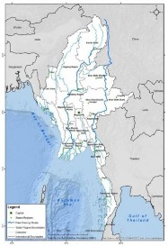
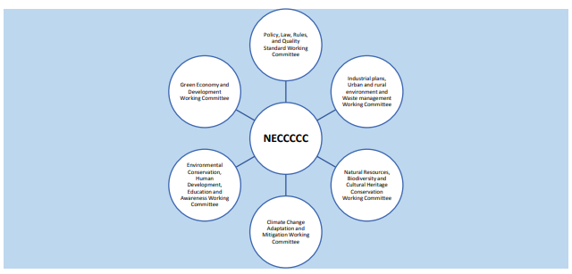
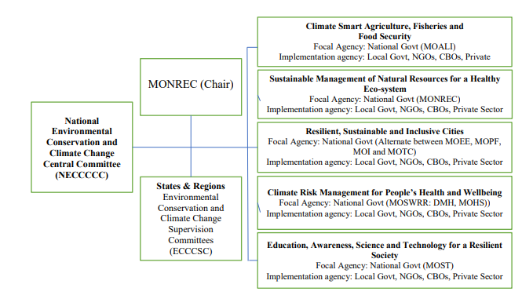
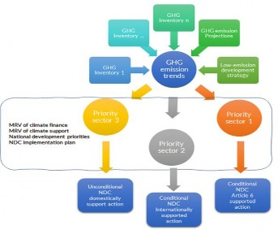
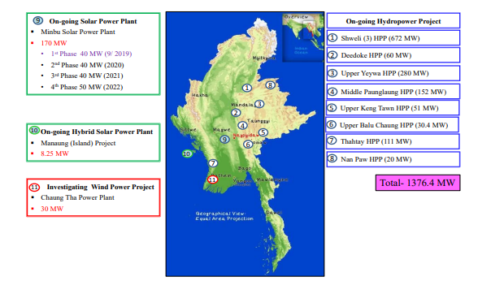
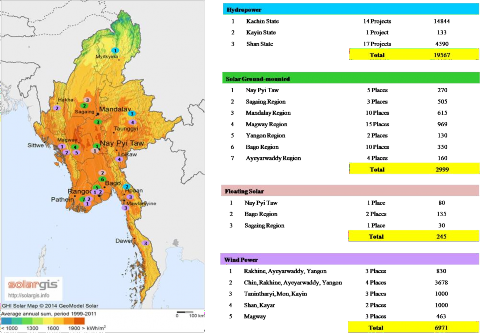
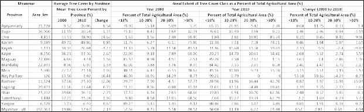
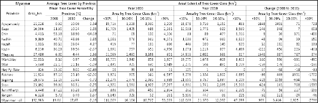

July 2021
The Republic of the Union of Myanmar located in South East Asia, is a nation that is rich in natural resources and whose area of 676,575 km2 spans a diverse range of topography and ecological zones. However, with a population of 54.8 million people, it is also one of the world‟s most vulnerable countries to climate change. Myanmar will play its part in mitigating global climate change while also developing its adaptation response in order to build climate resilience, taking nature-based solutions to climate change so as to minimize exposure of its people and natural capital, increase resilience and safeguard its economy.
One means by which the Government of the Republic of the Union of Myanmar will reduce the vulnerability of its population to climate change and raise significant populations out of poverty is selective and strategic investments in the infrastructure needed for its national economic development. Nevertheless, Myanmar is one of the least GHG emitting countries in the world, contributing only 0.61 tons of CO2e/person, based on 2018 data. Thus, based on its development status, Myanmar’s total emissions reductions contributions as a part of its NDC are 244.52 million tCO2e unconditionally, and a total of 414.75 million tCO2e, subject to conditions of international finance and technical support by 2030, which represents a significant commitment to global climate change efforts based on its national circumstances.
Myanmar's INDC efforts were focused on adaptation, Disaster Risk Reduction (DRR), and mitigation. This NDC builds on those efforts and sets key sectoral conditional targets for energy and agriculture, forestry, and other sectors that the government aims to achieve with international financial and technical assistance.
National Climate Change Policy Mainstreaming:
To ensure that Myanmar continues to develop and maintain conditions that secure the wellbeing and safety of its people, the government has adopted a strategic vision to transform the country into a climate-resilient, low-carbon society that is sustainable, prosperous, and inclusive, for the wellbeing of present and future generations. To achieve its goal as set out above, Myanmar needs to direct its development actions (specifically in the key social, infrastructure, and economic sectors) along two strategic pathways:
Increase the adaptive capacity of vulnerable communities and sectors so that they are resilient to the adverse impacts of climate change, and
Create and maximize opportunities to pursue a low-carbon growth pathway by ensuring development benefits to communities and all economic sectors.
Myanmar has and will be mainstreaming climate change into all relevant short, medium, and long-term national development plans and policies. This includes State and Regional development plans and policies under the guidance of the Myanmar Sustainable Development Plan (2018-2030) which is aligned with the 2030 Sustainable Development Goals (SDG). In addition, the National Environmental Policy (2019)1, Myanmar Climate Change Policy (2019)2, Myanmar Climate Change Strategy (2018-2030)3, and Myanmar Climate Change Master Plan (2018-2030)4 were endorsed in 2019. Myanmar needs cross-cutting support to improve implementation of climate change actions across a diverse array of sectors, broadly defined as: Policy, Institutions, Finance, Capacity, Technology and Partnerships.
The Climate Change Strategy and Master Plan outlines six prioritized sectors pertaining to adaptation, mitigation, and cross cutting issues. In order to support implementation these prioritized sectors, Myanmar will use GCF Readiness support to develop Strategies for Natural Resources Management and for Urban Low-Emissions and Climate Resilient Development.
Climate Change Mitigation Actions:
In the energy sector, Myanmar aims to achieve a conditional annual target of avoiding 144.0 million tCO2e emissions by 2030 against that predicted under the BAU (Business as Usual) scenario, of 297.01million tCO2e. Myanmar aims to achieve this target by: increasing the total share of renewable energy (solar and wind) to 53.5% (from 2000MW to 3070MW) by 2030, and decreasing the share of coal by 73.5% (from 7940MW to 2120MW) by 2030. Under its unconditional target, in the energy sector Myanmar will achieve avoiding 105.24 million tCO2e by 2030 from the BAU.
In the Agriculture sector, Myanmar has introduced a new conditional cumulative target of sequestrating 10.4 million tCO2e over the period of 2021-2030. Through promotion of tree planting and agroforestry Myanmar will raise the average tree canopy cover across 275,000 ha of its agricultural land with <10% tree canopy cover per hectare. MOALI will increase this ambition level pending success in achieving these initial targets.
Within the forest land and other land use sector, Myanmar has set a conditional target of reducing deforestation by 50% by the year 2030, resulting in a cumulative emissions reduction of 256.5 million tCO2e (against the 2005-2015 baseline) over the period of 2021- 2030. Myanmar has also set an unconditional target to reduce deforestation by 25% by the year 2030, resulting in a cumulative net emissions reduction of 123.6 million tCO2e.
Through the distribution of 5.1 million fuel-efficient cookstoves Myanmar will achieve a cumulative emissions reduction of approximately 12.99 million tCO2e during 2021-2030. Of this amount 10.25 million tCO2e will be subject to carbon offsetting while 2.74million tCO2e will contribute to Myanmar‟s NDC target. Traditional cookstoves are also replaced by LPG- based technology substitutions to further reduce the emissions from the use of fuelwood and charcoal. The government has set an unconditional target to support the distribution of one million LPG stoves by the private sector resulting in an emission reduction of 14.94 million tCO2e by 2030.
Under the national program for rural electrification, renewable energy technologies currently contribute an annual electricity generation capacity of 166.4MW. Of this total, 44.41MW is generated through RE mini-grids, providing electricity to 1.8m people of the off-grid rural population, and which will generate 0.564 million tons of CO2e in emissions avoided cumulatively by 2030 as compared to the alternative of power generation using standard diesel generators. The government has set a new NDC conditional target for mini-grid development, that will further increase renewable energy access to the total off-grid rural population of 3.6m people, power generation (88.82MW), and GHG emission avoided will be 0.874 million tCO2e by 2030. The government‟s NDC unconditional target will increase renewable energy access through mini-grids to the total off-grid rural population of 2.7m people, power generation (66.62MW), and GHG emission avoided will be 0.719 million tCO2e by 2030.
Myanmar will also initiate its efforts to promote energy efficiency across a range of sectors. Highlighting the fact that the country is becoming increasingly urban and industrial, Myanmar has set 2030 targets for improvement of energy efficiency of the residential sector by 7.8%, the industrial sector by 6.63%, the commercial sector by 4%, and other sectors by 1.36%.
Thus, the policy target for energy efficiency is a cumulative of 20% by 2030 avoiding a cumulative of 0.133 million tCO2e as a conditional energy efficiency target. Myanmar requests support in developing the baseline data and mitigation actions targeting a range of passive and active energy, heating, and cooling standards and technologies for these sub-sectors.
In addition to the defined sectoral targets above, Myanmar welcomes support to increase the use of integrated resource management and planning approaches (such as the urban nexus approach), to promote low carbon city growth models, and urban resilience paradigms for cities of all sizes. Cities are now home to 29% of the population, and thus need to be safe, resilient, environmentally viable, and carbon-efficient without sacrificing development. Similarly, Myanmar is eagerly exploring GHG emission reduction strategies across the land, marine, and aviation transportation sectors. Priority will be given to electric vehicles, the development of a Shipping Energy Efficiency Management Plan (SEEMP) and a Green Shipping Strategy.
Climate Change Adaptation Actions
Given the high vulnerability of Myanmar, adaptation actions will be a key priority of Myanmar‟s NDC. Myanmar will initiate the process of its National Adaptation Plans and aims to build resilience of all its vulnerable communities and ecosystems identifying and promoting the right community-based and ecosystems-based adaptation measures taking a sectoral approach. The key sectors as identified in the Myanmar Climate Change Strategy to build Myanmar‟s socio- economic resilience are agriculture, natural resources, health, disaster risks, urban planning. Education, training and research will also be a key pillar to enhance local capacities and knowledge to understand and deal with the impacts of climate change.
Myanmar will promote climate-resilient productivity and climate smart responses in the agriculture, fisheries, and livestock sectors to support rural food security and livelihood strategies while also promoting resource-efficient and low-carbon practices that may enhance development of new markets and products. Myanmar will engage in sustainable natural resources management that enhances the resilience of biodiversity and ecosystem services to support social and economic development of the local and indigenous/ethnic5 communities while also delivering carbon sequestration.
Myanmar will ensure communities and economic sectors are able to respond to and recover from climate-induced disasters, risks, and health impacts, including COVID-19, and build a healthy society. Climate-smart health, disaster risk management, and minimized loss and damages of economic and non-economic assets and social protection systems could help to secure and sustain Myanmar's social and economic development, putting it on a climate-resilient pathway. Such systems will enable individuals, households, and national and local actors to absorb, adapt and transform in response to climate-induced risks.
Myanmar will work to develop resilient, inclusive, and sustainable cities and towns where people can live and thrive. Urban planning, physical infrastructure and building designs will be key to contribute to building resilience of cities and towns.
Investments in education, science, and technology-transfer will also be crucial areas for building a smart, knowledgeable, climate-responsive society. Limited capacities are a significant issue for Myanmar and capacity building will be an ongoing process. Myanmar will need support to enhance human capacities throughout the various primary, secondary, tertiary education and vocational training domains. Likewise, climate appropriate technology transfer will play a vital role in enhancing mitigation actions and building resilience and should focus on promoting the development of local green manufacturing and jobs creation.
The Myanmar Action Plan on Disaster Risk Reduction (MAPDRR)6 outlines 7 components to work on disaster risk reduction. With increasing frequency and intensity of natural hazards like cyclones, floods, landslides, heatwaves and slow on-set events like sea-level rise, Myanmar will need international support to implement its MAPDRR and improve its forecasting, early warning systems and marine forecasting tools to minimize loss and damage.
Institutional Frameworks for Planning and Reporting:
A wide range of planning and consultative processes have been utilized, with government agencies and stakeholders followed by ministerial level consultations to get political buy-in. The National Environmental Conservation and Climate Change Central Committee (NECCCCC) provides oversight on all environmental and climate change activities. The Ministry of Natural Resources and Environmental Conservation (MONREC) plays the secretarial role for the NECCCCC and coordinates climate change related activities with relevant line agencies and the State and Regional Governments. In addition, MONREC is the government focal point for the UNFCCC and its climate financing entity, the Green Climate Fund.
Myanmar will also be keen to extend cooperation in the ASEAN region in multiple sectors, including energy, land transport, marine transport, forest conservation and adaptation actions.
A Monitoring, Reporting and Verification (MRV) system is currently being established to enable Myanmar to meet its obligations within the enhanced transparency framework of the Paris Agreement. The MRV system envisaged for the country will serve multiple purposes as well as satisfying requirements for mitigation actions; 1) collecting data and information to account for the country‟s GHG inventories; 2) gathering data for preparation of Biennial Transparency Reports (BTR) required for implementation of the NDCs; and 3) identifying supports (finance, technology, and capacity) needed, and received.
Myanmar will support the Global Stock-taking process by submitting its Biennial Update Report in 2022 and Biennial Transparency Report (BTR) not later than 2024, as mandated by the PA Rule Book. This will take stock of the progress achieved based on:
support received - finance, technology transfer and capacity building, and
mitigation contributions and adaptation actions implemented by the country.
Means of Implementation
Myanmar will allocate domestic financial resources for the implementation of this NDC but will also need a major share of international financing support to be able to meet its conditional targets, to be able to implement mitigation and adaptation actions tied with the process of building back better through green recovery post COVID-19. In addition to the financial support, Myanmar will also seek technological and capacity building support to help meet the targets set in its NDCs.
The Environmental Conservation Department (ECD) within the Ministry of Natural Resources and Environmental Conservation is Myanmar‟s focal agency for the UNFCCC. As such ECD is responsible for coordinating the Government of Myanmar‟s process of defining the Nationally Determined Contributions (NDC) under the Paris Agreement. Under the guidance and supervision of the Union Minister for MONREC, Deputy Minister, Permanent Secretary, Director General U Hla Maung Thein, the Climate Change Division (CCD) has led and coordinated the consultation processes involved in garnering commitments by a diverse range of sectoral departments and ministries for this NDC.
This NDC represents a commitment by the Government of Myanmar as a whole, and therefore could not have been completed without the extensive support, guidance and commitments made by a large array of government agency counterparts. Significant inputs into Myanmar‟s NDC were provided by the following departments: 1) International Organization and Economic Department (Ministry of Foreign Affairs), 2) Planning Department, (Ministry of Planning and Finance), 3) Department of Agriculture (Ministry of Agriculture, Livestock and Irrigation), 4) Department of Rural Development (Ministry of Cooperatives and Rural Development), 5) Road Transport Administration Department (Ministry of Transport and Communications), 6) Department of Meteorology and Hydrology (Ministry of Transports and Communications), 7) Forest Department (Ministry of Natural Resources and Environmental Conservation – MOREC), 8) Dry Zone Greening Department (MONREC), 9) Department of Electric Power Planning (Ministry of Electricity and Energy), 10) Department of Research and Innovation (Ministry of Science and Technology), 11) Department of Urban and Housing Development (Ministry of Construction), 12) Mayors of Nay Pyi Taw, Nay Pyi Taw Development Committee, 13) Mayors of Yangon, Yangon City Development Committee, 14) Mayors of Mandalay, Mandalay City Development Committee.
In the end, this NDC will only be able to be implemented with the support of Myanmar‟s population at large which expects high levels of accountability, transparency and scientific rigor. To this end, ECD conducted numerous consultation meetings and invited written inputs in response to earlier drafts of the NDC. Inputs were provided by >100 civil societies, INGOs/NGOs, Universities, CSOs, and development partner institutions.
The following development partners were invited by ECD to serve as a standing Technical Advisory Panel, whose engagement and support was coordinated by Dr. San Win (CCD, ECD): WWF, the Global Green Growth Institute (GGGI), UNDP/UNREDD, World Agroforestry Center. Particular appreciation go to Mr. Ugan Manandhar and Mr. Shoon So Oo (WWF); Dr. Aaron Russell, Mr. Siddhartha Nauduri, Mr. Nicholas Taylor and Mr. Thiha Aung (GGGI); Dr. Tim Boyle and Ms. May New Soe (UNDP/UNREDD); Dr. Khaing Thandar Soe and Dr. Delia Catacutan (Center for International Forestry Research/World Agroforestry); Ms. Yu Yu Naing (UK-FCDO); and Mr. Yazar Minn (Son Sie); Mr. Kyaw Moe Aung, Mr. Deepak Bawari, Mr. Robert O‟Connor (Consultants).
WWF and GGGI supported ECD in consolidation of inputs and drafting of the NDC.
Financial support for this process was provided by: UNEP under GEF project: “Myanmar: Preparation of Intended Nationally Determined Contributions (INDCs) to the 2015 Paris Agreement under the United Nations Framework Convention on Climate Change (UNFCCC)”, UNDP under the “Global Climate Promise Project”, and UK-FCDO‟s “Son Sie Project”.
ADB Asian Development Bank
AFOLU Agriculture, Forestry and Land use ASEAN Association of South East Asian Nations BAU Business as Usual
CBIT Capacity Building Initiative for Transparency
CBO Community Based Organizations CCC, Korea Climate Change Centre Korea CCRA Child Centered Risk Assessment
CDM Clean Development Mechanism
CDZ Central Dry Zone
CFAVC Climate Friendly Agribusiness Value Chain Sector Project CO2e Carbon dioxide Equivalent
CORSIA Carbon Offsetting and Reduction Scheme for International Aviation CPA Component of Program of Activities
CSA Climate Smart Agriculture
CSO Civil Society Organizations
DDM Department of Disaster Management
DM Disaster Management
DMA Department of Marine Administration
DMH Department of Meteorology and Hydrology
DOA Department of Agriculture
DOE Department of Education
DOPH Department of Public Health
DRD Department of Rural Development
DUDH Department of Urban Housing and Development DRR Disaster Risk Reduction
DZGD Dry Zone Greening Department
EAD Expected Annual Damage
EAO Ethnic Armed Organizations
ECD Environment Conservation Department
EE Energy Efficiency
EF Emission Factor
EITI Extractive Industries Transparency Initiative
EMF Environment Management Fund
EOC Emergency Operations Centre
FAO Food and Agriculture Organization
FD Forest Department
FFS Farmer Field School
FPIC Free Prior Informed Consent
FREL Forest Reference Emission Level
GAFSP Global Agriculture and Food Security Program GAHP Good Animal Husbandry Practices
GCF Green Climate Fund
GEF Global Environment Facility
GGGI Global Green Growth Institute
GRM Grievance Redress Mechanism
ICAO International Civil Aviation
ICCA Indigenous Community Conserved Areas
ICTU Information for Clarity, Transparency and Understanding IMO International Maritime Organization
INC Initial National Communications
INDC Intended Nationally Determined Contributions IPCC Intergovernmental Panel on Climate Change
IP Indigenous People
IT Indigenous Technology
LPG Liquid Petroleum Gas
LULUCF Land Use, Land Use Change and Forestry MAPDRR Myanmar Action Plan on Disaster Risk Reduction MCCP Myanmar Climate Change Policy
MEPS Minimum of energy Performance Standards MOALI Ministry of Agriculture, Livestock and Irrigation MOST Ministry of Science and Technology
MOEE Ministry of Electricity and Energy
MOFA Ministry of Foreign Affairs
MOHS Ministry of Health and Sports
MONREC Ministry of Natural Resources and Environmental Conservation MOPF Ministry of Planning and Finance
MOI Ministry of Industry
MOSWRR Ministry of Social Welfare Relief and Resettlement MOTC Ministry of Transport and Communications MOCRD Ministry of Cooperative and Rural Development MPA Marine Protected Area
MRRP Myanmar Reforestation and Rehabilitation Program MRV Monitoring, Reporting and Verifications
MSDP Myanmar Sustainable Development Plans (2018-2030) MTE Myanmar Timber Enterprise
MUDRA Myanmar Unified platform for Disaster Risk Application NAMA Nationally Appropriate Mitigation Actions
NAPA National Adaptation Program of Actions
NCRMCC National Coastal Resources Management Central Committee NCS Non-Convention Ships
NDC Nationally Determined Contribution
NDCP NDC Partnership
NECCCCC National Environment Conservation and Climate Change Central Committee NEMP National Energy Master Plan
NEP National Electrification Project
NFMS National Forest Management Strategy
NGO Non-government Organizations
PAS Protected Areas System
PA Paris Agreement
PoA Program of Activities
PPF Public Protected Forests
RBP Results Based Payments
RCP Representative Concentration Pathways
RE Renewable Energy
REDD+ Reducing Emissions from Deforestation and Forest Degradation RF Reserved Forests
RF Removal Factor
S&L Standards and Labelling
SDG Sustainable Development Goals
SALT Sloping Agriculture and Land Technology SEEMP Ship Energy Efficiency Master Plan
SHS Solar Home System
SOP Standard Operating Protocol
TA Technical Assistance
TCP Technical Cooperation Program
tCO2e tons of carbon di oxide equivalent
ToF Trees on Farm
ToT Training of Trainers
TTE Technical Team of Experts
UNDP United Nations Development Program
UNEP United Nations Environment Program UPDJC Union Peace Dialogue Joint Committee
URDP Law Urban and Regional Development Planning Law VFV Virgin, Fallow and Vacant
WWF World Wide Fund for Nature
YAU Yezin Agricultural University
The Government of the Republic of the Union of Myanmar, hereinafter referred to as Myanmar, is rich in natural resources and diverse in topography. However, it is one of the world‟s most vulnerable countries to climate change impacts7. The residents of eight major national races and 135 ethnic groups of Myanmar, in particular the Central Dry Zone (CDZ), the Delta Region, and those living along the 2,851 km of coastline are naturally exposed to severe climatic events. In addition, the people of the hilly regions and the low-lying plains will be adversely affected by the impacts of climate change. Myanmar is currently addressing the climate change risks and is identifying opportunities to enhance its socio-economic development striving for a balance between aspirations to meet its development needs, attract investments and reduce poverty across the country.
Myanmar is determined to play its part in mitigating global climate change taking into consideration its socio-economic context, while also developing its adaptation responses in order to build climate resilience through promotion of nature-based solutions to climate change. This is to minimize exposure of its people and degradation of natural capital, to increase their resilience, and to safeguard the nation‟s economy given climate change could also have devastating impacts on its GDP. According to the PDNA- Post Disaster Needs Assessment-2015, the losses and damages caused by floods and landslides had an impact of 3.1% of the GDP8.
Myanmar is strengthening its institutional frameworks, developing policy tools, identifying opportunities for technology transfer, and investing in human capacity building through an array of domestic initiatives and international partnerships. The Ministry of Natural Resources and Environmental Conservation – MONREC – plays a focal role in advocating, coordinating, and reporting on environmental and climate change matters and reports on these actions to the inter- ministerial National Environmental Conservation and Climate Change Central Committee (NECCCCC).

Figure 1. Map of the Republic of the Union of Myanmar
Myanmar submitted its INDC9 in August 2015 and endorsed the Paris Agreement in 2017. Based on the INDC, work has progressed in the forestry, electricity, and rural renewable energy sectors. Adaptation was identified as a priority and work has progressed across a range of sectors. In the coming years, the means of implementation, through international financial support, technology transfer, and capacity building, will allow Myanmar to scale-up enhanced adaptation and mitigation actions as outlined in the following chapters. Furthermore, in the context of COVID- 19, green recovery options will be prioritized by Myanmar.
Myanmar acknowledges all of the support it has received from the bilateral and multilateral donors and development partners in the implementation of the INDC as well as in this NDC revision process and welcomes their continued support to enable the country to achieve its NDC objectives going forward. Furthermore, building on the Nationwide Ceasefire Agreement (NCA) with Ethnic Armed Organizations (EAO), it recognizes that ensuring and establishing peace and stability across the country will also be vital in assisting Myanmar to achieve its mitigation targets and enhance adaptation throughout the country.
However, with the climate change crisis, the COVID-19 pandemic has been the two biggest challenges the world in currently facing. The pandemic has affected the economic growth and climate agenda including 1) disturbance of supply chains and trade flows, 2) declining retail and discretionary spending, 3) complete termination of tourism, 4) losses of jobs, 5) declining consumer and investment sentiment, and 6) delays and impediments for implementation of both national and international climate actions. In the midst of the COVID-19 pandemic, Myanmar endorsed the COVID-19 Economic Relief Plan (CERP) that identified priority actions to be undertaken by the government to provide support for the most affected sectors of society in the midst of the COVID-19 and to initiate enhance recovery efforts.
While global efforts continue to pursue a breakthrough for a vaccine, a global green recovery is crucial to ensure a mainstreaming of green economic reforms that reinforce the mandate of the Paris Agreement. The government is currently also developing the Myanmar Economic Recovery and Reform Plan (MERRP) to ensure that the post-COVID recovery will mainstream key opportunities to “build back better” by promoting the development of more efficient, effective, and environmentally sustainable technologies and planning approaches.
Myanmar will also be participating in the UNFCCC: COVID-19 Online Platform, where it will inform the international community about its green recovery policies, measures and actions related to climate adaptation and mitigation actions, and the environment as a whole. Since Myanmar become a member of NDC Partnership in June 2020, it is preparing to implement a COVID-19 recovery support programme with support of the NDC Partnership – NDCP to support integrating climate actions in the national economic recovery planning response to the COVID-19 global pandemic.
Myanmar, as a Party to the Paris Agreement (PA), has developed policy instruments and action plans and set-up sectoral coordination mechanisms to play its role in the global efforts on climate change. As part of its domestic actions (for both adaptation and mitigation), the country has taken steps to create enabling environments to enhance collaboration and guide the means of implementation through technology, capacity building, and climate finance.
Myanmar has established a clear institutional framework to mainstream climate change into all relevant short, medium, and long-term national development plans and policies. The Myanmar Climate Change Policy (MCCP) (2019)10, Myanmar Climate Change Strategy (MCCS) (2018- 2030)11, and Myanmar Climate Change Master Plan (MCCMP) (2018-2030)12 were endorsed and launched on June 5, 2019. The MCCP outlines the country‟s long-term goals to be a climate- resilient, low-carbon society that is sustainable, prosperous, and inclusive, for the wellbeing of present and future generations. The objectives, which are in accord with implementing the Paris Agreement, are to promote adaptation and mitigation, integrate these actions across all sectors, and take decisions to create and maximize opportunities for sustainable, low-carbon, climate resilient development by 2030.
The MCCP‟s nine guiding principles include: (1) Sustainable Development; (2) Precaution; (3) Prevention; (4) Environmental Integrity; (5) Shared responsibility and cooperation; (6) Inclusiveness; (7) Good Governance; (8) Climate justice and equity; and (9) Gender equality and women‟s empowerment. These principles will guide implementation of climate actions on the ground and ensure integration of FPIC (Free Prior and Informed Consent) in all initiatives and as appropriate to promote and protect the rights of Myanmar‟s citizens to live in a healthy environment and a fair, equitable, and sustainable society, in particular the poorest and most vulnerable people.
The MCCP was developed in parallel with, and informed the development of the Myanmar Sustainable Development Plan (MSDP) (2018-2030), which has defined clear climate change mitigation and adaptation relevant measures and requirements for reporting against measurable indicators by all National, State and Regional development plans and policies.
Two key sectoral policy documents impacting Myanmar‟s future GHG emissions relate to Forestry and Energy. Forestry currently contributes some 80% of Myanmar‟s GHG emissions. Myanmar‟s National Forestry Master Plan (NFMP) (2001-2031) and Myanmar Reforestation and Rehabilitation Program (MRRP) (2017-2026) provide clear frameworks for Myanmar‟s mitigation activities related to forestry, while also providing significant biodiversity and adaptation co-benefits. Similarly, whereas the National Electricity Master Plan (2014) was guided by a “Business as Usual” (BAU) implementation of the current generation energy mix, this NDC sets clear targets for GHG emissions reductions and emissions avoided in this sector.
Myanmar has developed numerous sectoral policies that will directly support implementation of the MCCP. The National Environmental Policy (NEP) (201913 envisions a clean environment with healthy and functioning ecosystems to ensure inclusive development and well-being for all residents. Myanmar has also endorsed the National Waste Management Strategy and Master Plan (2018-2030)14 and Hazardous Waste Management Master Plan (2020) and the National Energy Efficiency and Conservation Policy, Strategy and Roadmap (2016)15. Further policies under development to mainstream climate change action, and to promote low-carbon development pathways include the National Green Economy Policy Framework (GEPF), National Environmental Strategic Framework and Master Plan, Environmental Human Resource Development Strategy, and Guidelines on Climate Change Resilient Architecture.
In the near future, Myanmar expects to continue expanding the scope of its climate change actions to revise and/or develop new policies and strategic frameworks covering such sectors as transport, energy efficiency, and industrialization. Myanmar has already prioritized the development of national strategies for natural resources management, and low-emissions and climate resilient urban development in its submissions for Green Climate Fund Readiness grants. The Myanmar COVID-19 Economic Relief Plan (2020) also prioritizes climate and environment friendly infrastructure investments (renewable energy) on an expedited basis.
To ensure Myanmar continues to develop and maintain conditions to secure the wellbeing and safety of its people, Myanmar has adopted a strategic vision to transform Myanmar into a climate-resilient, low-carbon society that is sustainable, prosperous and inclusive, for the wellbeing of present and future generations. With this vision as a beacon over the next 10 years, Myanmar will organize and maximize the efforts of its government, regions, local communities, public and private sectors, and civil society.
In line with the vision above, Myanmar aims to become a climate-resilient country, while also contributing to global efforts to curb GHG emissions, reducing its contribution to climate change within a realistic timeline of 10 years. Myanmar wishes to develop in a sustainable way to ensure it does not deplete its rich environmental capital beyond its capacity, and to create economic opportunities for everyone in an inclusive manner. The long-term goal of this strategy to achieve this vision is: By 2030, Myanmar has achieved climate-resilience and pursued a low-carbon growth pathway to support inclusive and sustainable development.
To achieve its goal as set out above, Myanmar needs to direct its development actions (specifically in the key social, infrastructure and economic sectors) along two strategic pathways:
One pathway is building resilience so that communities, ecosystems, the economy and all assets (whether industrial, urban, educational, domestic and so on) are adapted to current and projected climate change, in a way that allows them to continue to perform and thrive at maximum level under the adverse climate change scenarios where the impacts already being felt and those that are projected to intensify in the coming decades, and face minimum loss and damage once adaptation fails.
The second pathway is making development choices that are low-carbon whereby development opportunities are pursued in line with the global effort to combat climate change and provide the correct balance between development and environmental sustainability.
These two pathways reflect the parallel adaptation and mitigation requirements where Myanmar needs to concentrate its efforts to ensure it is a climate-resilient nation pursuing a low-carbon development pathway by 2030. They are expressed as two separate but parallel objectives that the country needs to achieve to meet the long-term goals to:
Increase the adaptive capacity of vulnerable communities through interventions in Agriculture, Fisheries, Livestock, Water, Marine and Coastal, Infrastructure, Health, Education, Energy, Urban Development sectors so that they are resilient to the adverse impacts of climate change and create and maximize opportunities for sectors to pursue a low-carbon growth pathway while ensuring development benefits to communities and all economic sectors.
In its commitment to implement the Paris Agreement, Myanmar hereby submits this revised and enhanced NDC (Nationally Determined Contribution). This NDC sets ambitious quantified GHG mid-term emissions mitigation targets for the period of 2021-2030 in line with its socio- economic context for the Electricity and Agriculture, Forestry and other Land Use (AFOLU) Sectors. The NDC also identifies an array of programs that will deliver mitigation co-benefits related to energy efficiency, urban development, transportation, rural electrification, and cookstove distribution including LPG.
Given Myanmar‟s vulnerability and exposure to climate change, adaptation was and will always remain the nation‟s first priority and this NDC presents a clear assessment of the adaptation needs of the country based on the climate scenarios, trends, vulnerability, and risks faced by Myanmar (please see Annex I for INDC).Climate change linked Loss-and-Damage will therefore be a significant concern for Myanmar and will form a key part of its request for support in implementing this NDC.
This NDC compiles these targets; the different activities, projects, and programs; and the need for technical and financial support to help Myanmar be a worthy global citizen to achieve its mitigation targets as well as its domestic adaptation needs. The MCCS (2018-2030)16 and MCCMP (2018-2030)17 are the key guiding documents for the implementation of Myanmar‟s revised NDC, addressing both the current adaptation and mitigation priorities, and allowing scope for future amendments as the country learns from the successes and challenges faced in implementation.
The MCCS&MP outlines six prioritized sectors pertaining to adaptation, mitigation, and cross cutting issues namely:
Climate-smart agriculture, fisheries, and livestock for food security
Sustainable management of natural resources for healthy ecosystems
Resilient and low carbon energy transport and industrial systems for sustainable growth
Resilient, inclusive, and sustainable cities and towns where people can live and thrive
Climate risk management for people‟s health and well being
Education, science, and technology for a resilient society.
Based on the above six sectors, the MCCMP outlines a total of 311 actions related to adaptation and mitigation or both; out of which 134 results are expected in the short-term; 117 results are expected to be achieved in the mid-term and 60 results are expected to be achieved in the long- term.
In order to inform the development and implementation of the Green Economy Policy Framework (GEPF), and the Climate Change Policy, Strategy and Master Plan, a Green Growth Potential Assessment (GGPA) was undertaken to identify immediate actions that have the particular potential for promotion of low-carbon development pathways (GGPA Country Report, 2017)18 and that could contribute to achievement of the NDC (GGPA Policy Brief for NDC Implementation, 2017)19. The six sectors identified were: Agriculture Land use and Forestry (AFOLU), Energy, Mining, and Industry; Commerce and Tourism, Urban development (including waste management) and Infrastructure, and two cross cutting support sectors (Education and Governance). Of these, quantifiable GHG emissions mitigation targets related to AFOLU and Energy have been specified in this NDC, and further actions to establish baselines for, and promote future emissions reductions in the sectors of Energy Efficiency and Urban development have been initiated. These and other sectors will be explored from 2020 onward and will inform the development of the next NDC in 2025.
Furthermore, building on the lessons learnt from Myanmar‟s three NAPA projects, as well as on- going climate change adaptation projects, Myanmar will develop National Adaptation Plans (NAPs) for mid and long-term adaptation actions in the priority sectors identified in the Myanmar Climate Change Strategy and Master Plan. These will use the LDC NAPs guidelines and refer to recommendations from a NAPs Stock-take which was completed in Myanmar in 2015.
Following the submission of this NDC, Myanmar will undertake an assessment of how it can implement the additional actions set in it. Myanmar would like to conduct a detailed analysis of systems and structures and corresponding climate finance needed to implement these actions. The NDC implementation plan will include an assessment of both the conditional and unconditional targets set in this NDC, the necessary enabling environment, the key stakeholders to be consulted in the development of such plans as well as human, technical, and financial resources. It will explore the various pathways in which the NDC targets can be achieved, including an assessment of any market mechanisms that can be deployed to support the country. The climate finance assessment will cover the necessary sources of financial resources that will be needed to create the enabling environment, create awareness across different stakeholders, and improve the overall technical training and capacity-building needed. This, in turn, is expected to help estimate the necessary carbon finance needed and different means of mobilizing it, both internal and external. As part of the funding request submitted and approved by the GEF for funding through the Capacity Building Initiative for Transparency (CBIT) stream, Myanmar intends to strengthen its institutional and human capacities to track and report transparently on implementation of this NDC and support received.20
With this NDC, the Myanmar government lays the foundation for, and expresses its commitment to promote climate change adaptation and GHG mitigation actions across its full range of economic sectors. Future NDC revisions will incorporate updates on the achievements and lessons learned from the challenges in implementing the actions outlined in the INDC and in this NDC. This will allow Myanmar to develop long-term, economy-wide targets that are adapted to the national context, and that have the full support of the nation‟s decision makers and population. Where possible, a future NDC will also seek to expand its coverage of GHG gasses considered beyond CO2.
Based on its socio-economic conditions and with limited capacity, resources, and technologies, and in line with UNFCCC Decision 1/CP 21, para 31 (c) and (d), Myanmar is currently not in a position to take an economy-wide approach in quantifying and reducing emissions but will aspire to do so in the future. Similarly, Myanmar will only account for reductions in CO2 or a representation in CO2e and is not able to report on non-CO2 GHG gases at this time. Additional sectoral considerations regarding pools and gasses are presented in Section 6 (Assumptions and Methods).
In consideration of “Information to Facilitate Clarity Transparency and Understanding (ICTU),” Myanmar‟s 2021-2030 NDC mitigation contributions primarily set targets for two economic sectors – namely Energy and FOLU (Forestry and Other Land Use). The NDC builds on the ongoing INDC efforts, with the NDC providing better quantification of each sectoral target, and it identifies/updates new targets for several additional sectoral activities such as agriculture (agroforestry), rural electrification (mini-grid development), fuel-efficient cookstove substitution, LPG cookstove substitution, and energy efficiency measures.
This NDC defines two sets of targets: unconditional targets that will be achieved through the actions undertaken by the government with its own national budgetary resources, and conditional targets that build on the unconditional targets and describes the total national GHG emission reduction that may be achieved if international support is provided.
The primary policy document defining the national energy mix target is the National Electricity Master Plan (2014). Since that policy document was developed the projections for national energy demand have resulted in an overall reduction by 2030 from 23,594MW under the BAU scenario to 18,239MW-18,329MW under this NDC. At the present time, the Government of Myanmar proposes the following Unconditional and Conditional Targets for its electricity generation-mix.
Table 1. Proposed Electricity Generation mix – NDC targets compared to BAU21
|
Generation Technology |
(MW) |
BAU22 (%) |
Unconditional Target (MW) (%) |
Conditional Target (MW) (%) |
|||||
|
RE (Hydro) |
8896 |
38% |
}47% |
5156 |
28% |
}39% |
5676 |
31% |
}48% |
|
RE(Others) |
2000 |
9% |
2000 |
11% |
3070 |
17% |
|||
|
Natural Gas/LNG |
4758 |
20% |
6063 |
33% |
6063 |
33% |
|||
|
Coal |
7940 |
33% |
3620 |
20% |
2120 |
11% |
|||
|
Interconnection |
- |
- |
1400 |
8% |
1400 |
8% |
|||
|
Total |
23594 |
100% |
18239 |
100% |
18329 |
100% |
|||
Due to increasing national sensitivities around social and environmental safeguards associated with large-scale hydropower infrastructure development, the government has reduced its intended expansion of this energy source from a BAU of 38% to 28% (5156MW) or 31% (5676MW) under this NDC. The government is committed to reducing its reliance on coal from 33% under a BAU scenario to 20% (3620MW) as an unconditional target by 2030, but with international assistance Myanmar, has set a conditional target of 11% (2120MW).
Myanmar commits to an unconditional target for new renewable energy of 11% (2000MW) by 2030. With sufficient international support, Myanmar aims to increase the RE (other) contribution to 3070 MW (17% of the total energy mix) and would make a proportionate reduction in the percentage of energy generation from coal. Myanmar is eager to explore a wide range of technological innovations, first and foremost related to solar and wind energy and potentially exploring mini-hydro, biomass, tidal and other sources of renewable energy as well. Future targets for renewable energy will be achieved with technology that is most suitable at the time. The Government established a National Renewable Energy Management Committee in 2019 under the President‟s mandate to explore improvements in faster, cleaner, and cheaper energy sources.
3.1.1.1 Reference Period for the Energy sector: 2030
The Reference year for the energy sector is 2030, comparing the emissions projected under the BAU scenario and emissions avoided under the NDC unconditional and conditional scenarios projected for that year.
3.1.1.2 Quantifiable Electrification and Emissions in the Reference Period
The projected annual emissions by 2030 in the BAU scenario (Table 2) is calculated using the IPCC 2006 GPG (Good Practice Guidelines) Emissions Factor23 and (EF) and the efficiency of the technology from the ADB Guidelines24 as elaborated in Section 6 (Methods and Assumptions).
Table 2. Calculation of BAU Energy Sector target by 203025
|
Generation Technology |
MW |
Capacity Factor |
MW (%) |
Efficiency |
|
RE (Hydro) |
8,896 |
38% |
||
|
RE: Other (Solar & Wind) |
2,000 |
9% |
||
|
Coal/ Thermal |
7,940 |
0.8 |
33% |
45% |
|
Gas |
4,758 |
0.8 |
20% |
60% |
|
Total |
23,594 |
100% |
Based on a BAU scenario, the average annual emissions during the period 2021-2030 is expected to increase from 5.40 MT CO2e in 2020 to reach 54.00 MT CO2e by 2030, with a cumulative GHG emissions of 297.12 MT CO2e between 2021-2030 (Table 3).
Table 3. Annual BAU Emissions for Electricity Generation (2021-2030) (MtCO2e)26
|
Generation Technology |
2021 |
2022 |
2023 |
2024 |
2025 |
2026 |
2027 |
2028 |
2029 |
2030 |
TOTAL |
|
Renewable (Hydro) |
- |
- |
- |
- |
- |
- |
- |
- |
- |
- |
- |
|
Renewable (Other) |
- |
- |
- |
- |
- |
- |
- |
- |
- |
- |
- |
|
Coal |
4.28 |
8.56 |
12.83 |
17.11 |
21.40 |
25.67 |
29.95 |
34.22 |
38.50 |
42.78 |
235.28 |
|
Natural Gas/LNG |
1.12 |
2.24 |
3.37 |
4.49 |
5.61 |
6.73 |
7.86 |
8.98 |
10.10 |
11.22 |
61.73 |
|
Intl Interconnection |
- |
- |
- |
- |
- |
- |
- |
- |
- |
- |
- |
|
Total |
5.40 |
10.80 |
16.20 |
21.60 |
27.00 |
32.40 |
37.80 |
43.20 |
48.60 |
54.00 |
297.01 |
3.1.1.3 Policies, Strategies and Plans of the Energy Sector (Electricity)
Myanmar's NDC targets for the electricity sector are guided by the Myanmar Energy Policy27 (2015) and the National Electricity Master Plan (2014). The National Energy Policy aims to systematically explore the available energy resources of the county in order to supply the demand of the country and to export as value added products for surplus resources, thus ultimately targeting to sustainably improve the living standard of the country people. The purpose of the National Electricity Master Plan was to demonstrate a harmonized middle/long term of power sources and transmission systems while sharing information closely with relevant organizations in Myanmar and other development organizations under the necessary technical transfer to the counterpart(s) of Myanmar. Myanmar is also in the process of developing its National Renewable Energy Policy which will be submitted to the UNFCCC once it is endorsed and launched. The Myanmar Climate Change Policy28, Myanmar Climate Change Strategy (2018-2030) and Myanmar Climate Change Master Plan 2018-2030) are also relevant in considerations of energy and electricity in line with the strategy on Resilient and low carbon energy transport and industrial systems for sustainable growth.
3.1.1.4 Unconditional Target for the Energy Sector
By 2030, the share of new renewable energy technology will remain unchanged as to 2000MW and coal will decrease by 54.4% from BAU (7940MW), reducing to 3620MW. Due to social and environment safeguards concerns, the proportion of large hydropower generation will also decrease, but both hydropower and coal will be replaced by Natural Gas/LNG (Table 4).
Table 4. Energy Sector Unconditional Targets (2020 - 2030)29
Generation Technology MW % MW % MW %
|
2020 |
2025 |
2030 |
||||
|
Renewable (Hydro) |
2771 |
46.5% |
3388 |
31% |
5156 |
28% |
|
Renewable (Other) |
40 |
0.7% |
1440 |
13.% |
2000 |
11% |
|
Natural Gas/LNG |
3031 |
50.8% |
5031 |
46% |
6063 |
33% |
|
Coal |
120 |
2% |
720 |
6.5% |
3620 |
20% |
|
Intl Interconnection |
- |
- |
400 |
3.5% |
1400 |
8% |
|
Total |
5962 |
100% |
10979 |
100% |
18239 |
100% |
The average annual emission by 2030 is 19.2 million tCO2e and the average annual avoided emission will be 10.5 million tCO2e (29.7-19.2) in 2030 compared to BAU (Table 5).
Table 5. Annual GHG emission scenario from Electricity under 2021-2030 Unconditional Targets (MtCO2e)30
|
2021 |
2022 |
2023 |
2024 |
2025 |
2026 |
2027 |
2028 |
2029 |
2030 |
TOTAL |
|
|
RE (Hydro) |
- |
- |
- |
- |
- |
- |
- |
- |
- |
- |
- |
|
RE (Other) |
- |
- |
- |
- |
- |
- |
- |
- |
- |
- |
- |
|
Coal |
0.647 |
1.455 |
2.263 |
3.071 |
3.879 |
7.004 |
10.129 |
13.254 |
16.379 |
19.504 |
77.584 |
|
Nat. Gas/LNG |
7.150 |
8.329 |
9.509 |
10.688 |
11.868 |
12.354 |
12.841 |
13.328 |
13.815 |
14.302 |
114.185 |
|
Intl Interconnection |
- |
- |
- |
- |
- |
- |
- |
- |
- |
- |
- |
|
Total |
7.796 |
9.784 |
11.772 |
13.759 |
15.747 |
19.359 |
22.970 |
26.582 |
30.194 |
33.806 |
191.769 |
Conditional Target for the Energy Sector
If the price and performance of the new RE technologies are satisfactory, and if there is more appetite for investments through international support and access to climate finance, by 2030 the share of new renewable energy technology will increase by 53.5% from BAU (2000 MW) to 3070 MW and coal will decrease by 73.3% (5820 MW) from BAU (7940 MW), reducing it to 2120 MW (Table 6).
Table 6. Energy Sector Conditional Targets (2020 – 2030)31
|
2020 |
2025 |
2030 |
||||
|
Generation Technology |
MW |
% |
MW |
% |
MW |
% |
|
Renewable (Hydro) |
2771 |
46.5% |
3388 |
32% |
5676 |
31% |
|
Renewable (Other) |
40 |
0.7% |
1680 |
15.83% |
3070 |
17% |
|
Natural Gas/LNG |
3031 |
50.8% |
5031 |
47.37% |
6063 |
33% |
|
Coal |
120 |
2% |
120 |
1.1% |
2120 |
11% |
|
Intl Interconnection |
- |
- |
400 |
3.7% |
1400 |
8% |
|
Total |
5962 |
100% |
10619 |
100% |
18329 |
100% |
The average annual CO2 emission by 2030 under a conditional target scenario will be 15.3 million tCO2e and the average annual avoided emission under the conditional targets will be 14.4 million tCO2e (29.7-15.3) in 2030 compared to BAU (Table 7).
Table 7. Annual GHG emission scenario from Electricity for 2021-2030 Conditional Targets (MtCO2e)32
|
Generation Technology |
2021 |
2022 |
2023 |
2024 |
2025 |
2026 |
2027 |
2028 |
2029 |
2030 |
TOTAL |
|
RE (Hydro) - |
- |
- |
- |
- |
- |
- |
- |
- |
- |
- |
|
|
RE (Other) - |
- |
- |
- |
- |
- |
- |
- |
- |
- |
- |
|
|
Coal |
0.647 |
0.647 |
0.647 |
0.647 |
0.647 |
2.801 |
4.957 |
7.112 |
9.267 |
11.422 |
38.792 |
|
Nat. Gas/LNG |
7.150 |
8.329 |
9.509 |
10.688 |
11.868 |
12.354 |
12.841 |
13.328 |
13.815 |
14.302 |
114.185 |
|
Intl Interconnection |
- |
- |
- |
- |
- |
- |
- |
- |
- |
- |
|
|
Total |
7.796 |
8.976 |
10.155 |
11.335 |
12.514 |
15.156 |
17.798 |
20.440 |
23.082 |
25.724 |
152.976 |
44% of Myanmar is yet to be electrified, with electrification being a key driver to boost economic growth across the country. Therefore, the Government has a dedicated and keen interest to deploy cheap, fast, and clean electricity. At the same time, Myanmar faces numerous barriers to investment in renewable energy technologies in the national grid. These include limitations in 1) technical capacities; 2) policies, laws and regulatory processes; and 3) financing mechanisms.
While the Government of Myanmar is sensitive to widespread societal concern over the social and environmental safeguards associated with the development large-scale hydropower, it has identified 19567 MW of additional potential hydropower for development in the MSDP (Table 25).
The government is similarly seeking to reduce its reliance on coal. Unfortunately, while solar and wind electricity generation technologies are recognized as being critical for the future, as yet, there is low capability of power system in most renewable energy technologies other than large hydropower. Coal will not increase beyond 2030 and completely phase out in 2050. In the mid- term, until it develops the technical, institutional, and financial infrastructure needed to scale up its RE generation capacity, Myanmar will rely on natural gas/LNG to provide one third of its national energy mix.
The timeframe of this NDC (2021-2030) should be considered as a transition period during which increased investments in financial, technical, and institutional resources will allow new measures to be tested, and during which capacity building will enable the country to learn how best to target its emissions reduction efforts.
It is expected that rural electrification through mini-grids, micro-hydro, and solar home systems will expand. In due course, Myanmar will also investigate feed-in tariff systems and net metering to ensure the sustainability of mini-grids should the national grid extend to these areas.
3.1.2.1 Renewable Energy Projects identified to help meet NDC Targets
MOEE has a pipeline of ongoing investments in renewable energy-based projects that are expected to generate 1268.25MW in solar power and wind power by 2030. It should be noted that several of these tenders were just recently announced by the Government as prioritized actions in its COVID-19 Economic Response Plan (CERP). (Annex I: Energy Sector Mitigation Supplementary information -Table 24 for detailed projects under development and Figure 5: Projects with Pre-feasibility Assessments, Feasibility Assessments, Ongoing for their location). In addition, the Government has identified a total of 10215MW in potential solar, wind, and floating solar projects to be developed (Annex I: Energy Sector mitigation supplementary information) but feasibility studies pending. Detailed lists of RE Projects that may contribute to the NDC or its next revision, both existing and those under development, and their locations are provided in Annex I: Energy Sector mitigation supplementary information. It should be noted that many of the projects under development are at exploratory stages and will be subject to pre- feasibility and feasibility studies. These are currently not included in the national NDC targets. (Ongoing and Planned RE Projects that may contribute to the NDC)
3.1.2.2. Financing for the Energy Sector
The Government has committed an allocation of US$ 2.482 billion for hydropower development to support ongoing projects proposed in the energy mix through 2030. In addition, the country has applied for a soft-loan of US$ 310 million to upgrade rural transmissions and distribution systems.
In order to support the development of enabling policies, to finance the detailed feasibility analyses, and to allow for the design and implementation of these renewable energy projects, the Government of Myanmar seeks international support, including from the Green Climate Fund, and diverse bilateral and multilateral development partners and financing institutions. The Government estimates a total additional budget needed to support implementation of the NDC conditional target for the energy sector at US$1.209 billion described in Annex 1 (Climate Finance requirement for NDC Conditional Target in the Energy Sector). Support may include different financial models like grants, grants with revolving funds mechanisms, or concessional loans so as to help the Government of Myanmar create enabling conditions.
3.1.2.3. Data and Information Collection Systems for the Energy Sector
Myanmar has initiated a baseline data collection needs assessment for the energy sector to support development of Myanmar‟s institutional capacity required to Monitor, Report and Verify (MRV) on Myanmar‟s commitments under the NDC. 33 The institutional monitoring and reporting frameworks will be developed with support from the Global Environment Facility (GEF) - Capacity Building Initiative for Transparency (CBIT). This will build on the work carried out in 2018-2020 by ECD, UNEP, and GGGI in defining the scope and top-level data and information systems needed to build the national MRV system for meeting the requirements of the enhanced transparency framework.34 The following data and information will be collected to support the country in future reporting against its NDC targets.
Baseline assessment: Policies and measures being implemented in the country will be used to create quantifiable targets, both for estimating the projected emissions from the sector and to assess the impacts of climate-effective policies and measures currently being implemented and planned as a result of these efforts. Data points include:
Total installed capacity by energy source
Planned installed capacity expansions to be installed, and fuel sources
Assessments of suppressed demand, and how the energy requirements of the country could be adequately met
Carbon-intensity of the planned and intended capacity expansions, based on fuel sources.
Achievements and target setting: Achievements will be reviewed against the targets set under the NDC, and their continued applicability will be evaluated based on projections and planned implementation projects. The following data will be collected:
Year-wise commissioned capacities by energy source category
Year-wise energy generated and supplied to the grid by energy source category
Fuel-use by category and sub-category in transport industry
Energy-efficiency measures: Baseline or control group data will be continually monitored, as well as the results of implemented energy efficiency measures.
Data and information: Institutional arrangements, procedures, and systems; the key stakeholders, their roles and responsibilities; and the types and formats of data and information provided to the NDC will be monitored.
Reporting: The data and information collected through the MRV system being developed will be reported in the first biennial transparency report (BTR) that will be prepared for first reporting under the Paris Agreement.
Myanmar‟s INDC did not set any mitigation target for the agriculture sector. However, Myanmar now enhances its NDC by setting a conditional target for agroforestry, recognizing its potential for GHG sequestration, and in supporting productive rural livelihoods under a changing climate. Agriculture is the second largest sectoral source of GHG emissions in Myanmar, accounting for 32.1% in the 2013 baseline year35, with the primary contributors being rice cultivation (~12%), and enteric fermentation (~9%). These GHG emissions are closely associated with deforestation and land-use change for agricultural expansion (both large and small scale). The Government‟s commitment to the Paris Agreement provides an opportunity for the Myanmar to recognize the contributions made by the agricultural sector to contribute to climate change adaptation, while also to examining major sources of GHG emissions.
Recognizing the inclusion of trees on farms and in agricultural farming systems is crucial as deforestation and forest degradation in Myanmar is increasing thereby accelerating societal vulnerability to climate change impacts. A growing awareness of the roles of trees in supporting rural livelihoods, environmental conservation, and climate change mitigation, has raised the need for targeted promotion of sustainable agroforestry practices among decision makers. Being the origin of the internationally well-known „Taungya system‟, Myanmar has been practicing agroforestry since the mid of 1800s, generating economic and environmental benefits for local communities.36,37 With diverse ecological zones, several types of agroforestry systems and practices have been practiced in Myanmar, including agro-silvicultural (shelterbelts, windbreaks, hedgerow, home gardens), silvo-pastoral (tree crops with pasture, trees on rangeland), and agro- silvo-pastoral (home gardens with animals, multipurpose woody hedgerows, aqua-forestry) among others.
As Myanmar lacks a national inventory for agroforestry or tree cover on agricultural lands38, the reference period for this sector is based on the global tree cover change analysis of agricultural lands conducted by Zomer et al., (201639). This study classifies the % tree cover according to 4 levels (<10%, 10-20%, 20-30%, >30%). It estimates between 2000 and 2010 an average tree- cover loss of 2.19% nation-wide, which corresponds to a decline in biomass carbon (below and above ground) of Myanmar‟s agricultural lands from 28.7t C/ha to 25.7t C/ha.
With financial and technical support from international development partners, the Government of Myanmar through the Ministry of Agriculture, Livestock and Irrigation‟s (MOALI) Department of Agriculture (DoA) is committed to the reduction of GHG emissions from the Agriculture, Forestry, and Other Land-Uses sector (AFOLU) by increasing the percentage of tree cover on agricultural landscapes. For the current NDC, the <10% tree cover class per hectare is of primary relevance as it covers the largest area of land nation-wide (estimated at 112,068km2or 58% of the total agriculture land in 2010). Furthermore, these tree planting actions need not significantly alter the primary agricultural cropping systems in use by smallholders. Rather rural stakeholders would be expected to gain a variety of climate change adaptation co-benefits, gaining supplementary sources of food, fuelwood, livestock fodder, and income, as well as enhancing resilience of their agricultural production systems through improved water infiltration, pollination, pest control, soil health, microclimates, and reduced erosion.
3.2.1.1 Reference Period for Agriculture Sector: 2000-2010
The reference period for the Agriculture Sector is 2000-2010.
3.2.1.2 Quantifiable emissions and removals in the reference period
A detailed presentation of tree cover change during the reference period (2000-2010) for each state and region is provided in (See: Reference period removals due to tree cover change by state/region). During this period, the area of land with <10% tree canopy per hectare cover increased by 0.52%, corresponding to a total area of 99,900 ha nationwide.
3.2.1.3 Policies, Strategies and Plans for the Agriculture Sector
Agroforestry will play a critical role in supporting the long-term goal of Myanmar‟s Climate Change Master Plan (2018–2030)40 of achieving climate resilience and pursuing a low-carbon pathway for inclusive and sustainable development, specifically in developing innovative climate fund mechanisms (creating incentives for environmentally friendly agroforestry practices) and in improving farmers‟ access to climate-smart technologies and practices (improving land management through agroforestry practices).
Myanmar developed its Climate-Smart Agriculture Strategy 2014 (CSA) 41 to promote technologies that could increase agricultural productivity while also enhancing resilience of the agricultural systems and reducing GHG emissions (or increasing carbon sequestration potential). The mitigation pillars in the CSA where agroforestry can contribute are: 1) watershed and land management; 2) reducing land degradation and soil erosion; and 3) developing new farming systems and techniques. Likewise, four key adaptation policy areas in the CSA that will benefit from integration of agroforestry interventions in current agricultural practices are 1) encouraging adaptive crop development and farming practices; 2) irrigation and water resource management; 3) disaster risk management; and 4) crop and income loss risk management. These actions are similarly highlighted in Myanmar‟s Technology Needs Assessment Report for Adaptation (2020)42.
Moreover, with a vision to ensure national food and nutritional security, the Agricultural Development Strategy (2018–2023) 43 promotes the adoption of sustainable agricultural practices, including agroforestry, to enhance the well-being of farmers and rural people without harming the environment.
Recognizing the important contribution to the reduction of GHG emissions and adaption to the effects of climate change by trees in agricultural landscapes (also known as agroforestry), the Government of Myanmar endorsed the ASEAN Guidelines for Agroforestry Development in 2018. 44
3.2.1.4 Unconditional Target for the Agriculture Sector
This is a new sectoral intervention proposed by the Government of Myanmar. While there is no unconditional commitment set at this time, the government will consider increasing this target as international support for agroforestry demonstrates its effectiveness and scalability.
3.2.1.5 Conditional Target for the Agriculture Sector
Myanmar‟s Department of Agriculture, with international assistance, will promote tree planting and agroforestry techniques to increase tree canopy cover across 275,000 ha on those agricultural lands with current tree cover <10% per hectare (Table 8). This target will yield a cumulative GHG sequestration of more than 10.4 million tCO2e over the period 2021-2030. The detailed carbon enhancement scenario for the NDC period (2021–2030) is presented in (Table 8).
Table 8. Conditional target for carbon enhancement on agricultural lands (2021-2030)45
|
Year |
Annual Plantation (ha) |
75% success rate (ha) |
Cumulative area (ha) |
RF (tCO2e/Ha/Yr) |
Total CO2 sequestration (MtCO2e) |
|
2021 |
27500 |
20625 |
20625 |
9.17 |
0.189 |
|
2022 |
27500 |
20625 |
41250 |
9.17 |
0.378 |
|
2023 |
27500 |
20625 |
61875 |
9.17 |
0.567 |
|
2024 |
27500 |
20625 |
82500 |
9.17 |
0.757 |
|
2025 |
27500 |
20625 |
103125 |
9.17 |
0.946 |
|
2026 |
27500 |
20625 |
123750 |
9.17 |
1.135 |
|
2027 |
27500 |
20625 |
144375 |
9.17 |
1.324 |
|
2028 |
27500 |
20625 |
165000 |
9.17 |
1.513 |
|
2029 |
27500 |
20625 |
185625 |
9.17 |
1.702 |
|
2030 |
27500 |
20625 |
206250 |
9.17 |
1.891 |
|
Total |
275,000 |
10.402 |
Based on the baseline analysis of agricultural land covered by <10% tree cover per hectare in 2010, the greatest scope for promoting tree planting on farms would correspond to Myanmar‟s Dry Zone (Magway, Sagaing and Mandalay) and Bago and Ayeyarwady Regions (from Zomer et al (2016), see Annex). Additional factors related to landscape degradation may also justify targeting tree planting activities in hilly states such as Shan and Chin States.
With a special focus on sustainable development and effective multi-sectoral coordination, the Myanmar Sustainable Development Plan (MSDP) (2018–2030)46 has outlined strategic goals, among others, to increase climate change resilience, reduce exposure to disasters and shocks while protecting livelihoods, and facilitate a shift toward a low-carbon development pathway. One of the priorities of the MSDP is „protecting natural resources and the environment for the posterity of the nation‟ by strengthening legal, institutional, and policy frameworks.
Relying mainly on agriculture for its economy, Myanmar‟s GDP per capita, while still low, has increased sharply, from US$ 979.05 in 2010 to US$ 1325.95 in 2018. The GDP growth rate increased from 6.4% to 6.8% during 2018–2019, yet it is still the lowest among Southeast Asian countries. While the agricultural, forestry and fishery sectors contributed to about 25% of the country‟s GDP in 2018, the agricultural sector has instigated special policies, strategies, and master plans to address the impacts of climate change, aiming to achieve climate resilience, pursue a low-carbon development pathway for inclusive and sustainable development, and achieve climate-smart production systems. However, the agricultural sector‟s engagement in climate change mitigation efforts has been limited. Despite the inclusion of agroforestry in national documents related to climate change, food security, income generation, and natural resources management, as well as in many laws and regulations governing the land sector47, many policies and plans of various regulatory bodies need to be reviewed to streamline land-use and natural resources management and provide the enabling environment for agroforestry development.
The integration of trees in agricultural systems in large swathes of degraded agricultural lands characterized by low carbon density presents enormous potential for carbon sequestration48. Recognizing the potential for increased carbon storage and reduced emissions while making farming systems resilient through the deployment of trees in agricultural lands, MOALI is eager to explore opportunities to promote agroforestry as a climate mitigation and adaptation strategy, and will increase its ambition level pending success in achieving these initial targets.
3.2.2.1 Agriculture projects that could help to meet NDC targets
There is no centralized registry of the activities implemented by the government and its partners to promote agroforestry on agricultural lands, so it is not yet possible to quantify them in terms of numbers of trees planted, biomass accumulated or tCO2e removals. Nevertheless, an illustrative list of existing projects that incorporate agroforestry interventions and that may contribute to the NDC is provided. (See Annex II).
3.2.2.2 Financing for the Agriculture Sector
Financing the achievement of the target is highly possible in complementary ways. First, through parallel activities of the Department of Agriculture under its Climate Smart Agriculture Strategy – the Department will be promoting and implementing climate-smart agricultural practices, including agroforestry, to achieve resilient food systems – and second, through projects funded and implemented by international development and research partners of the Department of Agriculture. The Green Climate Fund (GCF) will be a natural partner to finance the achievement of the target. International assistance will be required to meet several aspects of the target, including but not limited to, the following:
Inventory of existing agroforestry systems and practices prevalent in the country and assessment of primary barriers to adoption, production efficiency, and value chain inefficiencies.
Assessment of GHG emissions and reductions in agricultural lands under different percentages of tree cover in order to define national reference emission levels for different types of agroforestry systems and practices.
Establish institutional capacities for a monitoring and reporting system of agroforestry systems adoption and production and adaptation co-benefits related to gendered socio- economic outcomes (i.e., income, labor, etc.).
Field research trials to test and adapt agroforestry production systems in different climatic zones to improve growth and production and to analyze impacts on key regulatory services (soil health and erosion, crop pollination and pest-control, microclimate temperature and rainfall) that enhance climate resilience of cropping systems.
Capacity-building for agricultural extension workers to provide technical support in production of diverse food, fodder, fibers, fuel, biofuel, etc. products and to support value-addition processes for value chain commercialization.
Awareness-raising, learning exchanges, and capacity development for farmers at the local level to support development of gender inclusive production systems and value chain enhancements for small-holders, producer and processing SMEs, cooperatives, and associations.
Development and implementation of other sectoral and national plans that support mainstreaming of agroforestry activities within existing programs (Good Agriculture Practice, Good Aquaculture Practice, Climate-smart agriculture, organic certification), and that address barriers to adoption and value chain promotion (i.e., land tenure, access to finance, etc.).
3.2.2.3. Data and Information Collection Systems for the Agriculture Sector
Establishment of baseline data will be important to monitor progress and evaluate adaptation and mitigation benefits derived from agroforestry. The baseline data to be collected and analyzed include the following:
Laws, policies, and regulations pertaining to agroforestry to identify opportunities for synergies with relevant sectors and to understand and address constraints and challenges hindering agroforestry implementation.
Geographic distribution by type of agroforestry systems and practices, including areal extent of tree cover, species‟ composition and uses, and gendered-roles and socio- economic outcomes in different agro-ecological zones.
Mitigation benefits (CO2 emissions and removals) for different types of agroforestry systems and practices in different geographies.
Adaptation benefits from agroforestry systems, production and value-chains, and their impacts on key regulatory services (soil health and erosion, crop pollination and pest- control, microclimate temperature and rainfall) that enhance climate resilience of cropping systems.
The reporting system will be developed within the Department of Agriculture, which will be led by the Extension Division. Agricultural extension workers at state and district levels will be trained on data/information collection methods, as well as on the reporting system. An inter- agency system of reporting on NDC-relevant activity implementation and outcomes will be developed between DoA and the ECD. Technical support from relevant agencies, such as the Forest Department, the Environmental Conservation Department, Central Statistical Organization, and international development partners will be sought for spatial data collection and analysis. As deemed necessary, researchers from Yezin Agricultural University and the University of Forestry and Environmental Science will be commissioned to help in data analysis and reporting.
Myanmar‟s INDC identified the forest sector (including land use change from forest to non- forest) as a target sector for Myanmar‟s mitigation actions and policies. INDC‟s mitigation targets were derived from the targets set in Myanmar‟s 30-Year National Forestry Master Plan (2001-2002 to 2030-2031):
increase the area of land under Reserved Forest (RF) and Protected Public Forest (PPF) jurisdiction to 30% of the total national land area by 2030 (25.61% of RF/ PPF is completed as of June 2021); and,
increase the Protected Areas Systems (PAS) to cover 10% of the total national land area by 2030 ( 6.08% of PAS is completed as of June 2021).
Quantifying emissions from the way the INDC target was formulated is somewhat difficult. Myanmar submitted its National Forest Reference Emissions Level49 to the UNFCCC and has formulated a National REDD+ Strategy, providing the baselines that frame the current NDC targets based on emissions expected from the implementation of specific forestry sector activities defined in Myanmar‟s [Forest] Reforestation and Rehabilitation Plan (MRRP). In addition, the extensive consultation process of the draft REDD+ strategy over the years of 2017 – 2019 has demonstrated an increasing resistance, for different reasons, of non-state actors against the area- based INDC target in the context of land-based Climate Change mitigation policies and measures. The NDC targets have been adjusted accordingly.
3.3.1.1 Reference Period for FOLU SECTOR: 2005-2015
The reference period for the forestry sector will be 10 years starting from 2005 to 2015. This is based on the FREL (Forest Reference Emission Level) submitted to the UNFCCC and technically analyzed by Technical Team of Experts – TTE in 2018. The reference period was identified through consultation meetings due to the availability of the most reliable national existing Activity Data (AD) and Emission Factors (EF) for this period.
3.3.1.2 Quantifiable Emissions and Removals in the Reference Period
Based on the revised FREL, the total annual emissions from 2005- 2015 are 53,807,463 tons of CO2e and annual total removals from 2005-2015 are 3,351,332 tons of CO2e/year., resulting in net annual emissions of 50,456,131 tons of CO2e. This calculation is detailed in Annex 3 while the Emission Factor calculation is elaborated in the Section 6 (Methods and Assumptions).
3.3.1.3 Policies, Strategies and Plans of the Forestry Sector
The polices, strategies and plans for the forestry sector that guide the implementation of actions under the NDC include the following:
Forest Law 2018, defines as one of its objectives, to contribute to “international agreements relating to conservation of forests and conservation of environment”
Myanmar‟s 30- year National Forestry Master Plan (2001-2002 to 2030-2031 one of the objectives of which is “To prevent extreme weather conditions and to support agricultural development by conserving natural forests and establishing forest plantations”
The Myanmar Reforestation and Rehabilitation Program (MRRP) from 2017-2027, which aims to conserve 0.59 million hectares of Reserved Forests (RF); engage in management of 0.25 million hectares of plantations in public and private lands; undertake Community Forestry Management and Agroforestry across 0.3 million hectares and establish Reserved Forests and Protected Public Forest (PPF) across 4.1 million hectares.
The National REDD+ Strategy aims to reduce the annual rate of deforestation by 50% by the end of 2030 against the baseline deforestation stipulated in the 2019 Myanmar Forest Reference Level.
The Land-Use Policy (2016), establishes processes to ensure more democratic land-use planning, and which will be supported by a new National Land Law, currently under development.
3.3.1.4 Unconditional Target for the FOLU Sector
The unconditional target for forestry is to reduce net emissions by 25% by 2030, against the 2005 – 2015 baselines of emissions and removals, with an intermediate target of 11% by 2025 and an expected annualized rate of net emission reductions from FOLU of 2.8% over the period of 2021 – 2030 (Table 9).
Table 9. Unconditional GHG emission scenario from FOLU with a target of 25% net reduction by 2030 (MtCO2e)50
|
Year |
FRL Baseline emissions Deforestation (MtCO2e) |
Emissions from deforestation (MtCO2e) |
FRL Baseline enhancement (MtCO2e) |
Unconditional Enhancement (MtCO2e) |
BAU Emission (FRL Baseline emission – enhancement) (MtCO2e) |
Net annual emissions unconditional (MtCO2e) |
Acc ER in % of FRL baseline unconditional |
|
2021 |
53.807 |
51.922 |
(3.351) |
(2.067) |
50.456 |
49.855 |
-1% |
|
2022 |
53.807 |
50.103 |
(3.351) |
(2.605) |
50.456 |
47.498 |
-4% |
|
2023 |
53.807 |
48.347 |
(3.351) |
(3.431) |
50.456 |
44.916 |
-6% |
|
2024 |
53.807 |
46.653 |
(3.351) |
(4.356) |
50.456 |
42.297 |
-9% |
|
2025 |
53.807 |
45.019 |
(3.351) |
(5.381, |
50.456 |
39.637 |
-11% |
|
2026 |
53.807 |
43.441 |
(3.351) |
(6.506, |
50.456 |
36.935 |
-14% |
|
2027 |
53.807 |
41.919 |
(3.351) |
(7.731) |
50.456 |
34.188 |
-16% |
|
2028 |
53.807 |
40.450 |
(3.351) |
(9.055) |
50.456 |
31.395 |
-19% |
|
2029 |
53.807 |
39.032 |
(3.351) |
(10.479) |
50.456 |
28.554 |
-22% |
|
2030 |
53.807 |
37.665 |
(3.351) |
(12.003) |
50.456 |
25.662 |
-25% |
|
Total 2021 - 2030 |
538.075 |
444.552 |
(33.513) |
(63.616) |
504.56 |
380.937 |
-25% |
|
Annual Average |
53.8075 |
44.4552 |
(3.3513) |
(6.3616) |
50.456 |
38.0937 |
-25% |
This target assumes in implementing the REDD+ Strategy, that:
Only 50% of the 10-year, MRRP activities will be implemented, resulting in a net carbon stock enhancement of 30 million tons CO2e over the enhancement baseline of the Myanmar Forest Reference level.
There will be a reduction in the annual rate of deforestation by 30% by the end of 2030 against the 2005 – 2015 baseline deforestation (reduction of annualized deforestation from 428,984 ha per year to 300,300 ha per year by 2030).
This target assumes that no major upfront international support will be available over the period 2021 – 2030.
Under this scenario, Myanmar can be expected to achieve net zero emissions from LUCF on an annual basis by 2037, and net zero emissions on a periodic basis after 2040 (Table 10). REDD+ Results-based Payments (RBP) could be used to enhance implementation of REDD+ policies and measures. However, under this scenario, the magnitude of RBP‟s is unlikely to be adequate for such enhancement before 2030.
Table 10. Projected unconditional GHG emission reductions beyond the NDC (2031-2040) (MtCO2e)51
|
Year |
FRL Baseline emissions Deforestation (MtCO2e) |
Emissions from deforestation (MtCO2e) |
FRL Baseline enhancement (MtCO2e) |
Unconditional Enhancement (MtCO2e) |
BAU Emission (FRL Baseline emission – enhancement) |
Net annual emissions unconditional (MtCO2e) |
Acc ER in % of FRL baseline unconditional |
|
2031 |
53.807 |
36.345 |
(3.351) |
(16.352) |
50.456 |
19.994 |
|
|
2032 |
53.807 |
35.072 |
(3.351) |
(18.420) |
50.456 |
16.652 |
|
|
2033 |
53.807 |
33.843 |
(3.351) |
(20.607) |
50.456 |
13.236 |
|
|
2034 |
53.807 |
32.657 |
(3.351) |
(22.914) |
50.456 |
9.743 |
|
|
2035 |
53.807 |
31.513 |
(3.351) |
(25.341) |
50.456 |
6.172 |
|
|
2036 |
53.807 |
30.409 |
(3.351) |
(27.888) |
50.456 |
2.521 |
|
|
2037 |
53.807 |
29.343 |
(3.351) |
(30.554) |
50.456 |
(1.210) |
|
|
2038 |
53.807 |
28.315 |
(3.351) |
(33.340) |
50.456 |
(5.024) |
|
|
2039 |
53.807 |
27.323 |
(3.351) |
(36.245) |
50.456 |
(8.922) |
|
|
2040 |
53.807 |
26.366 |
(3.351) |
(39.270) |
50.456 |
(12.904) |
|
|
Total 2031-2040 |
538.075 |
311.186 |
(33.513) |
(270.931) |
504.56 |
40.256 |
-92% |
|
Total 2021-2040 |
1,076.149 |
755.740 |
(67.027) |
(334.546) |
50.456 |
421.193 |
-58% |
3.3.1.5 Conditional Target for FOLU Sector
Building on this unconditional target, the Government of Myanmar sets the following conditional target contingent upon international support, a net emission reduction of 50% by 2030 against a 2005 – 2015 baseline of emissions and removals, with an intermediate target of 27% by 2025 and an expected annualized rate of net emission reductions from land use change and forestry of 6.9% over the period of 2021 – 2030. (Table 11) contingent on support provided.
Table 11. Conditional GHG emission scenario with target of 50% net reduction by 203052
|
Year |
FRL Baseline emissions Deforestation (MtCO2e) |
Emissions from deforestation (MtCO2e) |
FRL Baseline enhancement (MtCO2e) |
Unconditional Enhancement (MtCO2e) |
BAU Emission (FRL Baseline emission – enhancement) |
Net annual emissions conditional (MtCO2e) |
Acc ER in % of FRL baseline conditional |
|
2021 |
53.807 |
50.204 |
(3.351) |
(3.758) |
50.456 |
46.446 |
-8% |
|
2022 |
53.807 |
46.842 |
(3.351) |
(5.210) |
50.456 |
41.632 |
-13% |
|
2023 |
53.807 |
43.705 |
(3.351) |
(6.862) |
50.456 |
36.844 |
-17% |
|
2024 |
53.807 |
40.778 |
(3.351) |
(8.713) |
50.456 |
32.066 |
-22% |
|
2025 |
53.807 |
38.048 |
(3.351) |
(10.762) |
50.456 |
27.285 |
-27% |
|
2026 |
53.807 |
35.500 |
(3.351) |
(13.013) |
50.456 |
22.487 |
-32% |
|
2027 |
53.807 |
33.122 |
(3.351) |
(15.462) |
50.456 |
17.660 |
-36% |
|
2028 |
53.807 |
30.904 |
(3.351) |
(18.111) |
50.456 |
12.794 |
-41% |
|
2029 |
53.807 |
28.835 |
(3.351) |
(20.959) |
50.456 |
7.876 |
-46% |
|
2030 |
53.807 |
26.904 |
(3.351) |
(24.007) |
50.456 |
2.897 |
-51% |
|
Total 2021-2030 |
538.075 |
374.842 |
(33.513) |
(126.856) |
504.56 |
247.987 |
-51% |
|
Annual average |
53.807 |
37.484 |
(3.351) |
(12.686) |
50.456 |
24.799 |
This conditional target assumes:
The Myanmar Reforestation and Forest Rehabilitation Programme, MRRP would be fully implemented (Annex III. Forestry & Other Land Use Sector supplementary information (Table 12).
Measures identified in the National REDD+ Strategy and Action Plan reduces the annual rate of deforestation by 50% by the end of 2030.
Measuring and reporting capacities for REDD+ are further enhanced through a functional fully national scale National Forest Inventory and efficient satellite-based forest degradation/ restoration monitoring tools as mentioned in the National Forest Management Strategy – NFMS be developed for tracking carbon flux changes on forest areas remaining forests.
Under this conditional target the country can expect to achieve net zero emissions from FOLU on an annual basis by the end of the year 2031 and net zero emissions from FOLU on a periodic basis by 2040. Under this conditional target, REDD+ RBP‟s could be anticipated in 2025/26. The potential amount of accumulated net emission reductions would be between 44 – 68 M t of CO2e with a potential for RBP of ca 150 M USD53. In order to fulfill this target, the country would require substantial upfront finance for REDD+ at least until RBP‟s would be available, i.e., for covering the additional costs of REDD+ measures over the period 2021 – 2026/27.
For the time being, the calculations only include emissions and removals from deforestation and carbon stock enhancement through Afforestation/ reforestation (AF/RF). Once MRV capacities have been upgraded to include activities relevant for forests remaining forests including a baseline for target setting and measurements, the scope of the reference level will be updated to include forest management and restoration on existing forests, possibly conservation of forest carbon stocks too.
Table 12. Projected conditional GHG emission reductions beyond 2030 (2031-2040)54
|
Year |
FRL Baseline emissions Deforestation (MtCO2e) |
Emissions from deforestation (MtCO2e) |
FRL Baseline enhancement (MtCO2e) |
BAU Emission (FRL Baseline emission – enhancement) |
Unconditional Enhancement (MtCO2e) |
Net annual emissions conditional (MtCO2e) |
Acc ER in % of FRL baseline conditional |
|
2031 |
53.807 |
25.102 |
(3.351) |
50.456 |
(27.253) |
(2.151) |
|
|
2032 |
53.807 |
23.421 |
(3.351) |
50.456 |
(30.700) |
(7.279) |
|
|
2033 |
53.807 |
21.853 |
(3.351) |
50.456 |
(34.345) |
(12.493) |
|
|
2034 |
53.807 |
20.389 |
(3.351) |
50.456 |
(38.191) |
(17.801) |
|
|
2035 |
53.807 |
19.024 |
(3.351) |
50.456 |
(42.235) |
(23.212) |
|
|
2036 |
53.807 |
17.750 |
(3.351) |
50.456 |
(46.479) |
(28.730) |
|
|
2037 |
53.807 |
16.561 |
(3.351) |
50.456 |
(50.923) |
(34.362) |
|
|
2038 |
53.807 |
15.452 |
(3.351) |
50.456 |
(55.566) |
(40.114) |
|
|
2039 |
53.807 |
14.417 |
(3.351) |
50.456 |
(60.408) |
(45.991) |
|
|
2040 |
53.807 |
13.452 |
(3.351) |
50.456 |
(65.450) |
(51.998) |
|
|
Total 2031-2040 |
538.075 |
187.421 |
(33.513) |
504.56 |
(451.551) |
(264.130) |
-152% |
|
Total 2021-2040 |
1,076.149 |
562.263 |
(67.026) |
50.456 |
(578.407) |
(16.143) |
-102% |
Myanmar is largely a rural and agrarian country, with 70% of the 51.5 million residing in rural areas. Both the urban and rural populations still rely primarily on biomass energy for cooking, hence the enhancement of electrification and alternative low carbon economic growth are needed.
The economic and social circumstances in Myanmar as well as its cultural and ethnic diversity make climate change mitigation (including REDD+) challenging. All proposed policies and measures need to be thoroughly screened for potential negative impacts on people‟s livelihoods. Current economic development is concentrated on the regions and states of the country which are particularly exposed to climate hazards such as cyclones, heavy rain, flooding, drought or erratic rainfall (e.g., Ayeyarwady, Bago, Sagaing, Mandalay, and Magway Regions and Mon and Rakhine States in general), where deforestation has also been the highest in the past 10-15 years.
3.3.2.1 Forestry projects that would help meet NDC Targets
The National REDD+ Strategy55 sets a target to achieve net-zero deforestation by the year 2045. This goal underlies the conditional target of net emission reductions of 50% by 2030 and net zero emissions from forestry and other land use (FOLU) by 2040. To achieve this goal, the following major priority actions are envisioned:
Address drivers of deforestation both inside and outside of the Permanent Forest Estate (PFE), particularly: agricultural expansion on Virgin, Fallow and Vacant land, and transformation of forest land to agro-business plantations (rubber, oil palm, betel nut, bananas, others). This will require collaboration with the Ministry of Agriculture, Livestock and Irrigation (MOALI), since much forested land is currently under MOALI‟s jurisdiction and the largest deforestation threat is the expansion of agricultural concessions.
Implementation of the Myanmar Reforestation and Forest Rehabilitation Programme (MRRP) to its full extent. The MRRP (See: Activity of the Myanmar Reforestation and Rehabilitation Programme) aims in two phases at establishing up to 251,000 ha of new forests which, if the MRRP gets extended, as expected under the scenario of the conditional NDC target, could grow up to additional 340,000 ha by 2030. The total amount of forest plantations (AF/RF) in different development stages actively absorbing CO2 from the atmosphere in the country would be by 2030 then ca 580,000 ha.
Increase collaboration with ethnic regions and states, local and ethnic organizations to promote forest conservation work within and outside of the PFE.
Prioritize the conservation of important forest areas, such as intact forests (Northern and Southern Forest complex), mangroves, and unique habitat. This refers, e.g., to areas with dry and mixed deciduous forests in central and north-western Myanmar (Chindwin basin area), and especially to mangrove forests, one of the most threatened forest types and likely the forests with the highest per area unit carbon storage potential.
3.3.2.2 Financing for the FOLU Sector
During the previous five-year period between 2014-15 and 2019-2020, the Forestry Sector received MMK 120,705.34 million (USD 90.02 million), and MMK 21,824 million (USD 16.28 million) in government and externally financing respectively (Annex III. Forestry & Other Land Use Sector supplementary information). The government currently has more than 25 active technical cooperation programs and grant projects under implementation (Table 33) and a national budget allocation of $ 26.15 million for 2019-2020. (Table 34) International support in terms of financial resources and capacity and the use of local techniques and implementation of policy instruments will be key to help achieving the conditional target and maintaining the sustainable landscapes. (1 USD -= 1340.8 MMK on 24 Dec 202056)
3.3.2.3 Data and Information Collection Systems for the FOLU Sector
Myanmar is developing a National Forest Monitoring System (NFMS)57 which consist of a satellite-based land monitoring system (SLMS) and a national forest inventory (NFI). The NFMS is the primary information system used to produce relevant data for UNFCCC reporting (GHG inventory, safeguard reports), the definition and eventual adaptation of reference levels for REDD+ and the information necessary for independent verification. As such, the NFMS will provide all information necessary to measure the progress of achievement of targets will be presented under REDD+ implementation. For the land-use and land-use change sector, data and information necessary to report on the NDC will be derived from the GHG Inventory.
Under the conditional scenario, the MRV capacities for REDD+ will be further enhanced through a functional fully national scale National Forest Inventory and efficient satellite-based forest degradation/ restoration monitoring tools be developed for tracking carbon flux changes on forest areas remaining forests.
For policies and measures targeting reduction of fuel consumption and deforestation, data and information collection will focus on quantities of forest-derived products, biomass quantities and their energy equivalents. To further expand data coverage of this data and information gathering exercise and to improve the overall quality of the collection systems (including data collection relevant to measuring impacts on climate change adaptation), additional climate finance is needed.
The CBIT project will be utilized to develop the necessary tools and guidelines to track the progress on targets across all sectors, incorporating the data produced by the NFMS, and to enable these to be reported to the UNFCCC by Myanmar‟s Environmental Conservation Department.
According to the national census data, upwards of 80% of the national population uses fuelwood and charcoal as a primary means of cooking food. Since submitting its INDC, the Government of Myanmar has promoted the use of improved fuelwood cook-stoves to reduce forest degradation and GHG emissions from unsustainable fuelwood use.
The emission reduction contributions (Table 13) to Myanmar‟s NDCs from each program will be as follows:
DZGD Program: 0.493 MtCO2e (10%) will contribute to Myanmar‟s NDC targets, while the remaining (90%) emissions will be transferred to CCC, Korea under carbon trading (Article 6).
DoA Program: 2.246 MtCO2e (20%) will contribute to Myanmar‟s NDC targets, while the remaining (80%) emissions reductions will be transferred to CCC, Korea under a carbon trading agreement.
An initial estimate of total emissions reductions, achievable from the two programs based on a leakage factor of 5% and an emissions reductions/stove/year of 1.3 tCO2e gives a total emission reduction of around 12.99 MtCO2e.
Table 13. Total emissions reduced by Fuel Efficient Cook Stoves by 203058,59
|
Program |
Year |
# Stoves (Units) |
Emission Reduced/unit (tCO2e/yr)60 |
Stove Lifespan (Years) |
Annual Emission Reduced (tCO2e/yr) |
Lifetime Emission reduced (tCO2e) |
To CCC (tCO2e) |
To DoA/ DZGD (tCO2e) |
Remarks |
|
DZGD (A1) |
2019-2020 |
146,479 |
1.3 |
1 |
190,423 |
190,423 |
190,423 |
100% to MM |
|
|
DZGD (A1) |
2021-2030 |
125,000 |
1.3 |
1 |
162,500 |
162,500 |
162,500 |
100% to MM |
|
|
DZGD/CCC (E-Free) |
2018-2023 |
540,000 |
1.3 |
2 |
702,000 |
1,404,000 |
1,263,600 |
140,400 |
10% to MM |
|
Sub- Total DZGD |
811,479 |
1.3 |
1,054,923 |
1,756,923 |
1,263,600 |
493,323 |
|||
|
DOA/CCC(E-Free) |
2019-2020 |
711,000 |
1.3 |
2 |
924,300 |
1,848,600 |
1,478,880 |
369,720 |
20% to MM |
|
DOA/CCC (E-Free) |
2019-2020 |
153,000 |
1.3 |
2 |
198,900 |
397,800 |
318,240 |
79,560 |
20% to MM |
|
DOA/CCC (E-Free) |
2020-2024 |
3,456,000 |
1.3 |
2 |
4,492,800 |
8,985,600 |
7,188,480 |
1,797,120 |
20% to MM |
|
Sub- Total DoA |
4,320,000 |
1.3 |
2 |
5,616,000 |
11,232,000 |
8,985,600 |
2,246,400 |
||
|
Total |
5,131,479 |
6,670,923 |
12,988,923 |
10,249,200 |
2,739,723 |
||||
|
Total emission reduced from 2021-2030 (tCO2e) |
12,988,923 |
||||||||
These calculations represent initial estimated values that will be further revised and validated based on a Program of Activities (PoA); monitoring, reporting and verifications conducted in consultation with CCC and in-line with Article 6; and its rules. During implementation, data and information on the baseline and performance of the cook-stoves will be continually monitored. This will include collection of information on:
Number of cook-stoves distributed each year, and cumulatively over the implementation period;
Percentage of continued use of these cook-stoves;
Lifetimes of the cookstoves;
Retrofits or other modifications made to the cook-stoves;
Performance of the cookstoves.
In addition to the Fuel-Efficient Stoves, another approach to reduce emissions from fuelwood and charcoal is to promote use of LPG for households that can afford to do so. Cooking with LPG saves time needed for fuelwood collection and cooking, and reduces health impacts (respiratory disease, eye disease) associated with inefficient combustion of fuelwood and charcoal within the home. The demand for LPG has grown in Myanmar as shown by the statistics of 2019, and the government will work with LPG businesses to address barriers to adoption. Myanmar proposes to slowly expand its LPG program and NDC targets over time and subsidies may be considered to reduce costs and increase fuel substitution by poor communities.
The government has set an unconditional target to support the replacement of traditional fuel wood cooking (assuming an average annual household consumption of 2760 kg/HH) by LPG- based cooking technologies across the 1 million households, offering a potential emission reductions of 14.94 million tCO2 (Table 14) Based on existing household adoption of electricity- based cooking technologies in Myanmar, it is expected that users will continue to use fuelwood in addition to the LPG, and may achieve a similar 48% reduction of annual fuel wood consumption (reducing consumption to 1324.8kg/HH). (See Methods and Assumptions)
Table 14. Annual Total emissions avoided through LPG displacement of Fuelwood cooking (2021-2030)61
|
Unit |
z |
2022 |
2023 |
2024 |
2025 |
2026 |
2027 |
2028 |
2029 |
2030 |
TOTAL |
|
|
Households (thousands) |
HH |
685 |
720 |
755 |
790 |
825 |
860 |
895 |
930 |
965 |
1,000 |
1,000 |
|
Annual Fuelwood Emissions/Household |
tCO2e/HH |
4.82 |
||||||||||
|
Total Fuel wood Emissions (Baseline) |
MtCO2e |
3.30 |
3.47 |
3.64 |
3.81 |
3.98 |
4.15 |
4.31 |
4.48 |
4.65 |
4.82 |
40.61 |
|
Annual LPG Emissions/Household |
tCO2e/HH |
0.53 |
||||||||||
|
Total LPG Emissions (Projected Emissions) |
MtCO2e |
0.37 |
0.39 |
0.41 |
0.42 |
0.44 |
0.46 |
0.48 |
0.50 |
0.52 |
0.54 |
4.52 |
|
Annual Fuel wood emissions/HH post LPG distribution (52% of BAU) |
MtCO2e |
2.51 |
||||||||||
|
Total Fuel wood emissions post LPG distribution (52% of BAU) |
MtCO2e |
1.72 |
1.81 |
1.90 |
1.98 |
2.07 |
2.16 |
2.25 |
2.33 |
2.42 |
2.51 |
21.15 |
|
Total Emission Avoided Reduced |
MtCO2e |
1.21 |
1.28 |
1.34 |
1.40 |
1.46 |
1.52 |
1.59 |
1.65 |
1.71 |
1.77 |
14.94 |
Rural electrification is a key demand in Myanmar as only 50% of the population has electricity. In the absence of renewable electricity, people in rural areas use diesel generators. Off-grid mini- grids will be located at a distance of at least 10 miles from the national grid.
Under the current update of the ongoing National Electrification Project (NEP- 2016-2021), off- grid program managed by the Department of Rural Development has set targets to increase access to solar home systems and for establishment of mini-grids (Table 15).
Table 15. Solar home system and mini-grid targets under NEP62
|
Fiscal Year |
Solar Home System |
Mini-Grid |
Total |
Remark |
|||
|
Village |
Household |
Village |
Household |
Village |
Household |
||
|
2016-2017 |
2708 |
141465 |
10 |
1503 |
2718 |
142968 |
Complete |
|
2017-2018 |
1684 |
88020 |
35 |
6868 |
1719 |
94888 |
Complete |
|
2018-2019 |
3275 |
125009 |
39 |
9774 |
3314 |
134783 |
Complete |
|
2019-2020 |
1396 |
59967 |
35 |
11940 |
1431 |
71907 |
Complete |
|
2020-2021 |
769 |
39374 |
35 |
7132 |
804 |
46506 |
Ongoing |
|
9832 |
453835 |
154 |
37217 |
9986 |
491052 |
||
To support implementation of the NEP, assistance is being received (2016-2021) from KfW and GIZ worth 13.87 million Euros, AICS Italy (2019-2023) worth 30 million Euros, and through results-based financing from the World Bank worth US$ 3.45million (2018-2021) targeting a rural population of 6 million people in the rural areas of Myanmar. In addition, the country has applied for a soft-loan of US$90 million for solar mini-grid rural electrification. It should be noted that DRD also has plans to start a Result Based Financing Program for mini-grid development funded by the World Bank and to reduce SHS installations under NEP starting from 2019-2020 Fiscal Year.
As of 2019-2020, the off-grid electrification project had contributed to installing 166.4MW which included 44.41MW of renewable energy mini-grids helping to avoid of 0.0564 million tCO2e/year, and a total 0.564 million tCO2e avoided from 2021-2031 under BAU (Table 16). However, since the rural electrification projects are demand based, Myanmar will report the total energy and emissions reduced/avoided based on the actual results.
Having met the INDC objective of reaching 1.8m people (30% of the target rural off-grid population), Myanmar set addition unconditional and conditional NDC objectives to reach the remaining target populations as follows (Table 16):
NDC Unconditional Target: Under the NDC, in addition to the 30% INDC target achieved, 15% of the total rural off-grid rural population (0.9 million) will gain access to renewable energy sources through Off-Grid Rural Electrification by 2030, resulting in an additional GHG emissions reduction of 0.155 million tCO2e emissions by 2030. Taking both the existing INDC implementation mini-grids and the NDC mini-grid contributions into account, the NDC unconditional target would result in a total GHG emissions reduction of 0.719 million tCO2e emissions by 2030.
NDC Conditional Target: Under this NDC, 15% addition to the Unconditional Target a total of 30% of the off-grid rural population will gain access to renewable energy sources through Off-Grid Rural Electrification by 2030, resulting in additional GHG emissions reduction of 0.310 million tCO2e emissions by 2030. Taking both the existing INDC implementation mini-grids and the NDC mini-grid contributions into account, NDC conditional target would result will result in a total GHG emissions reduction of 0.874 million tCO2e emissions by 2030.
To meet the conditional targets, the DRD will need international financial assistance of USD 20 million per year co-financed with domestic resources of USD 9 million/year to fund implementation and capacity building needs. Myanmar is also interested in understanding and developing NEP projects under Article 6 for up-scaling programs.
Myanmar is currently developing small-scale electricity enterprise guidelines to integrate micro- grids to the grids. It nonetheless needs both technical and financial assistance to enhance rural electrification under a NEP- Phase 2 project. DRD is also interested to learn more about technologies like biomass gasifiers and mini-hydro.
Table 16. Conditional target for emission reduction through micro and mini-grids using Renewable Energy63
|
2021 |
2022 |
2023 |
2024 |
2025 |
2026 |
2027 |
2028 |
2029 |
2030 |
TOTAL |
|
|
BAU INDC Target (total 30% off-grid rural population; Solar Capacity Factor = 25%) |
|||||||||||
|
BAU (INDC) RE (MW) |
44.41 |
44.41 |
44.41 |
44.41 |
44.41 |
44.41 |
44.41 |
44.41 |
44.41 |
44.41 |
44.4 |
|
Baseline Diesel Energy (MWh) |
97,258 |
97,258 |
97,258 |
97,258 |
97,258 |
97,258 |
97,258 |
97,258 |
97,258 |
97,258 |
972,579.0 |
|
Conversion Factor to TJ/MWh |
0.0036 |
||||||||||
|
Energy (TJ) |
350 |
350 |
350 |
350 |
350 |
350 |
350 |
350 |
350 |
350 |
3,501.3 |
|
Emissions Factor (diesel) - IPCC- (tCO2e/TJ) |
74.1 |
||||||||||
|
Efficiency of Diesel generators (ADB- grid connected combined cycle) |
46% |
||||||||||
|
Total Emissions from Diesel (tCO2e) |
56,401 |
56,401 |
56,401 |
56,401 |
56,401 |
56,401 |
56,401 |
56,401 |
56,401 |
56,401 |
564,011.2 |
|
Total population (millions) |
1.80 |
1.80 |
1.80 |
1.80 |
1.80 |
1.80 |
1.80 |
1.80 |
1.80 |
1.80 |
1.8 |
|
RE Total Annual Electricity (MWh) |
97,258 |
97,258 |
97,258 |
97,258 |
97,258 |
97,258 |
97,258 |
97,258 |
97,258 |
97,258 |
972,579.0 |
|
Total Emission Avoided by RE (tCO2e) |
56,401 |
56,401 |
56,401 |
56,401 |
56,401 |
56,401 |
56,401 |
56,401 |
56,401 |
56,401 |
564,011.2 |
|
NDC Unconditional Target (15% off-grid rural population in addition to BAU; Solar Capacity Factor = 25%) |
|||||||||||
|
RE variable baseline unconditional (MW) |
46.6 |
48.9 |
51.1 |
53.3 |
55.5 |
57.7 |
60.0 |
62.2 |
64.4 |
66.6 |
66.6 |
|
Baseline Diesel Energy: MWh |
102,120 |
106,982 |
111,843 |
116,705 |
121,567 |
126,429 |
131,291 |
136,152 |
141,014 |
145,876 |
1,239,978.0 |
|
Conversion to TJ/MWh |
0.0036 |
||||||||||
|
Energy (TJ) |
368 |
385 |
403 |
420 |
438 |
455 |
473 |
490 |
508 |
525 |
525.2 |
|
Emissions Factor (diesel) - IPCC- (tCO2e/TJ) |
74.1 |
||||||||||
|
Efficiency of Diesel generators (ADB- grid connected combined cycle) |
46% |
||||||||||
|
Total Emissions from Diesel (tCO2e) |
59,220.55 |
62,039.97 |
64,859.39 |
67,678.81 |
70,498.23 |
73,317.65 |
76,137.07 |
78,956.49 |
81,775.92 |
84,595.34 |
719,079.4 |
|
Total population (millions) |
1.89 |
1.98 |
2.07 |
2.16 |
2.25 |
2.34 |
2.43 |
2.52 |
2.61 |
2.70 |
2.7 |
|
RE Unconditional = Annual Energy (MW): |
2.2 |
4.4 |
6.7 |
8.9 |
11.1 |
13.3 |
15.5 |
17.8 |
20.0 |
22.2 |
22.2 |
|
RE Total Annual Electricity (MWh) |
102,120 |
106,982 |
111,843 |
116,705 |
121,567 |
126,429 |
131,291 |
136,152 |
141,014 |
145,876 |
1,239,978.0 |
|
Total Emissions Avoided by RE (tCO2e) |
59,221 |
62,040 |
64,859 |
67,679 |
70,498 |
73,318 |
76,137 |
78,956 |
81,776 |
84,595 |
719,079.4 |
|
NDC Conditional Target (30% off-grid rural population in addition to BAU; Solar Capacity Factor = 25%) |
|||||||||||
|
RE variable baseline conditional (MW): |
48.9 |
53.3 |
57.7 |
62.2 |
66.6 |
71.1 |
75.5 |
79.9 |
84.4 |
88.8 |
88.8 |
|
Baseline Diesel Energy: MWh |
106,982 |
116,705 |
126,429 |
136,152 |
145,876 |
155,600 |
165,323 |
175,047 |
184,770 |
194,494 |
1,507,377.0 |
|
Conversion to TJ/MWh |
0.0036 |
||||||||||
|
Energy (TJ) |
385 |
420 |
455 |
490 |
525 |
560 |
595 |
630 |
665 |
700 |
5,426.6 |
|
Emission Factor (diesel) – IPCC (tCO2e/TJ) |
74.1 |
||||||||||
|
Efficiency of Diesel generators (ADB- grid connected combined cycle) |
46% |
||||||||||
|
Total Emissions from Diesel (tCO2e) |
62,040 |
67,679 |
73,318 |
78,956 |
84,595 |
90,234 |
95,873 |
101,512 |
107,151 |
112,790 |
874,147.6 |
|
Total population (millions) |
1.98 |
2.16 |
2.34 |
2.52 |
2.70 |
2.88 |
3.06 |
3.24 |
3.42 |
3.60 |
3.6 |
|
RE Conditional = Annual Energy (MW): |
4.4 |
8.9 |
13.3 |
17.8 |
22.2 |
26.6 |
31.1 |
35.5 |
40.0 |
44.4 |
44.4 |
|
RE Total Annual Electricity (MWh) |
106,982 |
116,705 |
126,429 |
136,152 |
145,876 |
155,600 |
165,323 |
175,047 |
184,770 |
194,494 |
1,507,377.0 |
|
Total Emissions Avoided by RE (tCO2e) |
62,040 |
67,679 |
73,318 |
78,956 |
84,595 |
90,234 |
95,873 |
101,512 |
107,151 |
112,790 |
874,147.6 |
In the INDC, the Directorate of Industrial Collaboration within Ministry of Industry (MOI) set a target to achieve a cumulative energy consumption reduction of 20% by 2030 upon baseline data year 2012. Drawing on the recommendations developed in the National Energy Efficiency and Conservation Policy, Strategy and Roadmap for Myanmar (2015)64, a set of quantifiable targets have been adopted by MOI for inclusion in this NDC.65
Based on the 2012 national baseline energy consumption estimated at 8,254 GWh, within this overall target, Myanmar will aim to improve energy efficiency by 2030 for the following sectors: 6.63% energy reduction in the industrial sector; 4% reduction in the commercial sector; 7.80% energy reduction in the residential sector and 1.36% in other sectors. To achieve this, Myanmar will progressively improve energy efficiency by reaching 16% in aggregate by 2025 and 20% by 2030. If fully implemented, these measures will be expected to result in a total energy savings of 520.26 GWh in 2030 equivalent to 133,187tCO2e as shown in Table 17.
Table 17. Cumulative emissions avoided through Energy Efficiency actions (2020-2030)66,67,68
|
Unit |
2020 |
2021 |
2022 |
2023 |
2024 |
2025 |
2026 |
2027 |
2028 |
2029 |
2030 |
|
|
Cumulative Energy Savings69 |
GWh |
307.39 |
331.60 |
355.81 |
380.01 |
404.22 |
428.43 |
446.80 |
465.16 |
483.53 |
501.89 |
520.26 |
|
Cumulative Energy Efficiency Target |
% |
12% |
12.8% |
13.6% |
14.4% |
15.2% |
16% |
16.8% |
17.6% |
18.4% |
19.2% |
20% |
|
Emission Factor70 |
tCO2e/GWh |
256 |
256 |
256 |
256 |
256 |
256 |
256 |
256 |
256 |
256 |
256 |
|
Cumulative emission reduced |
Million tCO2e |
0.079 |
0.085 |
0.091 |
0.097 |
0.103 |
0.110 |
0.114 |
0.119 |
0.124 |
0.128 |
0.133 |
To meet these targets MOI will develop Energy Conservation Guidelines and recruit and train Energy Managers and Energy Auditors to implement Minimum Energy Performance Standards and a Standards and Labelling Program to increase energy efficiency in the residential and commercial sectors. MOI is currently implementing an Industrial Energy Efficiency Program financed by the GEF71, and in developing an Energy Efficiency Financing Strategy with support from the UK-FCDO.
In line with the key activities recommended within the Energy Efficiency Roadmap, the Ministry of Construction, Department of Urban Housing and Development (MOC-DUHD) and MOI have also developed a Myanmar National Building Code (MNBC) including a chapter concerning Green Building measures. In order to strengthen energy efficiency and urban resilience, together with MONREC ECD, DUHD is proposing the implementation of this code through the development of climate-region specific implementation guidelines that focus on energy efficiency, natural cooling and climate resilient construction.
Financial support for this will be requested from international donors. Key areas of capacity development needs will be data collection and analysis of Energy Consumption, and design of Database Systems for monitoring, reporting, verification and evaluation. Please see Annex for more information on energy efficiency measures to be undertaken.
Herewith, Myanmar presents its consolidated mitigation contributions for the NDC (Table 18). As can be seen below, of the sectors for which Myanmar is reporting within the NDC, the overwhelming source of change in Myanmar‟s progress for reducing its national GHG emissions comes from the Forestry Sector. As an aspirational conditional target, Myanmar is set to achieve net emission reductions of 50% by 2030 and net-zero emissions from forestry and other land use (FOLU) by 2040.
Nevertheless, taking into consideration future intentions to develop economy-wide targets, and reporting for other gasses than CO2 in the future. Therefore, Myanmar is pleased to provide quantifiable targets for the efforts being undertaken to avoid emissions and/or promote further carbon sequestration in a number of additional sectors including fuel-efficient cookstoves, LFG cookstove substitution, rural electrification mini-grid development and energy efficiency.
In summary, Myanmar's unconditional targets for Total Emissions Avoided/Reduced over the period 2021-2030 will amount to 244,525,968 tCO2e. If Myanmar receives sufficient and timely technical and financial support from the international community, the government aims to be able to achieve a conditional target for Total Emissions Avoided/Reduced over the period 2021- 2030 of 414,760,604 tCO2e. In addition, Myanmar is currently exploring Article 6 carbon trading through fuel efficient cookstove distribution programs of 10,249,200 tCO2e.
Table 18. Myanmar’s Consolidated GHG Mitigation targets by 2030 - Conditional and Unconditional72
|
Conditional Targets |
Unconditional Targets |
Potential for Carbon Trading |
||||||
|
No |
Sector |
Target Period |
BAU Emissions MtCO2e |
Conditional Target Emission MtCO2e |
Total Emissions Avoided/ Reduced MtCO2e |
Unconditional Target Emissions MtCO2e |
Total Emissions Avoided/ Reduced MtCO2e |
Article 6 |
|
1 |
Energy |
By 2030 |
297.01 |
152.98 |
144.04 |
191.77 |
105.24 |
|
|
2 |
AFOLU |
|||||||
|
2.1 |
Agriculture |
By 2030 |
Not Calculated |
- |
10.40 |
- |
- |
|
|
2.2 |
FOLU |
By 2030 |
504.5673 |
247.99 |
256.57 |
380.94 |
123.62 |
|
|
3 |
Fuel Efficient Stoves |
By 2030 |
Not Calculated |
- |
2.74 |
- |
- |
10.25 |
|
4 |
Mini-grids |
By 2030 |
0.56 |
0.87 |
0.87 |
0.72 |
0.72 |
|
|
5 |
LPG replace Trad. stoves |
By 2030 |
40.61 |
- |
- |
25.67 |
14.94 |
|
|
6 |
Energy Efficiency |
By 2030 |
- |
- |
0.13 |
- |
- |
- |
|
TOTAL |
414.75 |
244.52 |
10.25 |
|||||
In addition to the commitments mentioned above, Myanmar has identified a selection of projects mentioned below where the implementation will have mitigation co-benefits that could contribute to the current submission of the NDC or set the platform and basis of learning for the next iteration of the NDC.
Myanmar is interested in exploring future mitigation actions in the various transport sectors, including understanding mitigation potential, creating required databases (e.g. monitoring, reporting and verification) and informing policy reform to meet future climate mitigation targets. Currently, with limited capacities, no transport mitigation commitments are made in this NDC. However, with support from both developed and developing countries, Myanmar would examine how the transport sector could fit into both Article 6 activities and/or commitments in a future NDC.
Potential transport sector outcomes would be based on the initiation of work in the coming years and support received. Myanmar also lacks a national government framework that guides intra- urban transport. A Regional and Urban Development Planning and Intra-Urban Transport law could include transport related policy tools that would guide low carbon, transport-oriented development, which also contributes to the development of compact, sustainable cities.
Investment in traditional public transport infrastructure can be beneficial for reducing GHG emissions, but also for preventing negative health outcomes that can result from poor air quality. Worldwide ambient air pollution accounts for up to 29% of all deaths from lung cancer and 43 % of chronic obstructive pulmonary disease, due to the burning of fossil fuels in cars, trucks, and various industrial activities sited in cities. Integrated transport measures must be developed in order to reduce this, including increased use of public transport. This is possible through Bust Rapid Transit (BRT) and Mass Rapid Transit (MRT) development as well as through the use of E-vehicles (EVs).
In urban environments especially, improvements falling under the umbrella term of “sustainable mobility” – which includes public transport, walking, and cycling – contribute to both environmental and public health outcomes. There is a clear connection between the increase of car use, and non-communicable diseases related to obesity. City design must encourage walking, cycling, and other forms of “active” transport through features such as bus lanes, bike lanes, and pedestrian-centered streetscape improvements as part of an overall city transport strategy.
Road transport in Myanmar currently depends on fossil fuels. Consistent with the commitment of developed and developing counties to end the use of fossil fuel vehicles by 2035 or earlier, Myanmar is interested in introducing EVs for both personal use and (MRT). Allied to this would be a slow phase-out of old, highly inefficient vehicles. Myanmar has already phased-out over 200,000 old, highly inefficient vehicles74.
While no policies currently exist to phase out fossil fuel vehicles, incentives for EVs include tax exemptions on import registration fees. Electric motorcycles are also allowed on Myanmar roads75.
At present, reconditioned vehicles up to 3 years old can be imported. Finally, only new vehicles that meet Euro 4 standards will be allowed in Myanmar. Emissions testing of new private vehicles take place three years after registration, whereas commercial vehicles have to be tested annually. However, emissions testing facilities are limited. Of the 55 national Road Transport Offices only 20 have multi-testing systems, of which one is a mobile system, while 8 only have exhaust emissions testing systems.
Based on how markets for EVs progress, Myanmar will develop both infrastructure and policies to further support the sector under bilateral partnerships or public-private partnerships. MRT projects, either private sector or public-private sector partnerships, and light commercial vehicles including vehicles for personal use, will be highly encouraged. In coordination with the Vehicle Import Steering Committee and under the guidance of the MOI, vehicle standards will also be developed to ensure the country has a recycling system in place76. Similarly, Myanmar‟s Road Transport Administration Department would also like to develop projects with the private sector to improve and increase vehicle testing systems and work with CSOs on vehicle efficiency and standards to decrease fossil fuel consumption. Myanmar thus seeks international technical and financial assistance with grants and concessional loans to engage accordingly.
Myanmar‟s railway transport dates back to 1877. However, owing to the slow development of the economy, even after 143 years railway transport has not made spectacular growth. Old diesel locomotive engines continue to be used, with diesel consumptions around 900,000 gallons a month. Myanmar is in the process of upgrading its existing network of 6100 km, including expanding railway lines across the country. Current upgrades will use electric-diesel hybrid locomotives which are 50% more efficient than existing locomotives, and so use less fossil fuel.
The railway network will play a key role in Urban MRT in Myanmar as more trains will be introduced. High speed trains and monorails are also planned to depend on feasibility studies and ensuring social and environmental standards are met, including designing wildlife friendly infrastructure.
Myanmar thus seeks international technical and financial assistance in combinations of grants and concessional loans to develop the railway sector. It hopes for further bilateral discussions with assisting parties to make the railway sector a part of its low carbon development growth strategy to contribute to its climate commitments by reducing emissions. Some bilateral agreements have been signed to initiate feasibility studies, build up necessary infrastructure and bring new technologies. However, this will need to be scaled up in the coming years in coordination with other sectors like electricity, forestry, and agriculture, as well as various stakeholders.
Myanmar has a coastline of 1,300 miles and inland navigational waterways of 2,000 miles. The sector is rapidly growing with annual fossil fuel consumption shown in (Table 19) as well as emissions.
Table 19. Average Annual Volume of Fossil fuel used in Maritime Sector77
|
Vessel |
No. |
Gross Tonnage |
Fuel (MT) |
(IPCC 2006 vol. 2 Table 3.5.2) CO2e Metric Tons |
|
Coastal |
674 |
378098 |
37,534 |
119,596 |
|
Inland |
2421 |
277596 |
68,953 |
219,705 |
|
Total |
3095 |
655694 |
106,487 |
339,301 |
The Department of Marine Administration (DMA) has outlined the following project objectives to reduce fossil fuel consumption and facilitate development of Myanmar‟s future NDCs targeting actions associated with GHG emissions reductions in the Inland Marine Sector and for development of a Green Ship Strategy (see Annex V).
Similar to the Marine sector, the growing aviation sector means Myanmar is interested in enhancing its capacities to engage with the aviation sector (the International Civil Aviation Organisation) regarding climate change, specifically the Carbon Offsetting and Reduction Scheme in International Aviation. Engagement will result in better understanding developments in the sector. Hence, Myanmar seeks international technical and financial assistance for public and/or public-private sector engagements in the Aviation sector as a part of its NDC.
With regard to the National Spatial Development Framework Plan (2014), Department of Urban Housing and Development (DUHD) under the Ministry of Construction has been developing conceptual town development plans. These development plans are mainstreaming climate change, guided by the Guidelines for Urban Planning78.
To increase mitigation co-benefits in this sector, Myanmar will need international support for institutional strengthening, technical assistance and capacity building. For example, to build key GIS capacities, support is needed for Myanmar‟s Resilient Cities Development plans by strengthening the Urban Research and Development Institute, established in 2012.
The Green Climate Fund is supporting the development of a pipeline of low carbon and climate resilient projects in Myanmar through a Readiness grant that was awarded to MONREC‟s Environmental Conservation Department in 2018. These projects will focus on demonstrating scalable best-practice approaches for Myanmar‟s secondary cities. This represents a significant opportunity for reducing GHG emissions in the process of achieving Myanmar‟s infrastructure growth needs as well as increasing the resilience of these cities to effects of climate change, as highlighted in section 4.2.3.1.
In some city types that are experiencing rapid industrial growth such as Bago, projects target opportunities to enhance energy use efficiencies and manage growing energy demand through projects supporting as improved transport planning or on the use of rooftop solar in Industrial areas. In cities such as Taunggyi or Pathein that have greater need for support in basic service delivery, the project pipeline will focus more on supporting integrated solid waste planning, flood management, or passive urban cooling through increased urban tree planting and building retrofits. These approaches will draw upon good urban practices for small and medium sized cities from around the region.
In order to achieve the mitigation actions highlighted above Myanmar‟s towns, cities as well as States and Regional governments will require international assistance to build capacity across all relevant agencies in order to strengthen and build coordination assessment of key vulnerabilities and in development of urban planning frameworks and governance institutions. A variety of revenue generation opportunities may be explored to support implementation of low carbon and resilient infrastructure service delivery.
Given the high vulnerability of Myanmar, adaptation actions will be a key priority of Myanmar‟s NDC. Myanmar will initiate the process of its National Adaptation Plans and aims to build resilience of all its vulnerable communities and ecosystems identifying and promoting the right community-based and ecosystems-based adaptation measures taking a sectoral approach. The key sectors as identified in the Myanmar Climate Change Strategy to build Myanmar‟s socio- economic resilience are agriculture, natural resources, health, disaster risks, urban planning. And education, training and research will also be a key pillar to enhance local capacities and knowledge to understand and deal with the impacts of climate change. The Myanmar Climate Change Master Plan (MCCMP) (2018-2030)79 provides the overarching framework action areas to be developed in order to enable the achievement of sector-specific outcomes covering priority sectors nation-wide.
To increase adaptive capacity and maximize opportunities from low-carbon development in a way that achieves the objectives highlighted in 7.1.3, Myanmar needs to make key improvements to realize the following enabling conditions under six broad action areas:
Policy: A climate-responsive policy environment that integrates climate- smart initiatives into sectoral and development policies and plans and provides the knowledge to achieve this.
Institutions: Operational institutional arrangements and a coordination mechanism that monitors progress towards achieving objectives and enables an inclusive and effective approach to identifying and implementing climate- smart investments in priority sectors.
Finance: Enabling financial environment and mechanisms that mobilize and allocate resources so that sectors can access and channelize climate finance opportunities for inclusive investment in climate-resilient and low-carbon development.
Capacity and technology: Increased access to adequate capacity and technology across sectors and actors that enable the delivery of climate- smart responses.
Awareness: Building awareness and capacities at all levels of society to enable climate- smart decision making.
Partnerships: Functional multi-stakeholder partnerships between public, private and civil society sectors across local, national, and international levels that support and promote investment in and implementation of climate- smart initiatives.
As highlighted in the problem statement, all the sectors that are crucial for Myanmar's continued development are also highly vulnerable to the adverse effects of climate change. Climate change considerations are currently limitedly integrated into sectoral development in a way that aligns with the pathways described above and responds to the action areas necessary to enable change along the desired development pathways.
Five out of the six priority sectors were identified for adaptation through the formulation process of the Myanmar Climate Change Strategy (MCCS):
Climate-smart agriculture, fisheries, and livestock for food security
Sustainable management of natural resources for healthy ecosystems
Resilient, inclusive, and sustainable cities and towns where people can live and thrive
Climate risk Management for people‟s health and well being
Education, science, and technology for a resilient society.
If Myanmar is to reach its long-term desired goal of achieving climate-resilient development and pursuing a low-carbon development pathway to support inclusive and sustainable development, it must generate the following six sectoral outcomes, which encapsulate these changes.
Agriculture, fisheries, and livestock provide food security for many in Myanmar. They are the principal source of livelihoods, while being very vulnerable to slow-onset changes in climate and extreme weather events. Myanmar needs to maintain productivity and promote growth of agricultural and food systems, for example, by applying new technologies and modifying existing ones to enable the adoption of climate-smart agriculture that can withstand changes in climate and contribute to GHG emissions reductions. The sector must integrate climate change into its policies and plans to strategize actions on climate-smart farming systems and improve the adaptive capacity of smallholder, marginalized and landless households based on best assessments of future climate patterns and water resource availability.
The Government of Myanmar has developed the Myanmar Climate Smart Agriculture Strategy 201580 which envisions Myanmar as a climate-resilient, with food, water and nutrition secure country by 2030. This strategy promotes a globally competitive highly productive agriculture sector (highly productive sector through climate-smart agricultural practices) that will result in a higher standard of living in the country, especially in the rural areas.
A Technology Needs Assessment (TNA) has prioritized the assessment of two sectors namely: agriculture and water resources management. Under these two sectors, Myanmar will support the development and uptake of Climate Smart Villages (CSV), organic farming technologies, solar- powered drip irrigation systems and rainwater harvesting, etc. Supplementary information on on- going projects under implementation to support climate resilience in general is provided in Annex VII, while specific projects relating to agroforestry are provided in Annex II.
4.2.1.1 Assessment of Loss and Damage: Agriculture, Fisheries, Livestock
A draft ADB study that employs probabilistic risk modelling to estimate current and expected annual economic damages from cyclones, floods and winds indicates that that agriculture, livestock and fisheries sector are significantly impacted by climate-associated extreme weather events and that these economic costs will increase in the future under a business-as-usual scenario.81
Agricultural crops currently experience the greatest number of losses and damages from coastal flooding and winds with Annual Economic Damages (AED) estimated at MMK 114.5 billion (USD 0.0854 billion), and MMK 80.5 billion (USD 0.06 billion) respectively). Fisheries and agriculture currently face similar levels of loss from riverine flooding with Annual Economic Damages (AED) estimated at MMK 60.8 billion (USD 0.0453 billion), and MMK 57.4 billion (USD 0.0428 billion) respectively). Livestock are most affected by coastal storm surge with an Annual Economic Damage (AED) estimated at MMK 60.8 billion or USD 0.0453 billion). Within the agriculture sector, losses are particularly heavy for paddy rice production, but also notable for several agroforestry crops (i.e. coconut and banana). Supplementary information documenting the Myanmar‟s vulnerability to climate-associated disasters and on loss and damage is provided in Annex VI. (1 USD = 1340.8 MMK on 24 Dec 202082)
4.2.1.2 Prioritization of Adaptation Actions: Agriculture, Fisheries, Livestock
Myanmar‟s Climate Change Strategy aims to support all necessary actions to “achieve climate- resilient productivity and climate-smart responses in the agriculture, fisheries and livestock sectors to support food security and livelihood strategies while also promoting resource-efficient and low- carbon practices” as a sectoral outcome. Furthermore, in order to support the adaptation strategy interventions that are appropriate and adapted to the local environmental, economic and social contexts, these responses should involve integrated technology, policy and financial solutions. This is outlined as follows:
The agriculture, fisheries and livestock sectors have integrated climate change into their relevant policies, planning and budgeting procedures and have put these into practice, taking into account gender and socially inclusive considerations.
The agriculture, fisheries and livestock sectors have adopted climate-resilient and environmentally sound adaptation technologies and climate-smart management practices, supported by international and domestic finance and best estimates of future climate conditions.
Institutional coordination and multi-stakeholder engagement frameworks have been established and support the implementation of climate-smart responses in the agricultural, fisheries and livestock sectors, including innovative business models and gender-sensitive approaches.
Myanmar has consulted with local stakeholders to identify and prioritize opportunities to enhance adaptation actions in the agriculture sector in the development of numerous recently policy documents (incl. MCCS, MCCMP, Agriculture Development Strategy (ADS), Technical Needs Assessment (TNA) for Adaptation, the NDC, etc.) and with support from the Green Climate Fund, is presently in the process of developing a National Adaptation Plan (NAP).
With international support, the Ministry of Agriculture, Livestock and Irrigation would like to engage with local governments, CSOs, (Civil Society Organization) INGOs (International Non- Governmental Organization), the private sector, CBOs, (Community Based Organizations), Women‟s groups, youth groups, national races, indigenous/ ethnic groups, national and international experts, academia etc. on issues such as:
i) Interventions to promote climate and weather monitoring and knowledge sharing:
Improving climate and weather information systems to all farmers and public, including drought/ flood alerts as well as daily inputs for irrigation and other water management possibilities.
Establishing and strengthening a network on “Sharing Weather Conditions”.
Establishing agricultural research facilities and demonstration plots at region and state level on agriculture to better understand climate change impacts.
Establishment of Climate Smart Agriculture Villages (CSV) to disseminate models for sustainable agricultural/aquaculture/livestock production throughout Myanmar.
ii) Interventions to support adaptation of climate in line with Climate Smart Agriculture, such as:
Implementing conservation agriculture for integrated soil and water conservation e.g., contour systems and SALT (Sloping Agriculture and Land Technology), windbreak plantations, aquaponics.
Supporting people displaced due to conflict to improve climate resilient agricultural practices.
Implementing System of Rice Intensification and improvement of Salinity tolerance and Submergence tolerant rice varieties.
Supporting farmers in Integrated Pest Management (IPM) promoting organic pesticides use.
Developing rules and regulations with government to control imported seeds quality and distributing plant/seed varieties that help improve the soil quality.
Developing and implementing crop insurance mechanisms and ensuring they are designed to reflect ways of overcoming barriers to access and information of the most vulnerable.
Creating a platform to exchange knowledge and share information on Agriculture and communicate issues in relation to agriculture with related departments.
iii) Interventions to promote climate change adaptation through livelihood diversification/growth, such as:
Support development of community-based adaptation technologies such as paddy dryers, solar dryer technology for high valued crops.
Promotion of circular-economies technologies for reuse of agricultural residues and livestock/aquaculture byproducts, such as bio-fertilizer and biochar production.
Promotion of solar powered pumping/drip irrigation technologies in cash crop production, plantations, and aquaculture.
Implementing GAP (Good Agriculture Practices), GAqP (Good Aquaculture Practices), and GAHP (Good Animal Husbandry Practices).
Protecting and upgrading native agricultural varieties, and support for upgrading rainfed agriculture technology.
Protecting and genetic upgrading of indigenous livestock breeds, and support for Artificial Insemination Services
Building capacities of younger farmers and informing them re licensing procedures for overseas export to enhance socio-economic resilience and discourage migration.
Within the environment and natural resources sector there are many ecosystem services which are crucial to people's livelihoods and wellbeing. As communities are highly dependent on diverse and functional ecosystem services, so such services must be enhanced and protected from unsustainable exploitation. Also, robust ecosystem services enable communities to apply nature- based solutions to climate change and/or ecosystem-based adaptations to build resilience to climate impacts and enrich carbon sequestration.
Hence, Myanmar must engage in natural resource management that enhances the resilience of biodiversity and ecosystem services to support social and economic development and deliver carbon sequestration.
Three strategies which balance food security, livelihoods, natural resources, and biodiversity to achieve these outcomes are:
Incorporating and enforcing climate change dimensions in environmental and natural resource management policies, rules, and regulations, including gender considerations with mitigation activities planned so they do not harm water and biodiversity systems.
Adopting environmentally sound technologies and good management practices to improve and maintain forest, river, water, land and coastal ecosystems, health, and services.
Establishing a framework for institutional coordination and multi-stakeholder engagement that supports access to finance and implementation of responses for health, environment, and natural resource management.
4.2.2.1 Prioritization of Adaptation Actions: Natural Resources
Myanmar has consulted with local stakeholders to identify and prioritize opportunities to enhance adaptation actions in the natural resources sector in the development of numerous recently elaborated policy documents (incl. MCCS (2019), MCCMP (2019), Conservation of Biodiversity and Protected Areas Law (2018)83, National Biodiversity Strategy and Action Plan (2015-2020) (NBSAP), Technical Needs Assessment (TNA) for Adaptation, National REDD+ Strategy, the INDC, etc.) and is presently in the process of drafting a new Forestry Rules. Myanmar will also develop a Natural Resource Management Strategy with support from the Green Climate Fund.
Myanmar‟s Forest Department and Dry Zone Greening Department, in close coordination with ECD, will seek opportunities to promote and implement nature-based solutions for climate change risk reduction and adaptation in both marine and terrestrial landscapes. Myanmar‟s coastal ecosystems like mangroves, wetlands and corals and terrestrial ecosystems including dryland ecosystems like dry forests and semi-evergreen and/or Dry Upper Mix Deciduous – DUMD forests, are noted to be of particular for their diverse co-benefits for climate change mitigation, adaptation, and biodiversity co-benefits. With international support, the Myanmar government would like to engage with local governments, CSOs, INGOs, the private sector, CBOs, Women's‟ group, youth groups, national races, indigenous/ ethnic groups, national and international experts, academia, etc. on issues such as:
i) Protection of Critical Watershed Hydrological Services, including actions like:
Analyzing and sharing of actual water quantity that may be discharged from reservoirs.
Protecting and conserving natural waterholes, springs, spouts, and supporting water purifying technology in remote villages of Myanmar.
Creating a knowledge platform and mechanism to share information
Protecting watersheds against climate change using nature-based solutions
Preserving traditional knowledge on water resource management.
Establishing community conserved watershed areas.
Establishing community based small reservoirs.
Designing and implementing rainwater harvesting.
Renovation and improvement in village ponds and tube wells (i.e., Central Dry Zone)
Building Flood resistant wells and lakes.
Maintaining and conserving water sources like lakes and identifying new lakes
Promoting community-based afforestation and reforestation ensuring these activities protect and enhance water systems and endemic biodiversity.
ii) Protection of Environmental Quality to support health and livelihoods, including actions like:
Undertaking effective wastewater treatment.
Demonstrating and encouraging domestic wastewater management bringing in recycling capabilities for wastewater and solids use in agriculture and other water demand sectors.
Protecting over consumption of groundwater but promoting other alternatives.
Address overuse of inorganic fertilizers and poor waste management through support for bio-composting and bio-charring.
iii) Protection of Forests and the Ecosystem Services that support Livelihoods, including actions like:
Assessment of impacts of climate change on biodiversity and wildlife and taking necessary adaptation measures.
Mainstreaming climate change adaptation into protected areas management and sustainable landscape management including marine ecosystems, MPA (marine Protected Areas), and dryland ecosystem.
Enhancing climate resilience of coastal communities through promotion of forest and fisheries dependent livelihoods, support for innovative SMEs in sustainable value- addition, and capacity-building for community-based natural resources management institutions.
Understanding, developing, integrating, and implementing nature-based solutions to climate change.
Creating knowledge platforms, information dissemination, and stakeholder engagement mechanisms to share information, related to the above.
iv) Noting the particular adaptation and mitigation benefits of Myanmar’s coastal ecosystems.
The natural capital of Myanmar‟s long coastline provides a particularly invaluable natural infrastructure that is critical to both adaptation and mitigation of climate change. The mangroves, sea grasses, mudflats, corals protect communities and major urban settlements from climate induces storms, their ecosystem services support economically important agriculture and fisheries sectors, and they have disproportionate impacts on achievement of the forestry sector‟s NDC GHG sequestration targets, with significant biodiversity co-benefits. In recognition of the importance for inter-ministerial coordination in these regions, a National Coastal Resources Management Central Committee (NCRMC) has been established to formulate policy, strategy, laws, rules and regulations regarding Myanmar's vulnerable coastal resources. Actions will include:
Establishment of township, district, state/regional Coastal Resource Management Committees, to design, oversee and implement technologies for flood disaster risk reduction, for coastal adaptation actions and marine biodiversity conservation.
Enhancing and expanding forestry areas, communicating its benefits, promoting ecosystem-based adaptations.
Increasing private and community-owned mangrove wind and wave breaks.
Mainstreaming climate change adaptations in Marine Protected Areas (MPA) and promoting nature-based solutions.
Developing a coastal disaster defense/Green Belt through mangrove restoration and rehabilitation of mangroves having mitigation co-benefits.
Increasing PAs to enhance nature-based solutions to climate change.
Identifying and developing opportunities for local communities to benefit from blue carbon mitigation co-benefits.
Conserving and protecting biodiversity, habitats, ecological hotspots and wildlife and building their resilience against climate change.
Establishment and support for coastal resource research centers to enhance knowledge management.
Integrating mangroves sustainable management, restoration and conservation into REDD+ Implementation in Myanmar
International funding and technical support will be needed for Myanmar to implement these ideas and identify further nature-based solutions to climate change.
Cities and human settlements are now home to 29% of Myanmar‟s population. With increasing urbanization, more people are moving into unplanned settlements where they have poor quality housing, poor land tenure security, a lack of access to proper water and sanitation, lack of access to public transportation, and other depredations. Partly as a consequence of these limitation, they are significantly more vulnerable to sudden and catastrophic climate induced flooding and coastal storms as well as long onset climatic challenges such as heat stress.
The impacts of poorly planned urbanization affect all residents and businesses however, as service providers and infrastructure are forced to serve populations that they were not designed for. Therefore, the solutions to addressing many of the more urgent climatic challenges in cities are closely coupled with improvements in urban planning, physical infrastructure, and the addressing of service provision gaps. Many of these solutions can also have significant impacts in reducing GHG emissions.
As described in the MCCP (2019), Myanmar must plan in a way so that “all township and city dwellers, including the most vulnerable, are safe from increased risks of rapid- and slow- onset natural disasters and live in sustainable, inclusive, low-carbon, climate-resilient towns”84.
4.2.3.1 Assessment of Loss and Damage: Resilient, inclusive, and sustainable cities
As yet, there is very limited information for the losses and damages on urban environment due to climate change. Most of Myanmar‟s cities are, however, exposed on an annual basis to a combination of landslides and flooding during the monsoon months, and/or seasonal water shortages, and peak temperatures due to urban heat islands in the summer months. Additionally, climate-associated extreme events have exacerbated rural-urban and international migration trends, providing ready a ready supply of labor in urban areas, but also overwhelming the infrastructure and resulting in the development of large areas of informal settlements in Myanmar‟s cities.
A draft study by the ADB85 estimates the impacts on rural housing due to losses and damages from windstorms, river flooding, and coastal flooding with Annual Economic Damage (AED) at MMK 193.7 billion (USD 0.1445 billion), MMK 120.8 billion (USD 0.0901 billion), and MMK
26.4 billion (USD 0.0196 billion) respectively. This study suggests that the share of loss and damage due to climate hazards are expected to be particularly heavy for buildings constructed primarily of bamboo and wood. This underscores the need for development of climate resilient planning and building codes for both rural and urban areas.
4.2.3.2 Prioritization of Adaptation Actions: Resilient, inclusive, and sustainable cities
Two key sectoral outcomes envisaged by the MCCMP are to ensure that:
Town and city residents have access to resilient infrastructure and services that enable them to adapt to the new climatic context – protecting them from natural hazards of increased intensity and frequency and enabling them to continue to react during and after shocks.
Climate change resilience, low-carbon development and socially inclusive approaches become the defining principles of urban planning and development, providing mitigation and adaptation co-benefits. By providing basic services that respond to the needs of the urban poor, mitigation and adaptation approaches both feed into resilient city models, in turn guiding the social and economic growth of cities.
These objectives will be achieved through improved and coordinated planning on the national, regional and eco-systemic scales, and with a focus on development, promotion and prioritization of investments in low carbon and climate resilient infrastructure. In parallel, cities must look towards steps that focus on Disaster Risk Reduction (elaborated in 4.3.4).
Through the Myanmar Climate Change Alliance and ongoing projects such as the Green Climate Fund Green Cities project, Myanmar has consulted with local stakeholders to enhance adaptation actions in the infrastructure sector. Additionally, with international support, the Myanmar government would like to engage with local governments, CSOs, INGOs, the private sector, CBOs, Women‟s groups, youth groups, ethnic groups, national and international experts, academia etc.
Several areas for development of priority projects under current exploration that can enhance urban resilience as well as reduce GHG Emission are highlighted below.
i) Interventions related to Integrated Waste Management to strengthen urban resilience, such as:
Development of city-wide solid waste strategies to explore development of circular economies that enhance efficiencies within and between urban water, energy and food systems, with benefits for agricultural productivity and/or power generation; taking into account specific vulnerabilities of formal and informal waste workers and exposure to pollutants for low-income and marginalized communities.
Reduce the volume of solid waste that goes to landfills by increasing recycling rates and encouraging the repurposing of urban and agricultural organic waste (incl. landfill gas capture techniques for methane).
Assess the impacts of and rationalize the management of Fecal Solid Waste that is currently discharged as untreated sewage into nature, with potential circular economy opportunities to improve agricultural productivity, generate power, and even promote forest growth.
Development of sanitary landfills, and facilities to dispose or repurpose plastic and other non- organic commercial and industrial wastes with high calorific and nutritional value, incl. development of Refuse-derived Fuel (RDF).
Ex. The Nay Pyi Taw Development Committee is planning a Solid Waste Management project to compost solid waste of around 100tons/day, which may have GHG mitigation co-benefits and would require financing of US$8.1 million, accompanied by capacity building and technology transfer.
ii) Nature-based Solutions that reduce exposure to climate-induced watershed risks, such as:
Multi-scale analysis and strategy development to reduce risks of landslides and flooding through development with interventions identified at watershed, township, neighborhood and individual household levels to mitigate frequency, severity, and impacts of these events.
Projects to improve water- and insect-borne disease prevention on the neighborhood scale, integrating climate smart housing design, with urban river course and drainage planning, and waste management to reduce standing water.
Explore opportunities to improve the balance of needs between land/agricultural sector actors and urban residents/water users, with potential to explore Payments for Ecosystem Services (PES) to provide incentives for upstream watershed actors for watershed afforestation and climate smart agriculture.
iii) Interventions to promote climate-sensitive, resource efficient housing, neighborhoods, and industrial zones, such as:
Promote the design of residential, commercial, and industrial building designs that are adapted to the increased temperatures, humidity, and intensity of rainfall that are predicted under future climate change scenarios.
Improve the guidance for implementation of Myanmar Building Code that enables residents and workers in commercial/industrial properties to benefit both from improved active and passive cooling efficiency designs, and improved safety from flooding and high winds.
Measures to promote Urban Zoning and Industrial Zone planning that develop circular economies and promote energy and water resource efficiency measures.
iv) Nature-based Solutions to protect livelihoods and reduce urban heat island effects, flooding and landslides.
Measures to promote and assess the impacts of conservation and expansion of peri-urban and urban green spaces and forests on key climate extreme events: reduction of water runoff, mitigation landslide risks, and reduce urban heat island effects.
Measures to promote and assess the impacts of conservation and expansion of peri-urban and urban green spaces and forests on diverse co-benefits, including: improvements in air quality, reduced noise pollution, health benefits from access to spaces for outdoor recreation, and aesthetic appeal of cities for residents, investors and tourists, impacts on land values and municipal revenue generation.
4.2.3.3 Enhancements in Urban Planning Tools to Support Resilient Infrastructure and the Importance of Balancing Growth through support for Secondary Cities
The Ministry of Construction‟s (MoC) Department of Urban Development and Housing (DUDH) is currently drafting the Urban and Regional Development Planning (URDP) Law and associated Rules and Regulations, and the Yangon City Development Act was endorsed in 2019. For the period 2021-2030, DUHD will develop a Resilience Concept Plan for Town Development targeting 140 towns, and will develop Master Plans for 40 towns., The Comprehensive Resilient Town Plan & Strategic Action Plan (2021-2030) will be introduced in 10 cities: Bago, Pyay, Pathein, Monywa, Magway, Myitkyina, Taunggyi, Kalay, Hakha, and Sittwe. These will include water supply management and solid waste management and will have mitigation co-benefits. MONREC has also prioritized development of an overarching Low Emissions and Climate Resilient Development Strategy for cities with support from Green Climate Fund.
The national budget will be applied for developing Conceptual Plans for 140 towns Concept Plan. In case of developing the 40 Towns Master Plan and developing and implementing the Comprehensive Resilient Town Plan & Strategic Action Plan (2021-2030), international assistance will be sought. Funding for further Technical Infrastructure Plans, and to support Regional Plans will utilize a mix of national funds, although international funding and technical support will be needed.
International support is particularly needed to support the provision of basic services that underpin urban resilience (water, sanitation, waste etc.) as these areas are costly, and less appealing compared to certain economic infrastructure sectors that attract the private sector. Myanmar has clear policy guidance in these areas, but it requires further support to operationalize and finance local capacity and planning implementation. Extensive experience in these fields exists in the ASEAN region, and further support to build exchanges on resilient service provision is also requested.
Climate-smart health, disaster risk management, minimized loss and damages of economic and non-economic assets and social protection systems can help secure and sustain Myanmar's social and economic development, putting it on a climate-resilient pathway. Such systems will enable individuals, households, and national and local actors to absorb, adapt and transform in response to climate-induced risks. Health is directly related to climatic conditions, especially in a country that is largely dependent on nature for livelihoods and wellbeing. The human dynamics of climate change indicate high risks for people from new diseases, heat stress and heightened risk of disasters. To protect people, the sector must strengthen climate-responsive health systems, disaster risk reduction through early warning systems and other mechanisms and climate risk information.
4.2.4.1 Assessment of Loss and Damage: Peoples’ health and wellbeing
Myanmar‟s is ranked as one of the most highly impacted countries by climate change. To a very large degree this was due to the devastating impact of Cyclone Nargis in 2008. With heavy rains and winds reaching over 200 km/h, 138,000 people were killed and about 800,000 people were displaced. The floods submerged more than 783,000 hectares of paddy rice fields, with much of the land left unproductive due to intrusion of sea water and deposition of ocean sediments. Over 85% of rice seeds were lost and 50% of total draft animals (about 150,000 numbers) died in the affected area (PONJA, 2008). During the following decade, numerous cyclones have caused significant flooding and wind damage to coastal regions and interior regions alike (frequently associated with failure of dam infrastructure), while heat waves are particularly heavily felt in the Central Dry Zone (GoM, 2020).86
A draft study by the ADB87 estimates that roughly 1million of Myanmar‟s citizens are affected annually by riverine floods (roughly 66%), cyclone storm surges (roughly 33%). The proportion of deaths from storm surges (est. 4078/yr) significantly outnumber that caused by river flooding (est.1,876/yr).
Myanmar plans to support “communities and economic sectors to respond to and recover from climate-induced disasters, risks and health impacts and build a healthy society” as a sectoral outcome.
Overall, to minimize risks and damage/impacts to people‟s health and wellbeing requires:
A climate risk management system that is well established, robust and nationally integrated to respond effectively to increased intensity and impact of risks and hazards on people's health and wellbeing.
Myanmar to have improved social protection, gender consideration and risk finance capacity to prepare for and recover from potential loss and damage resulting from climate change.
Hence, Myanmar's health system needs to improve to be able to deal with climate-induced health hazards and support climate-vulnerable communities to respond effectively to disaster and health hazards from climate change.
4.2.4.2. Prioritization of Needs: Disaster Risk Reduction
Myanmar has consulted with local stakeholders to enhance adaptation actions in the health and disaster risk reduction (leading to loss and damage) sector. Supplementary information on on- going and planned interventions related to climate risks to human health and wellbeing is provided in Annex VII. Additionally, with international support, the Myanmar government would like to engage with local governments, CSOs, INGOs, the private sector, CBOs, Women‟s groups, youth groups, national races, ethnic groups, national and international experts, academia etc. on issues such as:
i) Interventions to improve Forecasting and Warning Systems, such as:
Need to approach Impact Based Forecast and Warning System
Establishing local Early Warning Systems (EWS) engaging with local communities and ethnic peoples and linking these drought and flood action plans.
Developing SMS systems, mobile applications for EWS and information dissemination.
Improving flood and cyclone forecasting tools and or enhancing international cooperation in forecasting.
Monitoring sea level rise.
Improving marine weather observations and forecasting systems by capacity building tools and technology training.
ii) Interventions for disaster preparedness, such as:
Implementing Disaster Management Law (2013) and MAPDRR (2017) and ensure practical emergency and response actions are in place and agreed across ministries and other agencies.
Constructing cyclone shelters/multipurpose shelters, distributing life jackets, making available fiber boats.
Establishing post-disaster rapid response networks to meet the immediate nutritional needs of disaster-affected communities.
Mainstreaming gender into addressing and dealing with climate hazards and loss and damage.
Implementing inclusive and rights-based disaster risk reduction measures to ensure equal opportunities of the community.
Initiating shock responsive social protection for effective disaster response.
iii) Interventions to improve health service responses, such as:
Developing and implementing the National Adaptation Plan for the health sector that mainstreams climate change into the National Health Policy.
Reducing the vulnerability of local communities to climate-induced water-related health hazards.
Integrating climate change adaptation strategies into the prevention of heat-related disorders in agricultural and industrial workers.
Adapting to climate change through climate-resilient health facilities in Rakhine state, and Ayeyarwady, Bago, Mandalay and Sagaing regions.
Supporting intensive care units in hospitals to treat heat-related disorders.
Integrating climate adaptation strategies into the prevention and control of diarrheal diseases and control of malaria and dengue hemorrhagic fever.
Building capacity of the health sector to determine direct and indirect impacts of climate change on the transmission of current and emerging diseases.
Adapting to climate change through integrated plague and rodent control strategies.
Education, science and technology are crucial areas for building a smart, knowledgeable, climate-responsive society. Through formal education at all levels, Myanmar has prioritized investment in these sectors to increase the country's research and innovation capacity, professional development and training and awareness-raising on climate change. Climate change leading to, for example, more frequent and intense disasters, will affect access education. This, in turn, could result in deteriorating livelihoods. Education is often one of the first expenditure cuts for households to cope with the effects of economic or hazard stresses. Children are often the hardest hit, and if their access to education is restricted, this could make them more vulnerable. A sound knowledge base regarding climate change and access to education more broadly are prerequisites for Myanmar to become resilient to climate change impacts and continue to cultivate technology to achieve a climate-resilient and carbon-efficient economy. Supplementary information on project funding needs to support climate resilience education and technology is provided in Annex VII.
For this reason, Myanmar must “strengthen education, awareness and technological systems that foster a climate-responsive society and human capital to design and implement climate-resilient and low-carbon development solutions for inclusive and sustainable development” as a sectoral outcome.
Three recommendations to achieve the sectoral outcome are:
Develop the capacity of educator to integrate principles of sustainability, low-carbon development and resilience into the curricula at primary, secondary and tertiary levels.
Develop the capacity of academics/researchers in the science, technology, and education sectors to generate research and build and use climate information systems.
Enhance institutional capacity and multi-stakeholder partnerships to access and manage climate finance to ensure climate-responsive education, science, and technology.
4.2.5.1 Prioritization of Needs: Education, Science and Technology
Myanmar has consulted with local stakeholders to enhance adaptation actions in the education, science, and technology sector. Additionally, with international support, the Myanmar government would like to engage with local governments, CSOs, INGOs, the private sector, CBOs, Women‟s groups, youth groups, national races, ethnic groups, national and international experts, academia etc. on issues such as:
Undertaking research on a suitable database and developing management tools for priority climate change adaptation and mitigation sectors.
Dissemination of information to stakeholders and organizations who will use the research findings.
Integrating climate change subjects into the syllabus at basic education, higher education and University.
Documenting and distributing local knowledge on climate change.
Enhancing human resource capacities to increase climate change knowledge and awareness.
Increasing studies on national and local climate projects and scenarios, and on vulnerability assessments, climate change trends and risks.
Engaging and educating youth on climate change and conservation.
Myanmar is in the process of identifying the relevant sectors, sub-sectors, GHGs and corresponding ministries, departments, and organizations responsible for future reporting. Based on Myanmar‟s national circumstances and limitation in capacity. In the absence of reliable data sources for the estimation of non-CO2 gases, the only greenhouse gas considered for monitoring in this NDC is CO2. Strategic planning is currently being developed to facilitate the inclusion of remaining carbon pools and non-CO2 emissions and so are expected to be included in future submissions, conditional on international support. Additional notes are provided to clarify Gases and Pools for specific sectors:
Energy: The electricity generated and consumed by fossil fuel sources will be converted to tons of CO2e using an appropriate emissions factor.
Agriculture: Above Ground Biomass (AGB) has been considered as the primary carbon pool in developing the reference emissions level for agroforestry using the IPCC Guidelines for National Greenhouse Gas Inventories. Future efforts may be made to quantify Below Ground Biomass (BGB), and soil organic carbon (SOC), with particular priority for agroforestry in mangrove and peatland soils.
Forestry and Other Land Use: Three carbon pools, i.e. Above Ground Biomass (AGB), Below Ground Biomass (BGB) and Litter are considered in developing Myanmar‟s reference emissions levels, using allometric equations derived from district forest management inventories and according to IPCC Good Practice Guidance (2003). Existing national data sources on soil organic carbon in forest soils are very localized, so soil organic carbon was excluded in the NDC submission. The deadwood carbon pools were also excluded due to limited information/data at the national level. Myanmar will take a phased approach to account for and report emissions from other activities including inclusion of other pools (soil, litter, shrubs, harvested wood products- depending on feasibility and availability of data) and gases.
In presentation of its NDC, Myanmar has used prescribed methodologies as per IPCC guidelines. Emissions factors have either been generated locally, or where not available, IPCC default values used. Over time Myanmar will continue in its efforts to improve data collection and the precision of local values using IPCC methodologies.
Energy: Energy data for the different generation sources was obtained from MOEE. GHG emissions generated from the different sources were then converted into CO2e units using IPCC default value emission factors, as no local values were available. The following table (Table 20) summarizes the emission factors based on fuel source using IPCC values.
Table 20. Emission Factors for the Energy Sector88
|
Power Generation Source |
Fuel Type |
IPCC EF of Fuel (tCO2/TJ) |
Efficiency (ADB) |
|
Renewable - Hydro |
- |
- |
- |
|
Renewable - Biomass |
Biomass |
- |
- |
|
Renewable - Wind |
- |
- |
- |
|
Renewable - Solar |
- |
- |
- |
|
Thermal - Coal |
Sub-Bituminous Coal |
96.1 |
45% |
|
Thermal - Gas |
Natural Gas |
56.1 |
60% |
|
Diesel |
Diesel Oil |
74.1 |
46% |
Agriculture Sector: The Removal Factor of 9.17 t CO2e was derived (Table 21)89.
Table 21. Removal Factor of agroforestry88
|
Formula |
Removal Factor = Biomass accumulation rate (tons C/ha/yr) * CO2 equivalent value |
|
Biomass accumulation rate |
IPCC guideline recommends 2.6 tons of C/ha/yr for perennial crops in tropical moist area. As most agroforestry systems in Myanmar are not plantations, a biomass accumulation rate of 2.5 was adopted |
|
RF for Myanmar agroforestry |
RF = 2.5 tons of C/ha/yr * 3.67 CO2 equivalent value = 9.17 tCO2e/Ha/Yr |
Forestry and Other Land Use: The weighted emissions factor (125.43 tonsCO2e/Ha) was calculated using both national data and pantropical allometric equations. The removal factor for plantations used the IPCC Good Practice Guidelines 2006 estimated at 7 tons of biomass increment/Ha. The Government of Myanmar will develop local equations in the foreseeable future either nationally or locally from research students.
The Emission Factor 125.43 tCO2e/Ha was developed in the revised FREL report representing three carbon pools, for the respective forest districts, including the number of sample plots used for the calculation. Myanmar will use the weighted mean values of tCO2e per ha for a national level EF based on 40 districts.
The Removal factor is 10.86tons of CO2e/ha based on the reference to the IPCC Good Practice Guidelines, while emission factor of 125.43 tCO2e is estimated in the FREL (2018).
Fuel Efficient Cookstoves: The emissions reduced per stove (1.3 tCO2e) was based on Clean Development Mechanism (CDM) projects submitted to the UNFCCC. The Fuelwood emissions factor (112,000kgCO2e/TJ) has been obtained from IPCC Good Practice Guidelines (2006).
Fuelwood to LPG Cook Stove: Household fuelwood consumption is based on the weighted average of fuelwood consumption from the national statistics. The emission factor per LPG is based on the IPCC Good Practice guidelines (2006), while household consumption of LPG is based on national data (MOEE-MOPE), and an assumption of 5 ppl per household (
Table 22).
Table 22. LPG and traditional fuelwood cooking emission factors90
|
Fuel Source |
Annual Consumption per Household |
Conversion Factor (NCV) |
Annual Consumption /HH |
Emission Factor |
Annual Emissions per HH |
|
Kg/HH |
TJ/Gg |
TJ |
kgCO2/TJ |
tCO2e |
|
|
LPG |
180. |
47.3 |
0.0085 |
63,100 |
0.5370 |
|
Fuel Wood (BAU) |
2760 |
15.6 |
0.0431 |
112,000 |
4.82 |
|
Fuel Wood post LPG (52% of BAU) |
1435.2 |
15.6 |
0.0224 |
112,000 |
2.51 |
Energy Efficiency: The emissions factor is taken as 0.256kgCO2e/kWh (256tCO2e/GWh) and the periodical cumulative energy efficiency targets (GWh) are taken from the National Energy Efficiency and Conservation Policy, Strategy and Roadmap for Myanmar-2015 (page 40 and 45).
Cumulative Energy Efficiency targets “2020: 307.39GWh, 2025: 428.43GWh and 2030: 520.26GWh” have been set in the National Energy Efficiency and Conservation Policy, Strategy and Roadmap for Myanmar-2015.
To calculate the cumulative emissions avoided from the above date, an equal breakdown was done from 2020-2025 and from 2025-2030.
Table 23. Annual and Cumulative Energy Efficiency (2020-2030)91
|
Year |
2020 |
2021 |
2022 |
2023 |
2024 |
2025 |
2026 |
2027 |
2028 |
2029 |
2030 |
|
Annual Energy Efficiency (GWh) |
24.208 |
24.208 |
24.208 |
24.208 |
24.208 |
18.366 |
18.366 |
18.366 |
18.366 |
18.366 |
|
|
Cumulative Energy Efficiency (GWh) |
307.39 |
331.6 |
355.81 |
380.01 |
404.22 |
428.43 |
446.8 |
465.1 |
483.53 |
501.89 |
520.26 |
Thus, annual equal energy-efficiency value from 2020-2025= (428.43-307.39)/5 = 24.208GWh Annual equal energy-efficiency value from 2025-2030= (520.26-428.43)/5 = 18.366GWh
Each of the cumulative energy targets were then multiplied by the Emission Factor (256 tCO2e/GWh) as mentioned above to get the cumulative emissions avoided. The cumulative emissions avoided by 2030 is 0.133 million tCO2e.
Other mitigation co-benefit projects: For other possible projects like transportation, waste, energy efficiency, electrical cooking, biomass projects, industrial energy conservation, building efficiency and mini and micro grids powered by solar, wind or micro hydro, current values prescribed by IPCC Guidelines or locally generated (where available) were used, ensuring a conservative estimate in calculations of emissions reductions.
Myanmar's NDC has largely been informed by sectoral polices and plans developed through sectoral planning processes for both climate change adaptation and mitigation. Thus, the policies, strategies and plans are key inputs to Myanmar‟s second iteration of its INDC/NDC. Key NDC inputs have come from; the Myanmar Climate Change Policy, Strategy and Master plan; Myanmar Electricity Master Plan; Myanmar Forest Reference Emissions Level; and work on the REDD+ Strategies; Myanmar Rehabilitation and Restoration Program; and the National Electrification Program. Key ministries from respective target sectors, Development Partners (international NGOs) and Civil Society in Myanmar provided inputs and feedback via 14 workshops and more than 30 coordination meetings for the improvement of the policy.
The current NDC has been prepared following several rounds of stakeholder and technical consultations, and contributions from all the relevant ministries, departments, and organizations. One of the MCCP‟s nine guiding principle is Environmental integrity “to promote, protect and conserve the natural environment and recognize its complete and intrinsic value, whether tangible or non-tangible, economic or non-economic, to the natural, cultural and spiritual heritage of Myanmar”. Promoting this, Myanmar has established a National Environmental Conservation and Climate Change Central Committee (NECCCCC) to address environmental and climate change issues at the national/union level supported by MONREC, the focal ministry. The NECCCCC comprises 23 members (20 representatives from across 18 ministries, one CSO, one NGO, and one private sector), and is advised by six working committees.

Figure 2: Working Committees under the NECCCCC
At a sub-national level, fifteen Environmental Conservation and Climate Change Supervision Committees (ECCCSC) have been established, one in each of the country‟s 14 States and Regions, as well as the Nay Pyi Taw Union Territory. Each of the NECCCCC‟s working committees meets three times per year, reporting to and providing recommendation for consideration of the NECCCCC itself.
One of the NECCCCC‟s working committees is responsible for overseeing all activities related to Climate Change Adaptation and Mitigation, and it is responsible for overseeing and reporting on actions undertaking within the framework of the NDC. This working committee is further supported by the Climate Change Adaptation sub-working committees described in (Figure 3).

Figure 3. Institutional Arrangement92: NDCs & Implementation of Myanmar Climate Change Strategy
Myanmar, as an ASEAN member state, hopes to enhance cooperation and collaboration in actions addressing both Climate Change Adaptation and Mitigation, as well as contributing to establishing a platform for learning and sharing. Key areas for regional integration could be technology transfer, capacity building and financial support.
The Energy Sector has great potential for further regional collaboration. If Myanmar is able to enhance renewable energy production beyond local uptake, it could export energy to a number of neighboring ASEAN and other Asian countries through the use of 'smart' regional grids.
In the forestry sector Myanmar is already working on cross-country conservation efforts in the Dawna Tenasserim Landscape (DTL) between Myanmar and Thailand. This has both adaptation and mitigation co-benefits. It promotes sustainable use of the landscapes while improving livelihoods through inclusive engagement with local communities and indigenous people. International support for enhancing sustainable landscape use and engaging communities will continue to be an important pre-requisite to facilitate Myanmar‟s efforts to enhance forest carbon stocks through forest landscape restoration and sustainable forest management.
In addition to land-based activities, Myanmar is also interested in ocean and river landscape management (both nationally and regionally), enhancing resilience of deltas in the Asian regions. This includes understanding the impacts of climate change on marine-scapes, deltas and enhancing knowledge of blue carbon and restoration of riverine habitats and forests.
The transport sector is also of major interest to Myanmar, in particular a regional railway network to connect with ASEAN and neighboring countries. Electric high-speed railway networks, powered by renewable energy, could be a solution to minimize GHG emissions which are subject to further bilateral and/or multilateral agreements. This could be pursued through ASEAN or under the Greater Mekong Railway Association. Myanmar Railways is also currently working with UNESCAP on activities related to the linkages between Asia and Europe in the northern corridor and India, China and Thailand in the southern corridor.
Additionally, within the transport sector, Myanmar is also interested in further regional engagement in the ASEAN Green Ship Strategy to reduce emission from non-convention ships (NCS) where International Maritime Organization (IMO) rules do not apply.
Myanmar will support the Global Stocktake process by submitting its Biennial Transparency Report (BTR) in 2022, as mandated by the PA Rule Book. This will take stock of the progress achieved based on:
support received - finance, technology transfer and capacity building, and,
mitigation contributions and adaptation actions implemented by the country.
Continued and enhanced international support (financial, technical, and capacity building) is crucial for Myanmar to achieve its NDC targets. Enhanced international support will also enable Myanmar to investigate initiating actions in new climate change sectors such as transport, industrial energy efficiency, waste management, etc.
Myanmar recognizes the greater requirements under the enhanced transparency framework of the PA and is raising its ambitions to meet them. The country confirms the use of IPCC Guidelines as the basis for preparing future GHG inventory reports, capacity permitting.
Myanmar is currently exploring potential Article 6 mechanisms. However, any future adoption will be directed by outcomes from ongoing PA and COP negotiations. These mechanisms will be explored to identify means and methods of supporting NDC implementation. Myanmar needs technical assistance in identifying specific climate actions that can be used to mobilize international climate finance for meeting own NDC targets and those that can be put up on the markets.
Myanmar will continue to prepare for the implementation of its REDD+ Strategy, having undertaken a range of REDD+ readiness activities since 2011. Myanmar‟s National REDD+ Strategy, finalized in 2019, sets out the actions, also known as Policies and Measures (PAMs), through which emission reductions, or increases in forest carbon stocks, are to be achieved, as well as the planned institutional arrangements for REDD+. In addition, the Strategy describes the key steps undertaken to develop Myanmar‟s national approach to addressing and respecting the Cancun safeguards, including the preparation of key elements such as the assessment of potential benefits and risks of REDD+, the national clarification of the safeguards, the design of a Safeguards Information System, and the development of safeguards instruments, such as a Grievance Redress Mechanism (GRM).
An MRV system is currently being established to enable Myanmar to meet its obligations within the enhanced transparency framework of the PA. Taking lessons learnt from systems setup to meet previous reporting requirements under the UNFCCC, i.e., the preparation of national communications and biennial update reports, Myanmar is in the process of creating suitable institutional arrangements and necessary enabling structures. To support creation of these permanent institutional arrangements, Myanmar has applied for funding under the Capacity Building Initiative for Transparency (CBIT) within the Global Environment Facility, the project concept of which was approved, and a complete project design is being submitted for GEF CEO Endorsement. This will strengthen the required institutional and human capacities and is expected to begin in the latter half of 2021.This will build on the current capacity-building program in the country being implemented by GGGI which produced detailed scope and top- level data and information requirements for the Energy, IPPU and Agriculture sectors.
CBIT Project Scope
The CBIT project is being developed with three components to support the country in preparing for future reporting under the Paris Agreement:
Strengthening institutional and human capacities for preparing GHG inventories on a regular basis in accordance with Paris Agreement requirements;
Strengthening institutional and human capacities to track and report transparently on implementation of its National Determined Contribution and support received; and
Strengthening regional cooperation for knowledge and information sharing including cooperative research projects for developing emission factors.
The MRV system envisaged for the country will serve multiple purposes. As well as satisfying requirements for mitigation actions 1) collecting data and information to account for the country‟s GHG inventories, in accordance with PA requirements, 2) gathering data for preparation of biennial transparency reports (BTRs) required for implementation of the NDCs, and 3) identifying capacity requirements i.e. support received and required, as mandated by the PA, for human capacity, technology and financial-support, the MRV will also cover the appropriate adaptation actions being undertaken, including incorporating updates for the national adaptation action plan (Figure 4).

Figure 4. Integration of Myanmar’s NDC MRV Systems
Financial support is a core element required by Myanmar, accompanied by technology transfer and capacity-building, for the country to contribute significantly in helping global efforts to achieve the long-term temperature goal of the Paris Agreement. Myanmar will rely on international support to meet its NDC contributions, including setting the pathway for further mitigation contributions. Project results will be delivered more effectively and timely, and ideas identified in the NDC investigated further, with financial support.
As part of its unconditional commitments to climate change mitigation and adaptation, the Government of Myanmar, will commit to allocate necessary resources from its annual budgets toward these actions as appropriate. Illustrations of this include Government‟s allocation of US$500 million to support implementation of the Myanmar Restoration and Reforestation Program, US$85 million (a contingency fund managed by the President‟s office) for disaster response, and US$2.482 billion for hydropower development.93
In addition, Myanmar will look towards grant-based financing to support additional adaptation actions. Currently, more than US$85 million in grants and co-financing are being invested in adaptation projects and programs.94 These all are multi-year programs and will support implementation of the NDC in various ways, but these must be regarded as representing but a small proportion of the resources needed to support the critical climate change adaptation needs of the country.
For mitigation actions the Government plans to rely on a mix of grants, support from revolving funds, and project financing through concessional loans, etc. The country applied for a soft-loan of US$400 million for power sector development (US$310 upgrading transmission systems, US$90 million rural electrification), and MOEE has developed a financing needs outline for the further promotion of renewable energy of $874m (See Annex I). The country is also in the process of signing a $100m loan to support implementation of the Myanmar Rehabilitation and Reforestation Plan, although the resources will be insufficient to finance its complete implementation nation-wide.
The Government of Myanmar will also work with the private sector to leverage domestic finance.
The Paris Agreement details the provision of US$ 100 billion by developed countries to LDCs in 2020, thereafter continuing an annual basis. This will provide a reliable source of funding for both LDCs and developing countries to implement their NDC.
Climate finance is the fundamental means of implementation for all adaptation and mitigation actions in the country, and Myanmar has/is in the process of developing several Trust Funds that will be able to support the government in directing a combination of national and international funding contributions to achievement of Myanmar‟s intended actions related to the NDC.
i) Myanmar Biodiversity Fund: Myanmar has registered an independent Conservation Trust Fund, the Myanmar Biodiversity Fund95, whose mandate is closely aligned with the climate changes mitigation and adaptation priorities identified in the NDC. Specifically, the MBF‟s objectives are as follows:
“a) To support the conservation of Myanmar‟s biodiversity, the protection of critical terrestrial and marine ecosystems, habitats and species, within and outside of protected areas and community conservation areas; b) To support local communities and indigenous people as stewards of biodiversity, critical ecosystems and species, through environmentally sound land and resource-use practices and the management of local community conservation areas; applying to forest conservation and REDD+.”
The MBF is mandated to receive “funds in support of these objectives from domestic and international sources and invest and manage these funds in order to directly support the biodiversity conservation objectives above.”
ii) Environmental Management Fund: Myanmar is also in the process of developing an Environmental Management Fund (EMF) that was mandated by the Environmental Conservation Law (2012)96 and Environmental Conservation Rules (2014)97. The EMF will operate under an international best practices framework and will provide financial resources for environmental management across the country and support project activities in nine areas.
Of the nine areas of work, four are directly linked to climate change:
Climate change adaptation.
Environmental emergencies.
Restoring natural ecosystems and
Preventing and reducing pollution including GHG gases
The remaining five areas of work are indirectly linked to the climate change:
Strengthening the technical capacity of the Ministry.
Carrying out scientific research.
Carrying out environmental impact assessments.
Collaborating with other ministries.
Conserving biodiversity.
The EMF will primarily be funded by domestic sources such as: (i) Union Consolidated Funds; (ii) income earned by the ministry from fees; (iii) compensation paid by polluters; and (iv) Payments for Environmental Services, etc. Myanmar also urges all donor communities engaged with the country to support the Environment Management Fund.
Myanmar works closely with a diverse array of development partners that are accredited to the international funds that are central to providing grant or concessional financing for climate change adaptation and mitigation actions (i.e. Green Climate Fund, Adaptation Fund, Global Environment Facility, etc.). While these partnerships are highly valued, the Government recognizes the importance of increasing access to finance through nationally accredited entities whose missions are directly aligned with national policies and who are directly accountable to national stakeholders. As Myanmar currently does not have any national access entities that are accredited to receive funding from any of these funds, the Government will undertake to develop partnerships that can support the public, private and civil society in undertaking nomination/accreditation processes, and to deliver the technical support/capacity building needed. One such process is currently underway for the nomination of a Direct Access Entity to the Green Climate Fund.
Myanmar is embarking on identifying measures that can result in a large quantity of emission reductions, which in turn may be leveraged to mobilize eligible climate finance to support the implementation of such an endeavor. Myanmar is preparing the necessary supporting systems and is identifying the enabling environments to be put in place to support potential activities. The country is open to explore other forms of market mechanisms under Article 6.
The Environmental Conservation Department will develop an internal registry to track all the international support and climate financing received to fund the different sectoral adaptation and mitigation projects through both government and non-government agencies. This will assist in the report back under Transparency Mechanism and at the Global Stocktake in 2023. This will also help Myanmar review whether it‟s aspirations for receiving climate financing across the multiple sectors for adaptation and mitigation are met or not. The information will be collected through the coordination mechanisms within the government systems and sending letters to development partners and stakeholders implementing climate change related projects in Myanmar.
Technology transfer will be a key success factor for bringing the necessary changes to BAU practices both within the public and private sectors. Myanmar will promote development of locally feasible, viable and cost-effective low-emissions technologies for the economic development of the country and its people.
Key mitigation technologies will be required in industry, power production, waste management, transport, energy efficiency, biomass, clean cooking and the building sector.
Similarly, adaptation technologies will be required in agriculture, livestock and fisheries, early warning systems to forecast extreme weather, improving health management and medication, constructing climate resilient buildings, and in nature-based solutions to climate change to protect people and ecosystems.
Like capacity building, technology transfer will also not be one-way. Myanmar will share its experiences on the use of new and innovative technologies across countries, and scale-up its use depending on practicality and applicability. Similarly, the lessons learnt from the traditional and indigenous knowledge and technologies that are developed in Myanmar will also be shared internationally for example through the Local Community and Indigenous Peoples Platform- LCIP98. For instance, floating garden technology and stilt housing technology are the unique indigenous technology (IT) have been applied by the Inntharr (Insaar in local name) community at Inle lake in Southern Shan State since early 1960s (Seielstad and Phillips 2015). The Inntharr people, a Shan ethnic minority, have developed floating gardens by gathering water hyacinth Eichhornia crassipes (minimum thickness of 1 m), knitting clumps together, securing them by bamboo poles, then knitting the hyacinth clumps together. As well as growing food crops, mostly tomatoes, onions and beans, the floating farm technology also provides many ecological services: sediment trap, water quality preservation, and evaporation rate control. Myanmar is also in the process of finalizing its TNA. The TNA has identified different technologies pertaining to water resources management for agriculture, waste management and renewables Access to these technologies and its deployment will also be help in both adaptation and mitigation actions.
Myanmar is currently undergoing a critical process of democratization, having only commenced the journey in 2015. Limited capacities are a significant issue for Myanmar and capacity building will be an ongoing process as contemporary technologies and methodologies are embraced and new innovative ideas and technologies emerge and are implemented. Capacities will gradually be enhanced across the country. Both technical (e.g. GHG accounting in all sectors, developing local EF and RF and forecasting of climate and extreme weather) and financial capacities (so as to try new technologies and financial models to sustain the climate action efforts) will need to be incorporated. Myanmar will ensure gender equality in all its capacity building programs. Men and women can participate equally, and their learned capacities then utilized to train the youth and future generations.
Within the Myanmar government, the Ministry of Natural Resources and Environmental Conservation (MONREC) is leading efforts to develop internal capacity for MRV of the NDCs. MONREC and the Global Green Growth Institute (GGGI) signed a Memorandum of Understanding to collaborate in establishing the institutional arrangements, data management systems, and building human capacities needed for Myanmar to fulfill its future NDC MRV commitments. This support has comprised the following:
Baseline assessments of current MRV systems in Energy, Agriculture, Forestry and Land Use (AFOLU), Industrial Processes and Product Usage (IPPU), and additional sectoral assessments are anticipated.
Development of capacity building partnership between ECD, GGGI and the Australian Volunteer (AVI) for capacity building for line ministries in MRV, NDC Climate Negotiation, subsector data collection needs, and a MRV capacity-building training-of- trainers (ToT) program.
Additional resource mobilization to develop institutional frameworks and capacities for MRV Master Plan for Myanmar from the GEF-hosted Capacity Building Initiative for Transparency (CBIT), and potential co-financing from the Green Climate Fund.
Additional resources/partnerships are needed to develop MRV capacities and institutionalization at decentralized government (state/region/municipality/township) agencies, and to support the development of NDC action implementation capacity in line ministries.
However, capacity building will not be a one-way process. Myanmar will also share its lessons and experiences both nationally across its States and Regions and internationally so as to build international capacities.
Based on 2018 data, Myanmar is one of the least GHG emitting countries in the world, contributing only 0.61 tons of CO2eq/person99 compared to global emissions. Myanmar faces multiple challenges in terms of capacity gaps, data, technologies, financial resources. Furthermore, due to its location and exposure to extreme climatic events, Myanmar is regarded as one of the most highly vulnerable countries to climate change, incurring significant losses and damages.
Poverty alleviation and development needs are key aspiration of the country. However, the climate crisis exacerbated by the COVID-19 pandemic situation further pushes the country into economic stresses and derails the countries sustainable development at the point of time when the country is opening up for investments.
Myanmar has not yet adopted an economy wide emission reductions target. Nevertheless, Myanmar has increased the number of target sectors from the two indicated in the INDC (Forestry and Energy) to five and has identified a number of additional priority sectors that it would like to seek support in the future.
In the current socio-economic context, as the country is still in the process of developing is basic infrastructure, and with the need to stimulate economic growth, Myanmar‟s emissions are expected to peak during this NDC period as investments materialize in the county. However, if the much-needed international green investments come in a more-timely manner, Myanmar will be able to realize its low carbon vision earlier than expected.
Based on its development status, Myanmar‟s current and forecast emissions reductions contributions undoubtedly represents a fair commitment to global climate change efforts. With this NDC, Myanmar is proud to demonstrate its commitment to the global effort against climate change by increasing the ambition levels of the INDC and adding tangible emission reduction targets to be achieved by 2030 by a gradually broadening array of sectors.
Myanmar is ready and committed to set more ambitious targets in the future, to identify additional sectoral targets altogether, and will hopefully allow economy-wide targets to be set in the future. The government intends to learn from the implementation of this NDC to inform development of future NDC submissions, and to build strong partnerships with the international community for technology transfer, financing and technical policy advisory support to enable such increased ambitions to be realized.
Initial assessments have identified 3244 MW solar PV generation capacity, of which 245 MW is floating solar power generation capacity, and 6,971 MW of wind power potential. The country‟s first solar project started operations in September 2019 with an installed capacity of 40MW in the Magwe Region, with a planned total capacity of 170 MW. A 1060MW solar tender was also issued in May 2020 in line with COVID-19 Economic Relief Plan.
Similarly, Myanmar is implementing the National Electrification Project (NEP) (2016-2021) with World Bank‟s IDA loan of USD 400 Million. According to National Electrification Project, US$ 310 million is being used for grid extension mandated by Ministry of Electricity and Energy for which 9780 villages will be electrified, and 90 million for off-grid electrification mandated by Department of Rural Development for which 456,500 households will be electrified by Solar Home Systems and 35,000 households will be electrified by Mini-Grid Systems using renewable energy resources. As of 2019, 380,000 rural households have been electrified with installed capacity of 142 MW of energy reaching the INDC target of reaching 30% (1.8 million people) of the 6 million rural populations.
a. Ongoing and Planned RE Projects that may contribute to the NDC
The following tables/figures list ongoing and planned RE Projects in Myanmar that may contribute to achievement of the NDC targets (Table 24, Table 25, Table 26; Figure 5, Figure 6).
Table 24. Ongoing RE and Hydropower Projects under development in Myanmar100
|
No. |
Renewable Projects |
Capacity |
Remarks |
|
1. |
Minbu Solar Project |
170 MW |
40 MW completed |
|
2. |
Manaung Hybrid Solar Project |
8.25 MW |
On-going |
|
3. |
Chaung Tha Wind Power Project |
30.0 MW |
Pre-Feasibility |
|
4. |
MoEE Solar Tender * |
1060 MW |
Tender process |
|
Total RE (Wind, Solar) |
1268.25 MW |
||
|
5. |
Shweli-3 Hydro Power Project |
672MW |
11.69% complete as of Mar 2020 |
|
6. |
Deedoke Hydro Power Project |
60 MW |
1.727% complete as of Mar 2020 |
|
7. |
Upper Yeywa Hydro Power Project |
280 MW |
44.41% complete as of Mar 2020 |
|
8. |
Middle Paunglaung Hydro Power Project |
152 MW |
5.17% complete as of Mar 2020 |
|
9. |
Upper Kengtawng Hydro Power Project |
51 MW |
57.85% complete as of Mar 2020 |
|
10. |
Upper Balu Chaung Hydro Power Project |
30.4 MW |
45.49% complete as of Mar 2020 |
|
11. |
Thahtay Hydro Power Project |
111 MW |
57.38% complete as of Mar 2020 |
|
12. |
Nan Paw Hydropower Project |
20 MW |
10% complete as of March 2020 |
|
Total hydropower |
1376.4 MW |
Table 25. Existing vs Potential Hydropower Capacity in Myanmar101
|
No. |
Renewable (Hydro) Existing and Potential Projects |
Capacity |
Remarks |
|
12. |
Potential Hydropower Projects |
19567 MW |
|
|
13. |
Existing Hydropower Stations |
3225 MW |
|
|
Total |
22792MW |

Figure 5. RE Projects with Pre-Feasibility Assessments, Feasibility Assessments, Ongoing
Table 26. Potential RE Projects for prefeasibility and feasibility study (some not put as NDC targets as of now)102
|
Renewable Project |
Capacity |
Remarks |
|
|
1. |
Renewable (Hydro) Project |
19567 MW |
|
|
2. |
Renewable (Solar) Project |
2999 MW |
|
|
3. |
Renewable (Floating solar) Project |
245 MW |
|
|
4. |
Renewable (Wind) Project |
6971 MW |
|
|
Total |
29782MW |

Figure 6. Potential RE Projects (Hydro, Solar, Floating Solar and Wind) for the NDC
b. Climate Finance requirement for NDC Conditional Target in the Energy Sector
The estimated financing requirements needed to support development of enabling policies and technical capacities, to conduct required technical analyses, to upgrade facilities and to provide de-risking instruments for the RE projects identified above are summarized in the table below (Table 27).
Table 27. Enabling Conditions and associated climate finance requirements for Conditional Targets103
|
Category |
Description |
Budget Estimate in US$ |
|
I. Policy Developments |
Development of policies: |
4,000,000 |
|
||
|
||
|
||
|
||
|
||
|
II. Technical Analysis |
Details Feasibility Study and Assessments |
200,000,000 |
|
||
|
||
|
||
|
||
|
||
|
||
|
||
|
Dynamic grid analysis:
|
||
|
||
|
||
|
||
|
o PSS/E Software & Application |
||
|
III. Capacity Building |
Capacity building for Grid Connected Variable Renewable Energy |
5,000,000 |
|
||
|
||
|
||
|
||
|
IV. Upgrading for Energy Efficiency |
Smart Grid and Power System Control |
200,000,000 |
|
||
|
||
|
Smart Metering system for Yangon, Mandalay and Nay Pyi Taw to reduce losses |
||
|
V. Finance |
Blended finance for de-risking of Renewable Energy Projects |
|
|
By 2025 |
300,000,000 |
|
|
By 2030 |
500,000,000 |
|
|
Total |
1,209,000,000 |
a. Ongoing agriculture sector projects that may contribute to the NDC
The Department of Agriculture report “Myanmar Agriculture Sector in Brief” (2019) 104, identifies a number of ongoing projects that include various agroforestry system activities, and which may support the government in achieving the conditional NDC target (Table 28).
Table 28: Ongoing Projects in the Agriculture Sector105
|
Project name |
Project period |
Main activities |
Funding >agency |
Implementing partners |
|
Eastern state agribusiness project |
2018-2024 |
-Land development -Agroforestry/SALT -Capacity building, financing |
IFAD |
IWUMD, >DAR, DoA, DRD, AMD, >DALMS |
|
Increasing animal feed security and sustainable environmental management in the Dry Zone |
2021–2023 |
-Construction of water saving ponds -Soil conservation practices/ Agroforestry -Animal feed production |
WB Loan |
State/regional DoA and Land Use Division |
|
Agriculture development support project - ADSP |
2015-2021 |
-Cropping intensity -Farm productivity -Technology development and farm advisory services |
WB |
IWUMD, AMD, DOA, DAR, DALMS |
|
Farming systems for sustainability Myanmar |
2018-2021 |
-Sustainable agriculture intensification -Farming systems |
Wagening en University |
DOA |
|
Establishment of home gardening for poverty alleviation |
2018-2021 |
-Home gardening -Agroforestry |
China |
DOA |
|
Western state agribusiness project - WSAP |
2018-2024 |
-Food security and nutrition -Capacity building -Agribusiness, value chains -Improved irrigation |
IFAD |
DRD |
|
Sustainable agricultural development and food quality initiative -SAFI |
2018-2022 |
-Agriculture and nutrition -Agro-food systems -Strengthening of public education |
GIZ |
DOA |
|
Development of agriculture risk management for climate change adaptation in Myanmar |
2017-2021 |
-Climate change measures -Agricultural systems & technologies |
JIRCAS |
DAR |
b. Reference period removals due to tree cover change by state/region
A detailed analysis of tree cover change during the reference period (2000-2010) for each state and region is provided in (Table 29 and Table 30).
Table 29. Average percent tree cover & areal extent of tree cover in agricultural areas106

Table 30. Average percent tree cover by province areal extent of tree cover agricultural area in km2 107

The approximate financing needed to meet the conditional targets is as follows:
c. Climate Finance requirements to meet NDC Conditional Target in the Agriculture Sector
The approximate financing needed to meet the conditional targets is as follows (Table 31):
Table 31. Estimated finance requirements for conditional targets in agriculture sector108
|
Category
|
Budget Estimate in US$ |
||
|
Technical analysis |
• Baseline assessment of agroforestry systems and practices across the country |
1,500,000 |
|
|
Capacity Development |
|
2,000,000 |
|
|
Agroforestry establishment & maintenance cost for 3 years |
|
217,684,500 |
|
|
Extension, dissemination, M&E
|
|
2,750,000 |
|
|
Communication and extension materials |
|
500,000 |
|
|
Total |
224,434,500 |
Total area of land to be implemented – 275,000 ha
Estimated cost for 275,000 ha - 224,434,500 US$
Estimated cost for a hectare of land – 816 US$
Total CO2 sequestration within 10 years – 10.402
MtCO2e Estimated cost for each ton of CO2 - 22 US$
d. Reference sources for the Agriculture Sector (Agroforestry)
The sources of data for assessment of areal extent of tree cover in Myanmar and removal factors in agroforestry are:
Zomer RJ, Neufeldt H, Xu JC, Ahrends A, Bossio D, Trabucco A, van Noordwijk M, Wang MC. (2016). Global tree cover and biomass carbon on agricultural land: The contribution of agroforestry to global and national carbon budget. Scientific Reports 6:29987. DOI: 10.1038/srep29987. (https://www.nature.com/articles/srep29987)
Zomer R, Xu JC, Öborn I (2019). Tree cover on agricultural land in the Asia-Pacific region. Working Paper 294. Bogor, Indonesia: World Agroforestry (ICRAF) Southeast Asia Regional Program. DOI: http://dx.doi.org/10.5716/WP19005.PDF.
Melissa Chapman, Wayne Walker, Susan Cook-Patton, Peter Ellis, Mary Farina, Bronson Griscom & Alessandro Baccini (2020). Large climate mitigation potential from adding trees to agricultural lands. Chapman. M, Walker WS, Cook‐ Patton SC, Ellis PW, Farina M, Griscom BW, Baccini A. 2020. Large climate mitigation potential from adding trees to agricultural lands. Global Change Biology 17 April 2020. https://doi.org/10.1111/gcb.15121.
Blanca Bernal, Lara Murray & Timothy Pearson (2018). Global carbon dioxide removal rates from forest landscape restoration activities. Carbon Balance Management. https://doi.org/10.1186/s13021-018-0110-8.
Cardineal Remi, Umulisa Vivian, Toudert Anass, Olivier Alain, Bockel Louis & Bernoux Martial (2018). Revisiting IPCC Tier 1 coefficients for soil organic and biomass carbon storage in agroforestry systems. Environs Res. Lett. 13. https://doi.org/10.1088/1748-9326/aaeb5f.
Mulia, R., Khasanah, N., Catacutan, D.C. (2018). Alternative forest plantation systems for Southcentral Coast of Viet Nam: projections of growth and production using the WaNuLCAS model. In: Mulia R and Simelton (Eds.), Towards low-emission landscapes in Viet Nam. World Agroforestry (ICRAF) Viet Nam. ICRAF Southeast Asia Regional Program, Bogor, Indonesia, pp. 45-60.
Mulia R, Nguyen MP, Nguyen DD, Stewards P, Pham TV, Rosenstock T, Simelton E. (2020). Enhancing Vietnam‟s Nationally Determined Contribution with mitigation targets for agroforestry: a technical and economic estimate. (publication on process).
FAO (2019). Forest futures – Sustainable pathways for forests, landscapes and people in the Asia- Pacific region. Asia-Pacific Forest Sector Outlook Study III. Bangkok. 352 pp. License: CC BY-NC-SA 3.0 IGO.
IPCC (2006). Volume 4: agriculture, forestry and other land use (AFOLU). Chapter 5: Cropland IPCC Guidelines for National Greenhouse Gas Inventories ed H Eggleston, L Buendia, K Miwa, T Ngara and K Tanabe (Kanagawa: IGES) p 66.
IPCC (2007). Climate Change 2007: Mitigation. Contribution of Working Group III to the Fourth Assessment Report of the Inter- Governmental Panel on Climate Change ed B Metz, O R Davidson, P R Bosch, R Dave and L A Meyer (Cambridge: Cambridge University Press).
InfoFLR by IUCN and Winrock International. https://infoflr.org/what-flr/global-emissions-and-removals-databases .
Mulia, R., Nguyen, D. D., Nguyen, M. P., & Steward, P. (2020). Enhancing Vietnam‟ s Nationally Determined Contribution with Mitigation Targets for Agroforestry: A Technical and Economic Estimate.Land, 9(12), 1–24. https://doi.org/10.3390/land9120528
a. Activity of the Myanmar Reforestation and Rehabilitation Programme
Table 32. Targets of Myanmar Reforestation and Rehabilitation Programme (2016/17-2026/27), MRRP109
|
Activities |
Phase 1 (2017-21) area (ha) |
Phase 2 (2022-26) area (ha) |
Total (2017-26) area (ha) |
|
Establishment of forest plantations (government) |
68,678 |
66,567 |
135,245 |
|
Commercial plantations |
33,265 |
32,658 |
65,923 |
|
Watershed plantations |
7,017 |
6,979 |
13,996 |
|
Mangrove plantations |
2,206 |
2,428 |
4,634 |
|
Firewood supply plantations |
22,164 |
20,151 |
42,315 |
|
Other greening plantations |
1,518 |
1,720 |
3,237 |
|
Mountain plantations |
2,509 |
2,630 |
5,140 |
|
Establishment of forest plantations (private) |
70,863 |
44,514 |
115,378 |
|
New Forests |
139,541 |
111,081 |
250,622 |
|
Teak plantations |
21,393 |
13,024 |
34,418 |
|
Other hardwood plantations |
49,470 |
31,490 |
80,960 |
|
Community forests and agroforestry |
191,347 |
127,159 |
318,507 |
|
Establishment of community forests |
187,789 |
123,953 |
311,743 |
|
Agroforestry |
3,558 |
3,206 |
6,764 |
|
Silvicultural operations total |
394,428 |
351,146 |
745,574 |
|
Establishment of natural regeneration |
177,153 |
154,098 |
331,251 |
|
Conservation of remaining natural forests in the Dry Zone |
101,172 |
101,172 |
202,343 |
|
Enrichment planting |
28,735 |
30,863 |
59,598 |
|
Tending operations on old commercial plantations |
24,875 |
20,190 |
45,065 |
|
No of seedlings to be distributed to the public |
48,839,435 |
48,259,454 |
97,098,889 |
|
Tending operations on above 5-year-old plantations |
61,430 |
44,156 |
105,586 |
|
Pruning and cleaning |
20,412 |
14,552 |
34,964 |
|
Thinning |
41,018 |
29,604 |
70,622 |
|
Hedge gardens and seed production areas |
1,063 |
668 |
1,731 |
|
Increase of PFE by expansion of reserve forests and protected public forests |
3,017,079 |
1,168,344 |
4,185,424 |
b. Ongoing forestry sector project financing (Past and Present)
Table 33.Government and External financing received by the Forestry Sector (2014-2019)110
|
FY 2014-2015 (MMK million)111 |
FY 2015-2016 (MMK million) |
FY 2016-2017 (MMK million) |
FY 2017-2018 (MMK million) |
FY 2018 (6) Month Mini Budget (MMK million) |
FY 2018-2019 (MMK million) |
|
|
Government funding |
10,025.836 |
11,483.460 |
13,241.779 |
33,628.618 |
15,610.931 |
36,714.764 |
|
External financing received for forestry programs |
2148.410 |
3808.732 |
5687.091 |
4958.176 |
1504.208 |
3717.270 |
Table 34. On-going Forest Sector Projects that may contribute to the NDC112
|
Project Title |
Project Period (Start Year - End Year) |
Project Budget (US $ million) |
Government Contribution (US $ million) |
External Financing - Name Financing Institution |
External Financing is loan or grant? |
|
Cooperation on the implementation of Small Grant Programmes in ASEAN Heritage Parks of Myanmar |
2014 -2023 |
2.5629 |
- |
ASEAN Center for Biodiversity (ACB) |
TA |
|
Collaboration Research Plant and Seed Conservation |
2016-2020 |
0.03 |
- |
Korea National Arboretum (KNA), Korea
|
TA |
|
Biodiversity Conservation and Research Cooperation Project |
2016-2021 |
TA |
- |
China, Chinese Academy Science (CAS) of |
TA |
|
Cooperation in the field of Wildlife Conservation in Myanmar |
2017-2022 |
6.90 |
- |
Wildlife Conservation Society (WCS) |
TA |
|
Biological Inventory for updating the Flora and Fauna of Myanmar |
2016-2021 |
0.50 |
- |
Japan, National Museum of Nature and Science (NMNS) |
TA |
|
Cooperation in the field of the Biodiversity Conservation in Myanmar |
2017-2021 |
0.80 |
- |
Italy, Istituto Oikos |
TA |
|
Taninthayi Nature Reserve Project |
2017-2021 |
1.8 |
0.1185 |
Moattama Gas Transportation Co., Ltd-MGTC/ Thaninthayi Pipeline Company-TPC, Andaman Transportation Limited-ATL |
Grant |
|
Research on Botanical Diversity of Myanmar‟s Northern Forest Complex |
2017-2022 |
0.5 |
- |
US, The New York Botanical Garden (NYBG_ |
TA |
|
Collaboration in the Fields of Terrestrial and Marine Biodiversity Conservation and Forestry-related Activities in Myanmar |
2017 - 2022 |
TA |
- |
Fauna and Flora International (FFI) |
Grant |
|
Program on Sustainable Use of Plant Resources with Particular Emphasis on the Medicinal Plants on Botanical Inventory and Subsequent Evaluation |
TA |
- |
Japan, JICA & (Makino Botanical Garden (MBK) |
TA |
|
|
Cooperation in Alaungdaw Kathapa National Park and Wildlife Protection) |
2018 -2020 |
TA |
- |
USA, Global Conservation, Presidio National Park |
TA |
|
Conservation of Biodiversity and Improved Management of Protected Areas (Phase−II) |
2019 - 2024 |
0.3562 |
- |
(Norwegian Environmental Agency (NEA) |
Grant |
|
Cooperation in Biodiversity Conservation and Management in Myanmar |
2020 - 2025 |
0.1 |
- |
Smithsonian Institution |
TA |
Cooperation Concerning Biological Resources and Information |
2020 - 2023 |
TA |
- |
Korea, National Institute of Biological Resources (NIBR) |
TA |
|
Nesting a REDD+ Project Carbon Accounting and Monitoring System Under the (Sub-) National System |
2018 - 2021 |
0.0134 |
- |
Japan, Forest and Forest Products Research Institute (FFPRI) |
TA |
|
Korea-Myanmar REDD+ Joint Project Phase II |
2019 - 2022 |
0.6 |
- |
Korea, Korea Forest Service (KFS) |
Grant |
|
Latt Htoke and Htet Lan Kan Community Forest Plantation Project |
2017 - 2021 |
0.1201 |
- |
Japan, Japan International Forestry Promotion and Cooperation Center (JIFPRO) |
Grant |
|
Voices for Mekong Forests |
2017 - 2021 |
0.92 |
- |
European Union (EU) |
TA |
|
FAO Forest Law Enforcement, Governance and Trade (FLEGT) Programme |
2017 - 2020 |
1.1925 |
- |
Food and Agriculture Organization (FAO) |
TA |
|
The establishment of ASEAN- ROK Forest Cooperation Regional Education and Training Centre (AFoCo RETC) |
2014 - 2024 |
7.855 |
- |
Korea Forest Service (KFS). Korea |
Grant |
|
Improving the Capacity of Myanmar National Forest Inventory (IC-MNFI) |
2017 - 2020 |
1.09 |
0.011 |
Finland / LUKE |
TA |
|
OneMap Myanmar Project |
2015 - 2023 |
8.06 |
- |
Swiss Agency for Development and Cooperation (SDC) |
TA |
|
Capacity Building, Research and Development Activity of Mangrove Reforestation and Conservation of Endangered Orchid Species in Myanmar |
2018 - 2023 |
3.00 |
- |
Worldview International Foundation (WIF ၊ WML) |
TA |
|
Integrated Planning and Practices for Mangrove Management associated with Agriculture and Aquaculture in Myanmar |
2018 - 2020 |
0.5471 |
- |
Asia-Pacific Network for Sustainable Forest Management and Rehabilitation (APFNet) and The University of Queensland (UQ) |
TA |
|
Climate Adaptation in Coastal Communities of Myanmar: Improved Management of Mangrove Forests |
2018 - 2023 |
4.4 |
- |
DANIDA, Denmark |
Grant |
|
Myanmar Stove Campaign |
2017 - 2021 |
0.6593 |
- |
Unilever/ DFID, Swedish Postcode Lottery Foundation (SPL), SONEVA Foundation, Mercy Corps |
TA |
|
Sustainable cropland and forest management in priority agro-ecosystems of Myanmar (GCP/MYA/ 017/GEF) |
2016 - 2022 |
6.2 |
7.0 |
Food and Agriculture Organization (FAO) |
TA |
|
Cooperation in the Field of Forestry |
2017 - 2022 |
- |
China, State Forestry Administration (SFA) |
TA |
|
|
Integrated Forest Ecosystem Management Planning and Demonstration Project in Greater Mekong Sub-region (Myanmar) |
2019 - 2024 |
1.1208 |
0.2916 |
Asia-Pacific Network for Sustainable Forest Management >and Rehabilitation (APFNet) |
Grant |
|
Enhancing Conservation and Sustainable Management of Teak Forests and Legal and Sustainable Wood Supply Chains in the Greater Mekong Sub- region (PP-A/54-331) |
2019 - 2022 |
0.17 |
- |
International Tropical Timber Organization (ITTO) |
Grant |
|
Myanmar National Forest Inventory (NFI)/ National Forest Monitoring and Information System (NFMIS) with a Human Rights Based Approach |
2020 - 2025 |
9.4285 |
0.65 |
Food and Agriculture Organization (FAO), Finland Government |
TA |
|
Capacity Building for Sustainable Natural Resources Management |
2018 - 2023 |
TA |
- |
Japan, Japan International Cooperation Agency (JICA) |
TA |
|
Integrated Water Resources Management- Institutional Building and Training Phase II NIVA-IWRM Phase-II |
2019 -2023 |
0.32 |
- |
Norway, NIVA |
Grant |
|
Resilient Mountain Solutions |
2020 - 2021 |
0.21 |
- |
The International Center for Integrated Mountain Development (ICIMOD) |
TA |
Three key energy intensive sectors for Myanmar are the industrial sector, commercial sector and residential sector. A sample of potential energy efficiency measures to be undertakes is provided in (Table 35)
Table 35. Potential Energy Efficiency Measures113
|
Sector |
Description |
Objective by 2030 |
|
Residential |
Setting up Minimum Energy Performance Standards and labeling scheme for electrical home appliances Promotion of Energy Efficiency awareness trainings and campaigns Implementation of prepaid energy meter for gas based cookstoves and increasing consumer awareness of benefits in LPG for cooking |
To achieve energy consumption >reduction target of 7.8 % by 2030 upon baseline data year 2012 To improve the market share of energy efficient appliances and to reduce household electricity bill/costs To improve market share of efficient cookstoves |
|
Industry |
Development of guideline/regulation for machinery and equipment using electrical and thermal energy Enforcement to apply Energy Management System MMS-ISO 50001 and system optimization on significant energy users (SEUs) in energy intensive factories Introduction Energy manager and Auditor certification program |
To achieve energy consumption reduction target of 6.63 % by 2030 upon baseline data year 2012 To provide energy manager and energy auditor for factories |
|
Commercial |
Establishment of Energy Efficient Building Code Development of guideline/regulation for using energy and conduct of energy audits in commercial buildings Encourage Rooftop solar PV system, solar thermal and solar water heating system etc., in commercial buildings |
To incorporate EE measures in new building design and refurbishment of existing buildings To achieve energy consumption reduction target of 4 % by 2030 upon baseline data year 2012 To promote using renewable energy usage and technologies in commercial buildings |
It has been reported that the potential savings for the iron and steel industry are 45%, for the pulp and paper industry it's 65%, and 35% for sugar mills. In the commercial sector i.e. office buildings and hotels significant energy can be saved by replacing inefficient incandescent lighting and electric hot water systems with high efficiency fluorescent and light-emitting diode lighting and solar hot water systems. In addition, there is no official energy efficiency certification that can be applied to new commercial buildings or those that have been refurbished to meet such standards.
In the residential sector, replacement of inefficient lighting cooking and cooling systems by energy efficient options can play a significant role towards achieving EE goals. Biomass is the primary source of fuel for cooking purpose particularly for the rural population, which comprises 70% of the total population. Hence, the adoption of efficient technologies, especially in cooking, would make a significant contribution to improve the quality of life of rural households by enabling affordable and reliable energy supply. The supply chain of energy-efficient appliances i.e., lights, air conditioners, refrigerators, and other home appliances in Myanmar needs attention to make it stronger. Quality control of electrical products imported from neighboring countries is also not so strong due to absence of proper regulation. Energy rated products from Thailand are available in some stores but with an extremely low market share due to the cost differential. Therefore, incentive schemes for energy efficiency products should be planned and implemented for reducing the challenge of higher purchase cost. Introduction of Minimum Energy Performance Standards and Energy Labeling schemes is required to create an enabling environment for EE business (ADB, 2016).
Myanmar‟s various building sectors also hold significant energy efficiency savings potential for the use of passive design, natural infrastructure, and heat-resistant retrofitting. On the one hand, the improvement of building designs, materials and scaling can help keep buildings cool naturally; on the other, passive cooling and the reduction in Urban Heat Island that is afforded by urban forestry or the use of certain types of water or landscaping would also contribute to the improvement of energy efficiency and therefore a reduction in the need for artificial cooling. These approaches would be particularly suited to contexts with fewer financial resources, and a less reliable connection to the grid.
The Department of Marine Administration (DMA) has outlined the following project objectives to reduce fossil fuel consumption and to facilitate the development of Myanmar‟s future NDCs (Table 36). To meet these marine sector objectives, with the involvement of stakeholders such as government, shipping industries and users, feasibility studies could be undertaken and projects developed on: data collection and analysis (e.g. establish and maintain a registry of emission sources); public awareness (seminars, workshops, forums, etc.); training and education (technical, professional and academic); management plans and design indices (Shipping Energy Efficiency Management Plan - SEEMP, Energy Efficiency Design Index - EEDI, Energy Efficiency Operational Indicator- EEOI); hull forms and machinery designs (e.g. hull forms optimizations and use of solar energy and fuel cells). These would all involve Green Ship Strategy technologies where ships are more energy-efficient, emit fewer GHGs, and include other alternative types of infrastructure.
Table 36. Project Objectives of DMA114
1. Emission Control and Filtering
Dry and wet scrubber
Exhaust gas recovery
2. Reduction of propulsion resistance
Improving the hull form
Improving hull coatings
Reducing bottom friction resistance
3. Improvement in propulsion efficiency
Modifying propeller
Install energy-saving appendages
4. Improvement in the main engine's efficiency
Change and convert the main engine
Recover waste heat
5. Reduction of hull weight
Improve steel materials used
6. Use of alternative energy/ fuels
Use wind or solar energy
Use of LNG
Myanmar also seeks to enhance its capacities to engage in IMO discussions and the International Convention for the Prevention of Pollution from Ships (MARPOL).
To achieve results, numerous teams have been developed:
Event Team: to organize and conduct public awareness (education, meetings, seminars, workshops, forums, etc.)
Technical and Research Team: to do research (hull design, propeller design, emission control, hull coating, energy-saving appendages, waste heat recovery, reduction in hull weight and alternative fuel and energy technology) in particular sectors.
Legal Team: to draft and implement legal instruments for the project such as guidelines, standards, directives, notifications, etc.
Data collection Team: to collect and analyze data (e.g. establish and maintain an emissions inventory)
Training Team: to deliver training on skills, awareness, technical issues, and training on demand.
Planning and Financial Team: to provide financial management and planning for teams, and
Administrative Team: to deliver overall project management
Monitoring and Evaluation Team: For program monitoring and evaluation
As a part of its NDC, Myanmar thus seeks international public and/or public-private sector engagement and grants for technical and financial assistance, estimated at US$ 2.3 million; - in the Inland Marine sector for GHG Emission Reductions (US$ 1.2million) and the Green Ship Strategy for coastal shipping (US$ 1.1 million).
Myanmar has been prone to extreme weather events for the past two decades which caused significant loss and damage. Examples include Cyclone Nargis in May 2008, resulting in over 130,000 human casualties and US$ 4.0 billion worth of economic losses (this was equivalent to 1/5th of the country's Gross Domestic Product (GDP) in 2007)115. In 2015, 2018, and 2019116, the country continued to witness unprecedented flooding events that affected 12 states and regions. The loss and damages from the floods are still being assessed with 0.2 million people directly impacted.117. These losses and damages have a direct impact on the GDP, which should therefore be accounted for.
Increased intensity and frequency of natural hazards like floods, cyclones and droughts have resulted in huge economic losses. Such events have caused immense loss to human lives, brought suffering to the community, damaged the infrastructure and assets, and reduced productivity of the economic systems.
As per the Myanmar Post Disaster Needs Assessment of Flood and Landslides Report (PDNA- 2015), torrential rains and the onset of Cyclone Komen triggered severe and widespread floods and landslides in July and August 2015 across 12 out of 14 states and regions in Myanmar. An estimated 1.6 million individuals were recorded as having been temporarily displaced from their homes by the disaster, and 132 lost their lives. Up to 5.2 million people were exposed to the floods and landslides in the 40 most heavily affected townships. Within the 40 most-affected townships, 775,810 individuals have been displaced, or approximately half of the total displaced population, with loss and damages accruing over US$1.51 billion; equivalent to over 3.1% of the country‟s GDP in 2014-15.
According to the World Bank, Myanmar‟s economy grew by 6.8% in 2018-2019. However, due to high exposure to natural hazards and slow growth in some sectors, its GDP was projected to slow down in the future (yet another estimate by the World Bank projects the country‟s economy recovering to 7.2%118 in the fiscal year 2020-2021 if the corona virus is brought under control, else the country‟s economy could contract by 2.5% or slide down further more if the Corona Virus protracted). However, as per the Disaster Risk Finance Country Diagnostic Note: Myanmar119, Myanmar‟s economic and social vulnerability to natural disasters is the highest in the ASEAN region (Association of Southeast Asian Nations), and its impact on the national GDP is equivalent to 0.9%.
In order to better understand the impacts of disaster and its trends, though the task is not very easy, the Government is improving the disaster loss and damage collection and archiving it through a database. Recent probabilistic risk modeling study estimates that on an average more than 1 million people are exposed to riverine (fluvial) floods, cyclone and storm surges in Myanmar. A large proportion of which are women, children, the elderly, and disabled. Due to climate change, it is expected that the exposed number will increase from 1.1 million to 1.2 million people by 2040 to around 1.5 million by 2080. The expected annual damage in housing and agriculture sector from riverine floods and cyclone can exceed MMK 680 billion (US$444 million) or 0.6% of gross domestic product. In the future, climate change will further increase such risks to around MMK820 billion (US$530 million) by 2040 and around MMK 1,200 billion (US$760 million) by 2080 due to changes in hazard patterns.
Investments with a focus on reducing people‟s exposure to hazards through improved management of land use, natural resources and uptake of protective infrastructure will need to be a key priority for strengthening disaster resilience. Risk-informed and gender responsive programs are critical for building resilience since vulnerable groups comprise a major part of the population exposed to these risks. Since Ayeyarwady, Rakhine, and Yangon are at high risk from riverine floods and cyclones priority programs to reduce risk, as well as risk-informed development and humanitarian programs are needed in these areas to build long-term resilience. A large proportion of expected losses are in housing and agriculture are associated primarily in private sector. Mainstreaming disaster risk reductions in these sectors will thus be prioritized120. Examples include adoption of risk-informed land-use zoning and enforcement of building codes in urban and rural areas, promotion of climate smart agriculture practices, and introduction of risk transfer products including disaster insurance.
Myanmar has also taken other domestic steps to address disaster risk reduction. The Myanmar Action Plan on Disaster Risk Reduction (2017)121 (MAPDRR) has been developed and will be followed to improve the country‟s disaster preparedness and to foster resilient development through integrated action plans in line with the Sendai Framework for Disaster Risk Reduction 2015 and Sustainable Development Goals- SDG (2016-2030).
The backbone of Myanmar is its people; to further enhance community disaster resilience, Myanmar has developed a National Framework for Community Disaster Resilience122. Institutional mechanisms like the National Disaster Management Committee at the Union level and the National Disaster Management Bodies at the State and Regional Level have also been formulated under the Disaster Management Law 2013, including the establishment of the National Disaster Management Fund.
MUDRA123 is an open, online interactive platform as decision making tool. The current portal includes hazard and risk information for riverine floods, storm surges and strong wind by cyclone for 5-, 10-, 20-, 50- and 100-year return periods, as well as for future climate conditions for 2040 and 2080 and for two emission scenarios- Representative Concentration Pathway (RCP) 4.5 and 8.5. MUDRA platform provides insights into the level of risk for various return period and its distribution across Myanmar through six risk indicators: (i) number of people exposed;
(ii) fatalities; (iii) expected damages for housing and agriculture (the two key sectors that affected by disasters in Myanmar); (iv) population (children, women, disabled, elderly, female- headed households); (v) Gross Domestic Product; and (vi) exposure of critical infrastructure. The portal is intended to act as a common platform across agencies in Myanmar for developing, collaborating and sharing disaster risk information to promote risk-informed development and thereby contributing to the objectives of the Sendai Framework for Disaster Risk Reduction, the Paris Agreement and the Sustainable Development Goals.
Focusing on children, the Government of Myanmar‟s Child Centered Risk Assessment 2017 (CCRA) provides a detailed and extensive view of risk across the country and serves as a decision-support tool for the government and its partners. The outcome of the analysis is a child- centred risk index ranking the 325 townships of Myanmar (ranking based on 32 indicators). Children‟s vulnerability is mapped by combining natural and human-caused hazards. The CCRA also complements the (i) Myanmar Action Plan on Disaster Risk Reduction (MAPDRR), (ii) prioritization of inclusive disaster risk reduction, and (iii) better understanding of vulnerability throughout Myanmar.
Similarly, Early Warning Systems (EWS) using different tools, e.g. audio-video forecasting, SMS, smart phone-based applications, etc. have been made functional to minimize human casualties by triggering timely precautionary actions by the target community.
Despite measures have been taken to address disaster risks, the financial and technical capacity of the country to satisfactorily respond to disasters is limited. Recognizing the importance of financing post disaster needs the Government is in the process of developing a disaster risk financing strategy to enhance financial resilience to disasters both for the country as a whole and individual households and business. Myanmar is also participating in the South East Asia Disaster Risk Financing Facility (SEADRIF) to increase preparedness, resilience and cooperation in response to climate and disaster risks.
Furthermore, under GCF‟s Readiness grant, a flood and drought portal has been developed as a part of the Flood and Drought Management Tools project and has a section on knowledge management as well.124
In addition to this, a four-year Technical Assistance (TA) grant (2017-2021) under Asian Development Bank was initiated in collaboration with the Ministry of Social Welfare Relief and Resettlement, Ministry of Planning and Finance and Ministry of Agriculture, Livestock and Irrigation. The grant focuses on disaster and climate risk in the context of floods and tropical cyclones and storm surges and implementing the Myanmar National Framework for Community Disaster Resilience. As part of the TA, Department of Disaster Management (DDM) led the risk modeling development along with Department of Meteorology and Hydrology and other related departments.125
a. Ongoing Adaptation Actions: Agriculture, Fisheries, Livestock
The Ministry of Agriculture, Livestock and Irrigation (MoALI) through its department (DOA, DRD etc.) is currently implementing Climate Friendly Agribusiness Value Chain Sector Project and as a part of its climate adaptation actions, would like to take up:
Capacity Building on Climate Smart Agriculture (CSA) through Training of Trainers (TOT) and Field Farmers School (FFS).
Dissemination of CSA.
Multiplication and distribution of climate resilient rice, pulses and sesame varieties.
Rehabilitation of 130 km of farm roads and 300km of tertiary canals into climate resilience conditions in Mandalay, Magway, and Sagaing regions.
Upgrade the infrastructures of the DOA‟s seed farms making then resilient to climate change.
Ministry of Transport and Communications (MOTC) through the Department of Meteorology and Hydrology is expanding the hydro-meteorological networks and also improving the agrometeorological advisories in collaboration with The Ministry of Agriculture, Livestock and Irrigation (MOALI) through its departments (Department of Agriculture, Yezin Agricultural University, and Department of Rural Department). In addition to undertake risk informed planning and decision making, a Decision Support System (DSS) tool is being developed.
The Government is currently working in the agriculture sector with a US$ 40.5 million ADB loan and a Global Agriculture and Food Security Program grant of US$ 27 million. Additional grant funding and technical support is needed to enhance the resilience of the agriculture sector through government or stakeholder programs.
b. Ongoing Adaptation Actions: Climate Risk Management, and Vulnerability for People’s Health and Wellbeing
At present, in emergency situations related to disaster events, the DDM provides effective response solutions to decision-makers by collecting necessary information; and supports emergency management, response and logistics, through information sharing on its network. During normal situations, Emergency Operation Centres undertake disaster preparedness, information management and coordination for disaster risk reduction.
More funding and technical support will be needed to address climate change related hazards and loss and damage. Myanmar foresees actively participating in the Santiago Network for addressing Loss and Damage.
Similarly, the Department of Health is currently working on establishing health specific components of a national adaptation plan, developing SOP (Standard Operating Protocol) for management of climate sensitive diseases; integrating surveillance systems for climate change related diseases; strengthening health emergency operation centres for early warning alert and response system; implementing climate-sensitive disease control programmes (under a 4 year GEF project until 2022 with a budget US$ 0.98 million). However, more funding and international support is needed for the health sector to implement the Climate Change Master plans and other new developments in the climate change and health context.
c. Ongoing Adaptation Actions: Education, Science and Technology
The Research and Innovation Department is currently implementing various research projects through different academic institutions. However, capacities among many academic institutions are limited and the department would like to promote research and short-term training courses as follows to improve vocational skills and employment opportunities:
Short term training on practical Renewable Energy (RE) Technologies
Improved cookstoves
An estimated international support budget of US$ 290,000 is needed for a period of ten years, (US$ 40,000 for RE trainings and US$ 250,000 for improved cook-stoves). These trainings will also contribute to mitigation co-benefits. To help build national climate change capacity, sector specific research on adaptation and other mitigation actions needs to be conducted in cooperation with respective ministries, agencies, relevant stakeholders, respected academic institutions, and Universities.
In addition to the planning and consultations implemented by respective sectoral ministries and departments in development of each sectoral policy, strategy and master plan document, the MONREC has conducted extensive consultations in the process of developing this NDC. This process involved several phases, described as follows:
a) Stakeholder preparatory consultations to translate the INDC into NDC Target
Following the submission by Myanmar of its INDC commitment, the government implemented several national consultation workshops to further sectoral dialogues for the development of the next NDC. Key consultations in this process included the following:
|
1. |
Consultation Workshop on Implementation Myanmar's INDC |
18th Mar 2016 |
|
2. |
National Workshop on NDC development in Forestry Sector |
15th Mar 2017 |
|
3. |
National Workshop on NDC development in Energy Sector |
21st Sep 2017 |
|
4. |
National Workshop on NDC development in Forestry, Energy, and Fuel-Efficient Stove sectors |
20-22nd Jun 2018 |
|
5. |
Bilateral inter-ministerial consultation meetings on NDC targets |
Jul 2018 |
b) Stakeholder consultations in drafting the NDC
A series of consultations were implemented in the course of developing Myanmar‟s NDC providing opportunities for input by a range of government, civil society and development partner stakeholder. Coordinated by the Environmental Conservation Department, this process was initiated in a high-level meeting in July 2019 to provided initial guidance on the sectors and targets. At this event sectoral ministries and departments, along with stakeholders, were invited to present their ongoing work and plans for this iteration of the NDC.
Over the course of November 2019 – March 2020, a series of meetings were organized by the ECD, supported by its Technical Advisory team, to present a series of draft NDCs for wider consultation. These meetings identified and addressed informational gaps in setting NDC GHG mitigation baselines and reference scenarios, identified priority actions for Climate Change Adaptation.
This included a second high-level meeting to discuss the Draft NDC v2 in early-February 2020 chaired by MONREC Deputy Minister which provided further guidance on the targets to be set, after which the Heads of Departments discussed specific NDCs targets.
A multi-stakeholder dialogue was organized during 10-11th March, in which all participating departments presented their respective targets set in Draft NDC v4 for public comment. This consultation very important for eliciting a wider range of stakeholder inputs which highlighted challenges to be considered and addressed by the government in defining its targets. Unfortunately, due the COVID epidemic, no further public meetings could be held.
After all suggestions and feedback from this consultation were incorporated into Draft NDC v5 a further a virtual stakeholder validation consultation was implemented by which written submissions of comments were invited in 17-30th March 2020. Written inputs were incorporated into the NDC, followed by further bilateral consultations with key government ministers to clarify the targets and actions, and resulted in definition of new a NDC GHG mitigation targets (ex. Agriculture). During 1-15 July, all ~250 key stakeholders that had contributed to one of the previous consultations were invited to contribute in a targeted consultation to provide further comments on Draft NDC v7.
High Level Inception Meeting on the preparation of NDC 25th Jul 2019
Bilateral Consultation Meeting on NDC preparation 27th Nov 2019
Consultation Meeting on Climate Change Adaptation for the NDC 10th Jan 2020
1st High Level Meeting on NDC targets 19th Feb 2020
Technical Meeting on NDC and calculations 26th Feb 2020
1st Stakeholder Consultation on NDC targets 10-11th Mar 2020
Bilateral inter-ministerial consultation meetings on NDC targets 12-19th Mar 2020
2nd Stakeholder Consultation (virtual) on NDC targets 17-30th Mar 2020
Bilateral inter-ministerial consultation meetings on NDC targets Apr-Jun 2020
3rd Stakeholder Consultation (virtual) on NDC targets 1-15th July 2020
c) Finalizing the commitments for the NDC
Following these stakeholder consultation processes, the ECD and its technical advisory team consolidated the comments received and submitted the Draft NDC v8 for review and comment in a high-level consultation meeting in early September. The following months involved an intensive series of bilateral and high-level consultations to refine emissions targets, define baselines, and to agree on emissions factors. These consultations enabled the government to finalize and clarify pre-existing INDC climate change mitigation targets for Energy and Forestry but also set new specific GHG mitigation targets to by respective departments related to Agroforestry, Energy Efficiency, Rural Mini-grids, Fuel-efficient cookstoves and LPG cookstove substitution, and defined the scope for elaborating future NDC targets by diverse urban development and transportation sectors.
A final high-level consultation was chaired by MONREC Permanent Secretary Draft to present Draft NDC v10.3 for validation by all government counterparts. Draft NDC v10.5 was submitted for formal approvals from each respective ministry on Dec.15th 2020 and 23rd June 2021. These consultations are outlined below.
2nd High Level Meeting on NDC targets 4th Sep 2020
Bilateral inter-ministerial consultation meetings on NDC targets Sep-Oct 2020
3rd High Level Meeting on NDC targets 27th Oct 2020
Bilateral inter-ministerial consultation meetings on NDC targets Nov 2020
Final High-Level Meeting on NDC targets 1st Dec 2020
NDC submitted for inter-ministerial endorsement 15th Dec 2020
NDC submitted for inter-ministerial endorsement 23rd June 2021
Following endorsement by Government of the Republic of the Union of Myanmar, MONREC submitted Myanmar’s NDC document to the UNFCCC in 2021.
Myanmar is in the process of having submitted an fNRB (fractional Non-renewable Biomass) to the UNFCCC. If the new value of the fNRB is approved, the emissions per stove is subject to change.
The Emissions Reduction per stove is derived from the registered CDM project of Myanmar. Component project activity design document form (Version 09.0)↩
NGOs cover: Non-government organizational (international/National), Civil Society organizations, Indigenous/ ethnic People‟s Organizations,
CBOs cover, Community based Organizations, national races, Indigenous/ethnic Groups↩
[2] Probabilistic disaster risk modelling for riverine floods, cyclone and storm surge by Department of Disaster Management, Department of Meteorology and Hydrology and Environment Conservation Department under Technical Assistance project Strengthening Climate and Disaster Resilience of Myanmar Communities.↩